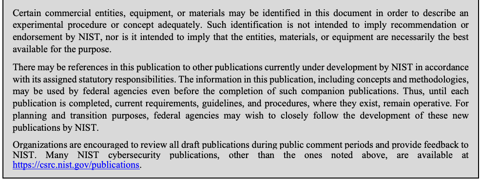
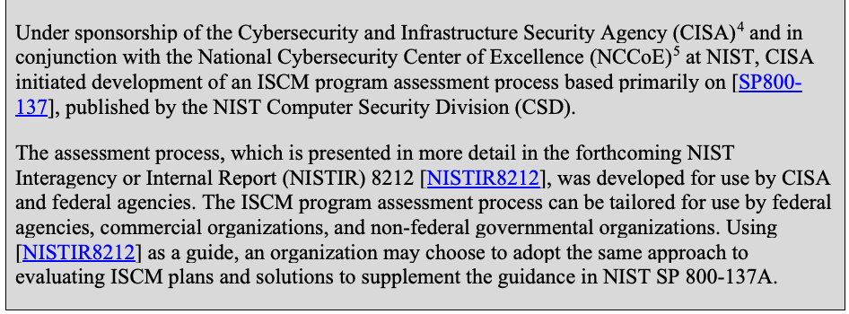
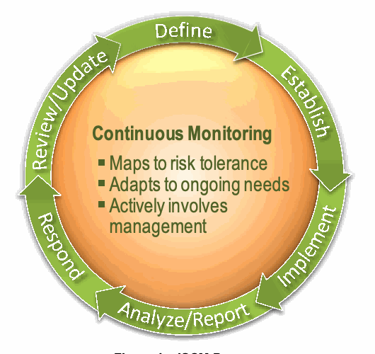
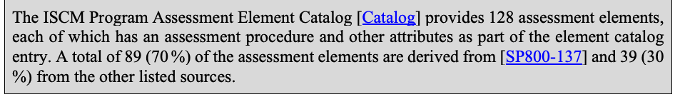
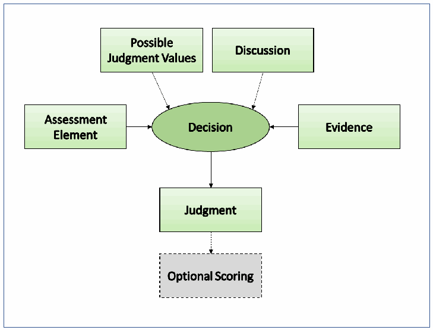
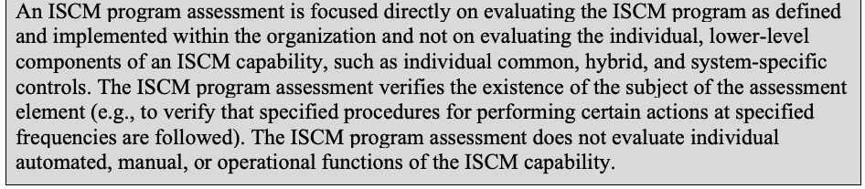

NIST SP 800-137A 日本語訳
英語タイトル : Assessing Information Security Continuous Monitoring (ISCM) Programs: Developing an ISCM Program Assessment日本語タイトル : ISCMプログラム評価の策定
公開日 : 2020-05-21
原文URL : https://csrc.nist.gov/pubs/sp/800/137/a/final
翻訳編集 : 自動生成（有志による非公式の日本語訳）, 原文取得日 : 2026-09-30, 訳文 : 789 / 789 ブロック
[要約] SP 800-137A は、組織の情報セキュリティ継続的モニタリング（ISCM）プログラムを評価する方法を策定するための文書です。ISCM管理とプログラム評価の基礎を説明し、評価プロセスの各段階、評価要素、評価基準と評価手順の例を示します。連邦、州、地方の政府機関や民間企業が利用でき、記載どおりに使うことも、組織固有の方法論を策定する出発点にすることもできます。
NIST Special Publication 800-137A
NIST Special Publication 800-137A
Assessing Information Security Continuous Monitoring (ISCM) Programs:
情報セキュリティ継続的モニタリング（ISCM）プログラムの評価：
Developing an ISCM Program Assessment
ISCMプログラム評価の策定
Kelley Dempsey Victoria Yan Pillitteri Chad Baer Robert Niemeyer Ron Rudman Susan Urban
Kelley Dempsey Victoria Yan Pillitteri Chad Baer Robert Niemeyer Ron Rudman Susan Urban
This publication is available free of charge from: https://doi.org/10.6028/NIST.SP.800-137A
本出版物は無料で入手できる：https://doi.org/10.6028/NIST.SP.800-137A
I N F O R M A T I O N S E C U R I T Y
情報セキュリティ
NIST Special Publication 800-137A
NIST Special Publication 800-137A
Assessing Information Security Continuous Monitoring (ISCM) Programs:
情報セキュリティ継続的モニタリング（ISCM）プログラムの評価：
Developing an ISCM Program Assessment
ISCMプログラム評価の策定
Kelley Dempsey
Kelley Dempsey
Victoria Yan Pillitteri
Victoria Yan Pillitteri
Computer Security Division
コンピュータセキュリティ部門
Information Technology Laboratory
情報技術研究所
Chad Baer
Chad Baer
Cybersecurity and Infrastructure Security Agency U.S. Department of Homeland Security
サイバーセキュリティ・インフラストラクチャセキュリティ庁 米国国土安全保障省
This publication is available free of charge from: https://doi.org/10.6028/NIST.SP.800-137A
本出版物は無料で入手できる：https://doi.org/10.6028/NIST.SP.800-137A
May 2020
2020年5月
Robert Niemeyer
Robert Niemeyer
Ron Rudman
Ron Rudman
Susan Urban
Susan Urban
The MITRE Corporation
The MITRE Corporation
McLean, VA
McLean, VA
U.S. Department of Commerce Wilbur L. Ross, Jr., Secretary
米国商務省 長官 Wilbur L. Ross, Jr.
National Institute of Standards and Technology
米国国立標準技術研究所（NIST）
Walter Copan, NIST Director and Under Secretary of Commerce for Standards and Technology
Walter Copan、NIST所長兼商務次官（標準・技術担当）
Authority
権限
This publication has been developed by NIST in accordance with its statutory responsibilities under the Federal Information Security Modernization Act (FISMA) of 2014, 44 U.S.C. § 3551 et seq., Public Law (P.L.) 113-283. NIST is responsible for developing information security standards and guidelines, including minimum requirements for federal information systems, but such standards and guidelines shall not apply to national security systems without the express approval of appropriate federal officials exercising policy authority over such systems. This guideline is consistent with the requirements of the Office of Management and Budget (OMB) Circular A-130.
本出版物は、2014年連邦情報セキュリティ近代化法（FISMA）、合衆国法典第44編第3551条以下、および公法（P.L.）113-283に基づく法定責任に従ってNISTが作成した。NISTは、連邦情報システムの最低要件を含む情報セキュリティ規格およびガイドラインを策定する責任を負う。ただし、国家安全保障システムについては、当該システムに関する政策権限を有する適切な連邦当局者の明示的な承認がない限り、これらの規格およびガイドラインを適用してはならない。本ガイドラインは、行政管理予算局（OMB）通達A-130の要件に整合している。
Nothing in this publication should be taken to contradict the standards and guidelines made mandatory and binding on federal agencies by the Secretary of Commerce under statutory authority. Nor should these guidelines be interpreted as altering or superseding the existing authorities of the Secretary of Commerce, Director of the OMB, or any other federal official. This publication may be used by nongovernmental organizations on a voluntary basis and is not subject to copyright in the United States. Attribution would, however, be appreciated by NIST.
本出版物のいかなる内容も、法的権限に基づき商務長官が連邦機関に義務付けた規格およびガイドラインに反するものと解釈してはならない。また、本ガイドラインを、商務長官、OMB長官またはその他の連邦職員の既存の権限を変更または置き換えるものと解釈してはならない。本出版物は、非政府組織が任意で使用できる。また、米国では著作権の対象ではない。ただし、NISTへの帰属表示を歓迎する。
National Institute of Standards and Technology Special Publication 800-137A Natl. Inst. Stand. Technol. Spec. Publ. 800-137A, 78 pages (May 2020) CODEN: NSPUE2
National Institute of Standards and Technology Special Publication 800-137A Natl. Inst. Stand. Technol. Spec. Publ. 800-137A、78ページ（2020年5月） CODEN: NSPUE2
This publication is available free of charge from: https://doi.org/10.6028/NIST.SP.800-137A
本出版物は無料で入手できます：https://doi.org/10.6028/NIST.SP.800-137A
Certain commercial entities, equipment, or materials may be identified in this document in order to describe an experimental procedure or concept adequately. Such identification is not intended to imply recommendation or endorsement by NIST, nor is it intended to imply that the entities, materials, or equipment are necessarily the best available for the purpose.
原本PDFの抜粋画像

実験手順または概念を十分に説明する目的で、本書では特定の商業事業体、装置または材料を挙げる場合がある。このような記載は、NISTによる推奨または保証を意味するものではなく、また、それらの事業体、材料または装置が当該目的に必ずしも最適であることを意味するものでもない。
There may be references in this publication to other publications currently under development by NIST in accordance with its assigned statutory responsibilities. The information in this publication, including concepts and methodologies, may be used by federal agencies even before the completion of such companion publications. Thus, until each publication is completed, current requirements, guidelines, and procedures, where they exist, remain operative. For planning and transition purposes, federal agencies may wish to closely follow the development of these new publications by NIST.
本出版物では、NISTが法定責任に基づいて現在策定中の他の出版物を参照する場合がある。本出版物の情報（概念および方法論を含む）は、これらの関連出版物が完成する前であっても、連邦機関が使用できる。したがって、各出版物が完成するまでは、現行の要件、ガイドラインおよび手順が存在する場合、それらは引き続き有効である。計画および移行のため、連邦機関はNISTによるこれらの新しい出版物の策定状況を注意深く追跡すべきである。
Organizations are encouraged to review all draft publications during public comment periods and provide feedback to NIST. Many NIST cybersecurity publications, other than the ones noted above, are available at https://csrc.nist.gov/publications.
組織には、パブリックコメント期間中にすべての草案を確認し、NISTに意見を提出することが推奨される。上記で特記したものを除き、多くのNISTサイバーセキュリティ出版物は https://csrc.nist.gov/publications で入手できる。
Comments on this publication may be submitted to:
本刊行物に関するコメントの送付先：
National Institute of Standards and Technology Attn: Computer Security Division, Information Technology Laboratory 100 Bureau Drive (Mail Stop 8930) Gaithersburg, MD 20899-8930 Email: sec-cert@nist.gov
National Institute of Standards and Technology Attn: Computer Security Division, Information Technology Laboratory 100 Bureau Drive (Mail Stop 8930) Gaithersburg, MD 20899-8930 Email: sec-cert@nist.gov
All comments are subject to release under the Freedom of Information Act (FOIA).
すべてのコメントは、情報自由法（FOIA）に基づく公開の対象となる。
Reports on Computer Systems Technology
コンピュータシステム技術に関する報告書
The Information Technology Laboratory (ITL) at the National Institute of Standards and Technology (NIST) promotes the U.S. economy and public welfare by providing technical leadership for the Nation’s measurement and standards infrastructure. ITL develops tests, test methods, reference data, proof of concept implementations, and technical analyses to advance the development and productive use of information technology. ITL’s responsibilities include the development of management, administrative, technical, and physical standards and guidelines for the cost-effective security and privacy of other than national security-related information in federal information systems. The Special Publication 800-series reports on ITL’s research, guidelines, and outreach efforts in information system security, and its collaborative activities with industry, government, and academic organizations.
米国国立標準技術研究所（NIST）の情報技術研究所（ITL）は、米国の計測および標準インフラに技術的リーダーシップを提供し、米国経済と公共の福祉を促進している。ITLは、情報技術の開発および生産的な利用を進めるため、試験、試験方法、参照データ、概念実証の実装および技術分析を開発している。ITLの責務には、連邦情報システムにおける国家安全保障関連以外の情報の費用対効果に優れたセキュリティとプライバシーのため、管理、運用、技術および物理的な規格とガイドラインを策定することが含まれる。Special Publication 800シリーズは、情報システムセキュリティに関するITLの研究、ガイドラインおよび普及活動、ならびに産業界、政府および学術機関との協力活動を報告する。
Abstract
概要
This publication describes an approach for the development of Information Security Continuous Monitoring (ISCM) program assessments that can be used to evaluate ISCM programs within federal, state, and local governmental organizations and commercial enterprises. An ISCM program assessment provides organizational leadership with information on the effectiveness and completeness of the organization’s ISCM program, including the review of ISCM strategies, policies, procedures, operations, and analysis of continuous monitoring data. The ISCM assessment approach can be used as presented or as the starting point for an organization-specific methodology. It includes example evaluation criteria and assessment procedures that can be applied to organizations.
本出版物は、連邦、州、地方の政府機関および民間企業のISCMプログラムを評価するために利用できる、情報セキュリティ継続的モニタリング（ISCM）プログラム評価の策定方法を説明する。ISCMプログラム評価は、ISCM戦略、方針、手順、運用のレビューおよび継続的モニタリングデータの分析を含め、組織のISCMプログラムの有効性と完全性に関する情報を組織のリーダーに提供する。このISCM評価アプローチは、記載どおりに使用することも、組織固有の方法論を策定する出発点として使用することもできる。組織に適用できる評価基準および評価手順の例を含む。
Keywords
キーワード
assessment; assessment element; assessment methodology; assessment procedure; continuous monitoring; information security continuous monitoring; ISCM program; ISCM program assessment.
評価；評価要素；評価方法論；評価手順；継続的モニタリング；情報セキュリティ継続的モニタリング；ISCMプログラム；ISCMプログラム評価。
Acknowledgments
謝辞
The authors wish to thank Jeff Finke and Tracy Teter (The MITRE Corporation), Eduardo Takamura (NIST), and Martin Stanley and Alan McClelland (Cybersecurity and Infrastructure Security Agency) for their detailed reviews of this publication. The authors also gratefully acknowledge the contribution of the Cybersecurity Assurance Branch at the Cybersecurity and Infrastructure Security Agency (CISA), whose members piloted the initial version of the ISCM methodology on which this publication is based, and wish to thank the Cybersecurity Division of CISA for sponsoring the development of this publication. In addition, a special note of thanks goes to Jim Foti, Lorin Smith, Isabel Van Wyk, and the NIST web team for their outstanding administrative support.
著者は、本出版物を詳細にレビューしたJeff Finke氏およびTracy Teter氏（The MITRE Corporation）、Eduardo Takamura氏（NIST）、Martin Stanley氏およびAlan McClelland氏（サイバーセキュリティ・インフラストラクチャセキュリティ庁）に謝意を表する。また、本出版物の基礎となったISCM方法論の初期版を試行した、同庁（CISA）サイバーセキュリティ保証課の貢献に深く感謝し、本出版物の策定を支援した同庁サイバーセキュリティ部にも謝意を表する。さらに、優れた事務支援を提供したJim Foti氏、Lorin Smith氏、Isabel Van Wyk氏およびNISTウェブチームに特別の感謝を申し上げる。
Patent Disclosure Notice
特許開示に関する通知
NOTICE: The Information Technology Laboratory (ITL) has requested that holders of patent claims whose use may be required for compliance with the guidance or requirements of this publication disclose such patent claims to ITL. However, holders of patents are not obligated to respond to ITL calls for patents and ITL has not undertaken a patent search in order to identify which, if any, patents may apply to this publication.
通知：情報技術研究所（ITL）は、本出版物のガイダンスまたは要件への準拠に使用が必要となる可能性のある特許請求の範囲を保有する者に対し、その開示を求めている。ただし、特許保有者はITLからの特許照会に回答する義務を負わない。また、ITLは、本出版物に適用される可能性のある特許の有無を特定するための特許調査を実施していない。
As of the date of publication and following call(s) for the identification of patent claims whose use may be required for compliance with the guidance or requirements of this publication, no such patent claims have been identified to ITL.
出版日時点で、本出版物のガイダンスまたは要件への準拠に使用が必要となる可能性のある特許請求の範囲について照会を行った結果、ITLに開示された該当特許請求の範囲はない。
No representation is made or implied by ITL that licenses are not required to avoid patent infringement in the use of this publication.
本出版物の使用において特許侵害を避けるためのライセンスが不要であると、ITLが表明または示唆するものではない。
Executive Summary
要約
To effectively manage cybersecurity risks, organizations require ongoing awareness of their information security posture, vulnerabilities, and threats.1 To achieve this awareness and better manage risks, organizations implement Information Security Continuous Monitoring (ISCM) capabilities under the direction of an ISCM program. An ISCM program defines, establishes, implements, and operates the various aspects of ISCM to provide the organization with the information necessary to make risk-based decisions regarding security status at all organizational risk management levels (organization level, mission and business process level, and system level).
サイバーセキュリティリスクを効果的に管理するには、組織は自らの情報セキュリティ態勢、脆弱性、脅威についての継続的な認識を必要とする。1この認識を得てリスクをより適切に管理するため、組織はISCMプログラムの指揮の下で情報セキュリティ継続的モニタリング（ISCM）機能を実装する。ISCMプログラムは、すべての組織リスク管理レベル（組織レベル、ミッション・業務プロセスレベル、システムレベル）でセキュリティ状態に関するリスクに基づく意思決定を行うために組織に必要な情報を提供するよう、ISCMのさまざまな側面を定義、確立、実装、運用する。
Organizations need a way to determine and evaluate if an established ISCM program is effectively managing the organization’s security posture commensurate with risk. This publication describes one approach to developing an ISCM program assessment based on evaluation criteria derived from multiple sources, (including NIST Special Publications (SP) 800-137, Information Security Continuous Monitoring (ISCM) for Federal Information Systems and Organizations, SP 800-37, Risk Management Framework for Information Systems and Organizations: A Life Cycle Approach for Security and Privacy, SP 800-39, Managing Information Security Risk: Organization, Mission and Information System View, and Office of Management and Budget (OMB) Circulars and Memoranda). An ISCM program assessment developed under guidance in this publication evaluates the ISCM program itself (i.e., the structure and governance of the ISCM program),not the results of the ISCM program or the continuous monitoring technologies used. An effective ISCM program assessment provides consistent results regardless of the entity conducting the assessment. This publication does not prescribe the assessment of individual controls nor the examination of control assessment results as part of the ISCM program assessment.
組織には、確立されたISCMプログラムが、リスクに見合った形で組織のセキュリティ態勢を効果的に管理しているかどうかを判定し評価する方法が必要である。本刊行物は、複数の情報源（NIST特別刊行物（SP）800-137『Information Security Continuous Monitoring (ISCM) for Federal Information Systems and Organizations』、SP 800-37『Risk Management Framework for Information Systems and Organizations: A Life Cycle Approach for Security and Privacy』、SP 800-39『Managing Information Security Risk: Organization, Mission and Information System View』、行政管理予算局（OMB）の通達および覚書を含む）から導出した評価基準に基づく、ISCMプログラム評価を策定するための1つのアプローチを述べる。本刊行物の指針に基づいて策定されたISCMプログラム評価は、ISCMプログラムそのもの（すなわちISCMプログラムの構造とガバナンス）を評価するものであり、ISCMプログラムの結果や使用される継続的モニタリング技術を評価するものではない。効果的なISCMプログラム評価は、評価を実施する主体にかかわらず一貫した結果をもたらす。本刊行物は、ISCMプログラム評価の一部として、個々の管理策の評価や管理策評価結果の検査を規定するものではない。
The overarching goal of the ISCM program assessment is to provide organizations with recommendations to improve the ISCM program and thereby manage and reduce organizational risk. An ISCM program assessment provides a means for evaluating an organization’s ISCM strategies, policies, procedures, implementations, operational procedures, analytical processes, specific reporting, results presentation, risk assessment and risk scoring, risk response, and the ISCM program improvement process. An ISCM program assessment may be developed by an organization to evaluate its own ISCM program or by an independent assessment organization.
ISCMプログラム評価の全体的な目標は、ISCMプログラムを改善し、それによって組織リスクを管理・低減するための提言を組織に提供することである。ISCMプログラム評価は、組織のISCM戦略、方針、手順、実装、運用手順、分析プロセス、個別の報告、結果の提示、リスク評価およびリスクスコアリング、リスク対応、ならびにISCMプログラム改善プロセスを評価する手段となる。ISCMプログラム評価は、組織が自組織のISCMプログラムを評価するために策定することも、独立した評価組織が策定することもできる。
Creating or adopting and using an ISCM program assessment can help reduce overall risk to organizations by identifying gaps in an ISCM program, in the implementation of an ISCM program, or in the operational use of ISCM results. In addition, an ISCM program assessment can indicate the level of readiness for system-level ongoing authorization.
ISCMプログラム評価を作成または採用して利用すると、ISCMプログラム、その実装、またはISCM結果の運用上の利用における欠落を特定でき、組織全体のリスク低減に役立つ。また、システムレベルの継続的認可に向けた準備状況を示すこともできる。
This publication:
本出版物は、次の事項を示す。
•Offers guidance on the development of an ISCM program assessment process for all organizational risk management levels, i.e., as defined in NIST SP 800-39, Managing Information Security Risk: Organization, Mission, and Information System View;
•NIST SP 800-39『情報セキュリティリスクの管理：組織、ミッションおよび情報システムの視点』で定義される、すべての組織リスク管理レベルを対象としたISCMプログラム評価プロセスの策定に関する指針を示す。
•Describes how an ISCM program assessment relates to important security concepts and processes, such as the NIST Risk Management Framework (RMF), organization-wide risk management levels, organizational governance, metrics applicable to ISCM, and ongoing authorization;
•ISCMプログラム評価と、NISTリスク管理フレームワーク（RMF）、組織全体のリスク管理レベル、組織ガバナンス、ISCMに適用される測定指標、継続的認可などの重要なセキュリティ概念およびプロセスとの関係を説明する。
•Describes the properties of an effective ISCM program assessment;
•効果的なISCMプログラム評価の特性を説明する。
•Presents a set of ISCM program assessment criteria, with references to the sources from which the criteria are derived, that can be adopted by an organization and used for ISCM program assessments or as a starting point for further development of an organization’s assessment criteria; and
•ISCMプログラム評価基準の一式を提示する。基準の導出元を参照しており、組織はこれを採用してISCMプログラム評価に使用するか、組織独自の評価基準をさらに策定する出発点として使用できる。
•Defines a way to conduct ISCM program assessments by using assessment procedures defined in the companion document containing the ISCM Program Assessment Element Catalog and designed to produce a repeatable assessment process.
•ISCMプログラム評価要素カタログを含む付属文書に定義された評価手順を用いてISCMプログラム評価を実施し、再現可能な評価プロセスを実現する方法を定義する。
Table of Contents
目次
List of Figures
図一覧
Figure 1 – ISCM Process — 8
図1 – ISCMプロセス — 8
Figure 2 – Example of Chains — 17
図2 – 連鎖の例 — 17
Figure 3 – Process for Making Judgments — 20
図3 – 判定プロセス — 20
Figure 4 – ISCM Program Assessment Process — 32
図4 – ISCMプログラム評価プロセス — 32
Figure 5 – ISCM Program Assessment Process (Plan) — 33
図5 – ISCMプログラム評価プロセス（計画） — 33
Figure 6 – ISCM Program Assessment Process (Conduct) — 36
図6 – ISCMプログラム評価プロセス（実施） — 36
Figure 7 – ISCM Program Assessment Process (Report) — 40
図7 – ISCMプログラム評価プロセス（報告） — 40
Figure 8 – Use of Example Assessment Item Information — 46
図8 – 評価項目情報の利用例 — 46
Figure 9 – ISCM Strategy Management Traceability Chain — 55
図9 – ISCM戦略管理のトレーサビリティ連鎖 — 55
Figure 10 – System-level Strategy Traceability Chain — 55
図10 – システムレベル戦略のトレーサビリティ連鎖 — 55
Figure 11 – ISCM Program Management Traceability Chain — 56
図11 – ISCMプログラム管理のトレーサビリティ連鎖 — 56
Figure 12 – Control Assessment Rigor Traceability Chain — 57
図12 – 管理策評価の厳密さに関するトレーサビリティ連鎖 — 57
Figure 13 – Security Status Monitoring Traceability Chain — 57
図13 – セキュリティ状況モニタリングのトレーサビリティ連鎖 — 57
Figure 14 – Common Control Assessment Traceability Chain — 58
図14 – 共通管理策評価のトレーサビリティ連鎖 — 58
Figure 15 – System-specific Control Assessment Traceability Chain — 58
図15 – システム固有の管理策評価のトレーサビリティ連鎖 — 58
Figure 16 – ISCM Results Included in Risk Assessment Traceability Chain — 59
図16 – リスク評価に含まれるISCM結果のトレーサビリティ連鎖 — 59
Figure 17 – Threat Information Traceability Chain — 59
図17 – 脅威情報のトレーサビリティ連鎖 — 59
Figure 18 – External Service Providers Traceability Chain — 59
図18 – 外部サービスプロバイダのトレーサビリティ連鎖 — 59
Figure 19 – Security-focused Configuration Management Traceability Chain — 60
図19 – セキュリティ重視の構成管理のトレーサビリティ連鎖 — 60
Figure 20 – Impact of Changes to Systems and Environments Traceability Chain — 60
図20 – システムおよび環境の変更による影響のトレーサビリティ連鎖 — 60
Figure 21 – External Security Service Providers Traceability Chain — 60
図21 – 外部セキュリティサービスプロバイダのトレーサビリティ連鎖 — 60
Figure 22 – Security Monitoring Tools Traceability Chain — 60
図22 – セキュリティモニタリングツールのトレーサビリティ連鎖 — 60
Figure 23 – Sampling Traceability Chain — 61
図23 – サンプリングのトレーサビリティ連鎖 — 61
Figure 24 – Risk Response Traceability Chain — 61
図24 – リスク対応のトレーサビリティ連鎖 — 61
Figure 25 – Ongoing Authorization Traceability Chain — 62
図25 – 継続的認可のトレーサビリティ連鎖 — 62
Figure 26 – Acquisition Decisions Traceability Chain — 62
図26 – 調達上の意思決定のトレーサビリティ連鎖 — 62
Figure 27 – ISCM Resources Traceability Chain — 63
図27 – ISCMリソースのトレーサビリティ連鎖 — 63
Figure 28 – ISCM Training Traceability Chain — 63
図28 – ISCMトレーニングのトレーサビリティ連鎖 — 63
Figure 29 – Metrics Traceability Chain — 64
図29 – 測定指標のトレーサビリティ連鎖 — 64
Figure 30 – Security Status Reporting Traceability Chain — 65
図30 – セキュリティ状況報告のトレーサビリティ連鎖 — 65
Figure 31 – Data Traceability Chain — 66
図31 – データのトレーサビリティ連鎖 — 66
Figure 32 – ISCM Program Governance Traceability Chain — 66
図32 – ISCMプログラムガバナンスのトレーサビリティチェーン — 66
List of Tables
表一覧
1 Introduction
1 序論
Under the Federal Information Modernization Act of 2014 (FISMA) [FISMA2014] and Office of Management and Budget (OMB) Circulars and Memoranda,2 federal agencies are directed to implement a program to continuously monitor organizational information security status. A comprehensive continuous monitoring program serves as a risk management and decision support tool used at each level of an organization. Strategies and business objectives at the organizational level direct activities needed at the mission and business levels as well as system level functions and technologies implemented in support of continuous monitoring.
2014年連邦情報近代化法（FISMA）［FISMA2014］および行政管理予算局（OMB）の通達・覚書2に基づき、連邦機関は組織の情報セキュリティ状況を継続的にモニタリングするプログラムを実施するよう指示されている。包括的な継続的モニタリングプログラムは、組織の各レベルで利用されるリスク管理・意思決定支援ツールである。組織レベルの戦略と事業目標が、ミッションおよび事業レベルで必要な活動と、継続的モニタリングを支援するシステムレベルの機能・技術を方向付ける。
NIST Special Publication (SP) 800-137, Information Security Continuous Monitoring (ISCM) for Federal Information Systems and Organizations [SP800-137], defines information security continuous monitoring (ISCM) as maintaining ongoing awareness of information security, vulnerabilities, and threats to support organizational risk management decisions. An ISCM program defines, establishes, implements, and operates the various aspects of ISCM to provide the organization with the information necessary to make risk-based decisions regarding security status at all three organizational risk management levels.
NIST Special Publication（SP）800-137『連邦情報システムおよび組織のための情報セキュリティ継続的モニタリング（ISCM）』［SP800-137］は、ISCMを、組織のリスク管理上の意思決定を支援するために情報セキュリティ、脆弱性および脅威を継続的に把握することと定義している。ISCMプログラムは、組織の3つすべてのリスク管理レベルでセキュリティ状況に関するリスクベースの意思決定に必要な情報を提供するため、ISCMの各側面を定義、確立、実装および運用する。
To effectively address increasing security challenges, the ISCM program:
増大するセキュリティ課題に効果的に対処するため、ISCMプログラムは次を行う。
•Addresses the assessment of controls for effectiveness and security status monitoring;3
•管理策の有効性評価とセキュリティ状況モニタリングに取り組む。3
•Promotes the concept of near real-time risk management and ongoing system authorization through the implementation of robust, organization-wide continuous monitoring processes; and
•堅牢で組織全体にわたる継続的モニタリングプロセスを実装し、ほぼリアルタイムのリスク管理と継続的なシステム認可の概念を促進する。
•Incorporates processes to ensure that response actions are taken in accordance with findings and organizational risk tolerances and that they have the intended effects.
•所見と組織のリスク許容度に従って対応措置を講じ、意図した効果が得られるようにするプロセスを組み込む。
This publication, NIST SP 800-137A, provides guidance on how an organization can assess ISCM program completeness and effectiveness, and detect deficiencies in its ISCM program. The goal of the ISCM program assessment is to provide a means for evaluating organizational ISCM program elements, including the review of ISCM strategies, policies, procedures, implementation planning, ISCM metrics, analytical processes, specific results presentation and reporting, risk response, and the ISCM improvement process. The approach used throughout this publication is based on the concepts and principles of [SP800-137] and the ISCM requirements mandated for federal organizations.
本出版物NIST SP 800-137Aは、組織がISCMプログラムの完全性と有効性を評価し、欠陥を検出する方法を示す。ISCMプログラム評価の目的は、ISCM戦略、方針、手順、実装計画、ISCM測定指標、分析プロセス、個別の結果提示・報告、リスク対応およびISCM改善プロセスのレビューなど、組織のISCMプログラム要素を評価する手段を提供することである。本出版物全体のアプローチは、［SP800-137］の概念・原則と、連邦組織に義務付けられたISCM要件に基づく。
The term assessment is used in two ways in this publication. Assessment may refer to the completed action of ISCM program evaluation or to the vehicle that is reused for each evaluation (e.g., a template or blank worksheet). The context in which the term is used conveys the applicable meaning.
本出版物では「評価」という語を2つの意味で使用する。ISCMプログラム評価を完了する行為を指す場合と、各評価で再利用する媒体（テンプレートや空のワークシートなど）を指す場合がある。文脈によって該当する意味が分かる。
1.1 Background
1.1 背景
Organizations face the continual challenge of providing timely and complete security information with which to make risk-based management decisions, which is the objective of the ISCM program. An effective ISCM program produces timely, security-related information that is accurate and complete for presentation to decision makers at multiple levels of the organization. At the organizational level, it may not be well understood how, where, or why the ISCM program fits into the organization-wide risk management strategy. It is crucial for the organization’s leadership to understand how business needs and capabilities drive the ISCM program. In many cases, capabilities needed for organizational continuous monitoring may already exist within the organization. However, without a comprehensive strategy to formally codify monitoring capabilities as enabling ISCM functions, a true ISCM program does not exist.
組織は、リスクベースの管理上の意思決定に用いる、適時かつ完全なセキュリティ情報を提供し続けるという課題に直面している。これはISCMプログラムの目的である。効果的なISCMプログラムは、組織の複数のレベルで意思決定者に提示できる、適時で正確かつ完全なセキュリティ関連情報を生成する。組織レベルでは、ISCMプログラムが組織全体のリスク管理戦略のどこに、どのように、なぜ位置付けられるのかが十分に理解されていない場合がある。事業ニーズと能力がISCMプログラムをどのように方向付けるのかを組織のリーダーが理解することが重要である。組織内に、組織的な継続的モニタリングに必要な能力が既に存在する場合も多くある。しかし、モニタリング能力をISCM機能として正式に定める包括的な戦略がなければ、真のISCMプログラムは存在しない。
Organizations need a method for evaluating what has been planned, developed, or acquired to implement ISCM, particularly if the ISCM program is developed internally. This helps determine whether the organization’s ISCM program is adequate and if the investment is providing value.
組織には、ISCMを実施するために計画、開発または取得したものを評価する方法が必要である。特にISCMプログラムを内部で開発した場合に重要である。これにより、組織のISCMプログラムが適切か、投資が価値をもたらしているかを判断できる。
To determine the effectiveness of an organization’s ISCM program, the organization develops and uses a formal assessment for evaluation that provides organizational leadership with information about how well the ISCM program meets its intended objectives. An ISCM program assessment may be comprised of evaluation criteria, judgments, and scores about specific aspects of ISCM capabilities as well as conclusions based on an analysis of the collected data. An ISCM program assessment may also provide recommendations to the organization based on assessment results.
組織のISCMプログラムの有効性を判断するため、組織は、プログラムが意図した目標をどの程度満たしているかを組織のリーダーに伝える正式な評価を策定し、実施する。ISCMプログラム評価には、ISCM能力の特定の側面に関する評価基準、判定、スコア、および収集データの分析に基づく結論を含めることができる。また、評価結果に基づいて組織に提言することもできる。
Under sponsorship of the Cybersecurity and Infrastructure Security Agency (CISA)4 and in conjunction with the National Cybersecurity Center of Excellence (NCCoE)5 at NIST, CISA initiated development of an ISCM program assessment process based primarily on [SP800-137], published by the NIST Computer Security Division (CSD).
原本PDFの抜粋画像

サイバーセキュリティ・インフラストラクチャセキュリティ庁（CISA）4の支援の下、NISTの国立サイバーセキュリティ・エクセレンスセンター（NCCoE）5と連携し、CISAはNISTコンピュータセキュリティ部門（CSD）が公表した［SP800-137］を主な基礎とするISCMプログラム評価プロセスの策定を開始した。
The assessment process, which is presented in more detail in the forthcoming NIST Interagency or Internal Report (NISTIR) 8212 [NISTIR8212], was developed for use by CISA and federal agencies. The ISCM program assessment process can be tailored for use by federal agencies, commercial organizations, and non-federal governmental organizations. Using [NISTIR8212] as a guide, an organization may choose to adopt the same approach to evaluating ISCM plans and solutions to supplement the guidance in NIST SP 800-137A.
この評価プロセスは、今後公表予定のNIST省庁間・内部報告書（NISTIR）8212［NISTIR8212］でより詳細に示されており、CISAおよび連邦機関での使用を目的に策定された。ISCMプログラム評価プロセスは、連邦機関、商業組織および非連邦政府組織で使えるよう調整できる。［NISTIR8212］を指針として、組織はNIST SP 800-137Aの指針を補うため、ISCM計画・ソリューションの評価に同じアプローチを採用できる。
1.2 Purpose
1.2 目的
This publication:
本出版物は、次の事項を示す。
•Provides guidance on the development of an ISCM program assessment for all organizational risk management levels;
•組織のすべてのリスク管理レベルを対象とするISCMプログラム評価の策定指針を提供する。
•Defines a methodology to conduct ISCM program assessments;
•ISCMプログラム評価を実施する方法論を定義する。
•Presents a set of detailed ISCM program assessment criteria that can be adopted by an organization or assessing organization; and
•組織または評価組織が採用できる、詳細なISCMプログラム評価基準を提示する。
•Describes the properties of an effective ISCM program assessment.
•効果的なISCMプログラム評価の特性を説明する。
In addition, the guidance presented in this publication can be used to produce an ISCM program assessment to:
さらに、本出版物の指針を用いて、次の目的のISCMプログラム評価を作成できる。
•Evaluate planned modifications to an existing ISCM program;
•既存のISCMプログラムに対する計画済み変更を評価する。
•Guide the direction of a planned or future ISCM program by providing a starting point for ISCM development; and
•ISCM策定の出発点を提供し、計画中または将来のISCMプログラムの方向を導く。
•Monitor the effectiveness of specifically recognized national or organizational priority items, (e.g., insider threats) or high priority/visibility initiatives (e.g., high value assets) in the ISCM program assessment.
•ISCMプログラム評価の中で、特定された国家的・組織的優先事項（内部脅威など）または優先度・注目度の高い取組み（高価値資産など）の有効性をモニタリングする。
1.3 Audience
1.3 対象読者
This publication serves individuals associated with the continuous monitoring of information security posture and organizational risk management, including:
本出版物は、情報セキュリティ態勢の継続的モニタリングおよび組織リスク管理に関わる次の人々を対象とする。
•Individuals responsible for the review of an organization’s ISCM program, including management and assessors who conduct technical reviews (e.g., system evaluators, internal and third-party assessors/assessment teams, independent verification and validation assessors, auditors, and system owners);
•組織のISCMプログラムのレビューを担う個人。管理担当者と、技術レビューを行う評価者（システム評価者、内部・第三者評価者／評価チーム、独立検証・妥当性確認評価者、監査人、システム所有者など）を含む。
•Individuals with mission/business ownership responsibilities or fiduciary responsibilities (e.g., heads of federal agencies, chief executive officers, and chief financial officers);
•ミッション／事業の所有責任または受託者責任を持つ人（連邦機関の長、最高経営責任者、最高財務責任者など）。
•Individuals with system development and integration responsibilities that consider ISCM functionality (e.g., program managers, system owners, information technology product developers, system developers, systems integrators, enterprise architects, information security architects, and common control providers);
•ISCM機能を考慮するシステム開発・統合責任者（プログラムマネージャー、システム所有者、IT製品開発者、システム開発者、システムインテグレーター、エンタープライズアーキテクト、情報セキュリティアーキテクト、共通管理策提供者など）。
•Individuals with system and/or security management/oversight responsibilities (e.g., senior leaders, risk executives, authorizing officials, chief information officers, chief information security officers6) who make risk-based decisions based, in part, on security-related information generated from continuous monitoring); and
•システムおよび／またはセキュリティの管理・監督を担い、継続的モニタリングから得たセキュリティ関連情報を一部根拠としてリスクベースの意思決定を行う人（上級リーダー、リスク責任者、認可担当者、最高情報責任者、最高情報セキュリティ責任者6など）。
•Individuals with system and security control assessment and monitoring responsibilities (e.g., system evaluators, assessors/assessment teams, independent verification and validation assessors, auditors, system owners, or system security officers).
•システムおよびセキュリティ管理策の評価・モニタリングを担う人（システム評価者、評価者／評価チーム、独立検証・妥当性確認評価者、監査人、システム所有者、システムセキュリティ責任者など）。
1.4 Scope
1.4 範囲
This publication addresses the entire ISCM program assessment process and is used to evaluate the establishment and operation of ISCM programs across organizations. The assessment of individual controls and the examination of control assessment results is outside of the scope of the ISCM program assessment.
本出版物はISCMプログラム評価プロセス全体を扱い、組織横断でISCMプログラムの確立と運用を評価するために用いる。個々の管理策の評価および管理策評価結果の検討は、ISCMプログラム評価の範囲外である。
There are many ways to evaluate an organizational program or system against a set of criteria. This publication specifies one approach for developing assessments for doing so based on evaluation criteria derived from multiple sources. The ISCM program assessment evaluates the structure and governance of the ISCM program and does not evaluate the continuous monitoring technologies or implementations themselves. An assessment developed under the guidance provided herein is technology-neutral, flexible, and scalable to be easily adopted by any organization and applied to any type of security monitoring technology. Organizations are encouraged to use the approach specified in this publication as a starting point to develop an assessment to better meet specific organizational needs.
一連の基準に照らして組織のプログラムまたはシステムを評価する方法は多数ある。本出版物は複数の情報源から導出した評価基準に基づき、そのような評価を策定する1つのアプローチを定める。ISCMプログラム評価は、ISCMプログラムの構造とガバナンスを評価し、継続的モニタリング技術や実装自体は評価しない。本指針に基づく評価は、技術に依存せず、柔軟かつ拡張可能であり、あらゆる組織が容易に採用し、あらゆる種類のセキュリティモニタリング技術に適用できる。組織固有のニーズにより適合した評価を策定する出発点として、本出版物のアプローチを使用することが推奨される。
1.5 Assumptions
1.5 前提
It is assumed that the reader is familiar with the ISCM concepts described in [SP800-137] and has a working-level understanding of the NIST Risk Management Framework (RMF) as defined and amended in [SP800-37]. It is also assumed that the reader is familiar with risk management processes across the organization and organizational levels as defined and amended in NIST SP 800-39 [SP800-39], Managing Information Security Risk: Organization, Mission, and Information System View.
読者は［SP800-137］に記載されたISCMの概念に精通し、［SP800-37］で定義・改訂されたNISTリスク管理フレームワーク（RMF）を実務レベルで理解していることを前提とする。また、NIST SP 800-39［SP800-39］『情報セキュリティリスクの管理：組織、ミッションおよび情報システムの視点』で定義・改訂された、組織および組織内の各レベルにわたるリスク管理プロセスにも精通していることを前提とする。
1.6 Organization of this Publication
1.6 本出版物の構成
The remainder of this NIST Special Publication is organized as follows:
本NIST Special Publicationの残りは次のように構成されている。
•Section 2 describes the fundamentals of assessing an organization’s ongoing monitoring of information security (i.e., ISCM) in support of risk management, ISCM background, interaction with NIST RMF, ISCM program assessment criteria and their sources, ISCM program assessment criteria development, and using the ISCM program assessment. Topics described in Section 2 are somewhat independent of each other.
•第2節では、リスク管理を支援する、組織の情報セキュリティの継続的モニタリング（すなわちISCM）の評価の基礎、ISCMの背景、NIST RMFとの相互作用、ISCMプログラム評価基準とその情報源、ISCMプログラム評価基準の策定、およびISCMプログラム評価の利用を説明する。第2節で説明するトピックは互いにある程度独立している。
•Section 3 describes the process of assessing ISCM programs, including planning and execution of assessments, assessment procedures, and the use of results. Section 3 presents an integrated assessment process using the topics introduced in Section 2.
•第3節では、評価の計画・実施、評価手順、結果の利用を含む、ISCMプログラムの評価プロセスを説明する。第3節では、第2節で紹介したトピックを用いた統合的な評価プロセスを示す。
•A References section lists general references found in this publication.
•参考文献の節には、本出版物で参照する一般的な資料を列挙する。
•Supporting appendices provide additional information regarding ISCM, including: (A) acronyms, (B) glossary, and (C) diagrams showing relationships among the assessment elements.
•付録には、ISCMに関する追加情報を示す。（A）略語、（B）用語集、（C）評価要素間の関係を示す図。
•A separate spreadsheet provides a complete catalog of the assessment elements and assessment procedures that can be used to build an ISCM program assessment element [Catalog].
•別個のスプレッドシートには、ISCMプログラム評価を構築するために使用できる評価要素および評価手順の完全なカタログが含まれている［Catalog］。
2 The Fundamentals
2 基礎
This section explains the fundamentals of the ISCM program assessment, a management process that provides a view into the adequacy and effectiveness of the:
本節では、次の事項の妥当性と有効性を示す管理プロセスであるISCMプログラム評価の基礎を説明する。
•ISCM strategy and planning;
•ISCM戦略および計画
•Establishment of the ISCM program;
•ISCMプログラムの確立
•Implementation of ISCM strategies, policies, procedures, and metrics;
•ISCM戦略、方針、手順および測定指標の実装
•Operation of the ISCM program;
•ISCMプログラムの運用
•Analysis of data collected and reporting of results;
•収集データの分析および結果の報告
•Response to ISCM results; and
•ISCM結果への対応
•ISCM process improvement.
•ISCMプロセスの改善
The fundamentals presented in this section are integrated into an assessment process in Section 3.
本節で示した基礎概念は、第3節で評価プロセスに統合される。
The development process of the ISCM program assessment does not seek to evaluate the organization, its missions/business processes, and systems for every ISCM concept presented in [SP800-137]. Rather, the ISCM program assessment determines if the concepts, along with ISCM requirements levied on federal organizations by FISMA and OMB, are sufficiently addressed to permit a determination of ISCM program robustness.7 It should be noted that each organization or assessor developing an ISCM program assessment from the guidance in this publication is likely to produce different assessment criteria depending on what is important to the organization or assessor.
ISCMプログラム評価の策定プロセスは、［SP800-137］に示されるすべてのISCM概念について、組織、ミッション／事業プロセスおよびシステムを評価するものではない。ISCMプログラム評価では、それらの概念に加え、FISMAとOMBが連邦組織に課すISCM要件が、ISCMプログラムの堅牢性を判断するのに十分に扱われているかを判定する。7本出版物の指針からISCMプログラム評価を策定する組織または評価者ごとに、重要視する事項が異なるため、評価基準も異なる可能性がある。
2.1 ISCM Management
2.1 ISCM管理
ISCM is an organization-wide responsibility first, then a system-level responsibility [SP800-37], which includes mission and business processes as well. Organization-wide continuous monitoring efforts begin with organizational leadership defining a comprehensive, organization-wide ISCM strategy that directly supports decision making within the risk executive function (RE(f)) and includes consistently managed metrics linked to each organizational risk management level.8 Only when an ISCM strategy is defined and adopted at the organizational level and intrinsically linked to the RE(f) can the ISCM program be established with the appropriate breadth and depth to provide all levels of the organization with clearly defined responsibilities. The organizational level strategy is supported by system-level ISCM strategies and, optionally, mission/business process ISCM strategies.
ISCMは、まず組織全体の責任であり、次にシステムレベルの責任である［SP800-37］。ミッションおよび事業プロセスも含まれる。組織全体の継続的モニタリングは、リスク責任者機能（RE(f)）の意思決定を直接支援し、各組織リスク管理レベルに連動して一貫して管理される測定指標を含む、包括的な組織全体のISCM戦略を組織のリーダーが定義することから始まる。8組織レベルでISCM戦略が定義・採用され、RE(f)と本質的に結び付いた後に初めて、組織の全レベルに明確な責任を示せる適切な幅と深さを備えたISCMプログラムを確立できる。組織レベルの戦略はシステムレベルのISCM戦略によって支援され、必要に応じてミッション／事業プロセスのISCM戦略によっても支援される。
ISCM encompasses all of the people, policies, processes, technologies, and standards that are used to perform the continuous monitoring function. ISCM is an enabling process that supports or provides organizational sustainment in the face of cybersecurity threats and risks.
ISCMには、継続的モニタリング機能の実施に使う人、方針、プロセス、技術および規格すべてが含まれる。ISCMは、サイバーセキュリティ上の脅威やリスクに直面して組織の活動を維持することを支援または可能にするプロセスである。
An adequately developed ISCM program identifies the specific activities at each level of the organization that enable an organization-wide ISCM function. To effectively support the overall ISCM effort, ISCM activities are consistently developed, deployed, and sustained with explicit mapping to the ISCM strategic objectives and risk management strategy for the entire organization.
適切に策定されたISCMプログラムは、組織全体のISCM機能を可能にする具体的な活動を各組織レベルで特定する。全体的なISCMの取組みを効果的に支援するには、組織全体のISCM戦略目標とリスク管理戦略に明示的に対応付けて、ISCM活動を一貫して策定、展開および維持する。
The following subsections summarize important ISCM concepts and introduce how the ISCM program assessment relates to each concept. For additional information on developing and implementing ISCM, see [SP800-137].
以下の小節では、重要なISCMの概念を要約し、ISCMプログラム評価が各概念とどのように関係するかを紹介する。ISCMの策定と実装に関する追加情報については、［SP800-137］を参照のこと。
2.1.1 ISCM Background
2.1.1 ISCMの背景
ISCM goals include detection of anomalies and changes in the organization’s environments of operation and systems, visibility into assets, awareness of vulnerabilities and threats, knowledge of security control effectiveness, and security posture. To meet ISCM goals, tools, technologies, and manual and automated methods are implemented within the context of an ISCM architecture designed to deliver the required information in the appropriate context, at the right level of detail, and at the right frequencies. The key outcome of the ISCM program is to enable the collection, integration, analysis, and presentation of security-related information from all systems and their environments of operation across the organization to inform risk-based decision making.9
ISCMの目標には、組織の運用環境およびシステムにおける異常・変更の検出、資産の可視性、脆弱性・脅威の認識、セキュリティ管理策の有効性に関する知識、セキュリティ態勢の把握が含まれる。ISCM目標を満たすため、必要な情報を適切な文脈、詳細度および頻度で提供するよう設計されたISCMアーキテクチャの中で、ツール、技術、手動・自動の方法を実装する。ISCMプログラムの主要な成果は、リスクベースの意思決定に役立てるために、組織全体のすべてのシステムおよびそれらの運用環境からセキュリティ関連情報を収集、統合、分析、提示することを可能にすることである。9
An effective ISCM program identifies manual and automated monitoring processes in the organization-wide ISCM strategy, integrates the processes and associated outputs, and incorporates results into a view of situational awareness. Where manual processes are used, the processes are verified so that they are repeatable and enable a consistent implementation. Automated processes, including the use of automated support tools, can make continuous monitoring more consistent, efficient, accurate, and cost-effective.
効果的なISCMプログラムは、組織全体のISCM戦略で手動・自動のモニタリングプロセスを特定し、それらのプロセスと関連出力を統合して、状況認識の全体像に結果を組み込む。手動プロセスを用いる場合は、再現可能で一貫して実装できるよう検証する。自動支援ツールを含む自動プロセスにより、継続的モニタリングの一貫性、効率、正確性および費用対効果を高められる。
An effective ISCM program facilitates ongoing authorization and reauthorization decisions for systems [SP800-37], as discussed in Section 2.1.7. Security-related information collected during continuous monitoring is used to make updates to the authorization package and supporting artifacts for each applicable system. Updated artifacts provide evidence that the baseline controls continue to safeguard the system as originally planned.
効果的なISCMプログラムは、2.1.7節で述べるとおり、システムの継続的認可および再認可の意思決定を促進する［SP800-37］。継続的モニタリング中に収集したセキュリティ関連情報は、該当する各システムの認可パッケージと支援資料を更新するために用いられる。更新された資料は、ベースライン管理策が当初の計画どおりシステムを引き続き保護していることの証拠となる。
2.1.2 ISCM Process Steps
2.1.2 ISCMプロセスの手順
NIST SP 800-137 organizes the ISCM process into six steps, as depicted in Figure 1 and explained below. It is important to note that any effort or process intended to support ongoing monitoring of information security across an organization begins with the development of a comprehensive ISCM strategy that encompasses technologies, processes, procedures, operating environments, and people.
NIST SP 800-137は、図1に示すとおりISCMプロセスを6つの手順に整理し、以下で説明している。組織全体の情報セキュリティの継続的モニタリングを支援する取組みやプロセスは、技術、プロセス、手順、運用環境および人を包含する包括的なISCM戦略の策定から始まる点が重要である。

図1 – ISCMプロセス。橙色の球の周りを、6つの緑色の曲がった矢印が時計回りに環状に巡る図である。矢印はDefine（定義）、Establish（確立）、Implement（実装）、Analyze/Report（分析／報告）、Respond（対応）、Review/Update（見直し／更新）の順で、Review/UpdateからDefineへ戻る。球には「Continuous Monitoring」（継続的モニタリング）という見出しと、「Maps to risk tolerance」（リスク許容度に対応付ける）、「Adapts to ongoing needs」（継続的なニーズに適応する）、「Actively involves management」（管理者が積極的に関与する）の3つの箇条がある。
Figure 1 – ISCM Process
図1 – ISCMプロセス
The six ISCM steps are referred to as “process steps” in this publication and are:
本出版物では、ISCMの6つの手順を「プロセス手順」と呼ぶ。それらは次のとおりである。
1.Define ISCM Strategy (Define) – Define the organization-wide and system-level ISCM strategies, based on organizational risk tolerance, that maintain clear visibility into assets, awareness of vulnerabilities, up-to-date threat information, and mission/business impacts. A system-level ISCM strategy consistent with the organization-wide ISCM strategy is defined for each system within the organization. A mission/business process area may also define an ISCM strategy that is consistent with the organization-wide strategy and applies to the systems supporting the mission/business process area.
1.ISCM戦略の定義（Define）– 組織のリスク許容度に基づいて組織全体およびシステムレベルのISCM戦略を定義し、資産の明確な可視性、脆弱性の認識、最新の脅威情報、ミッション／事業への影響を維持する。組織内の各システムについて、組織全体のISCM戦略と整合するシステムレベルのISCM戦略を定義する。ミッション／事業プロセス領域も、組織全体の戦略と整合し、当該領域を支援するシステムに適用するISCM戦略を定義できる。
2.Establish ISCM Program (Establish) – Establish an ISCM program, determining metrics, status monitoring frequencies, control assessment frequencies, and an ISCM technical architecture.
2.ISCMプログラムの確立（Establish）– 測定指標、状況モニタリング頻度、管理策評価頻度およびISCM技術アーキテクチャを定め、ISCMプログラムを確立する。
3.Implement ISCM Program (Implement) – Implement the ISCM program and collect the security-related information required for metrics, assessments, and reporting. Automate collection, analysis, and reporting of data where possible.
3.ISCMプログラムの実装（Implement）– ISCMプログラムを実装し、測定指標、評価および報告に必要なセキュリティ関連情報を収集する。可能な場合はデータ収集、分析および報告を自動化する。
4.Analyze ISCM Data and Report Findings (Analyze/Report) – Analyze the data collected, report findings, and determine the appropriate response. It may be necessary to collect additional information to clarify or supplement existing monitoring data.
4.ISCMデータの分析と調査結果の報告（Analyze/Report） – 収集したデータを分析し、調査結果を報告し、適切な対応を決定する。既存のモニタリングデータを明確化または補足するため、追加の情報収集が必要となる場合がある。
5.Respond to ISCM Findings (Respond) – Respond to findings with technical, management, and operational risk-mitigating activities, or accept, transfer/share, or avoid/reject the risk.
5.ISCM所見への対応（Respond）– 技術、管理および運用上のリスク低減活動によって所見に対応するか、リスクを受容、移転／共有、または回避／拒否する。
6.Review and Update ISCM Program and Strategy (Review/Update) – Review and update the monitoring program, adjust the ISCM strategy at the applicable level, and mature measurement capabilities to increase visibility into assets and awareness of vulnerabilities, further enable data-driven control of the security of an organization’s information infrastructure, and increase organizational resilience.
6.ISCMプログラムと戦略の見直しと更新（Review/Update） – モニタリングプログラムを見直して更新し、該当するレベルのISCM戦略を調整し、測定能力を成熟させることで、資産の可視性と脆弱性の認識を高め、組織の情報基盤のセキュリティに対するデータ駆動型の統制を一層可能にし、組織のレジリエンスを高める。
The organization-wide, system-level, and optional mission/business process ISCM strategies are defined in the ISCM Define step. The organization-wide and optional mission/business process ISCM strategies are addressed in the RMF Prepare step for Level 1 and Level 2, and the system-level ISCM strategy is addressed in the RMF Select step for Level 3 (see [SP800-37]).10
組織全体、システムレベル、および任意のミッション／業務プロセスのISCM戦略は、ISCMのDefineステップで定義される。組織全体および任意のミッション／業務プロセスのISCM戦略は、レベル1およびレベル2についてはRMFのPrepareステップで扱われ、システムレベルのISCM戦略は、レベル3についてはRMFのSelectステップで扱われる（［SP800-37］を参照）。10
2.1.3 Organization-Wide Risk Management Levels
2.1.3 組織全体のリスク管理レベル
ISCM applies to all three organizational risk management levels11 defined in [SP800-39]:
ISCMは、［SP800-39］で定義された3つの組織リスク管理レベル11のすべてに適用される。
•Level 1 (organization level) addresses risk across the entire organization and informs Levels 2 and 3 of risk context and risk decisions made at Level 1.
•レベル1（組織レベル）は組織全体のリスクを扱い、レベル1で決定したリスク状況とリスク判断をレベル2・3に伝える。
•Level 2 (mission or business process level) addresses risk from a mission/business process perspective and is informed by risk context, risk decisions, and risk activities at Level 1.
•レベル2（ミッションまたは事業プロセスレベル）は、ミッション／事業プロセスの視点からリスクを扱う。レベル1のリスク状況、リスク判断およびリスク活動を踏まえる。
•Level 3 (system level) is the system-oriented level within the organization. Level 3 focuses on system activity and is guided by the risk context, decisions, and activities at Level 1 and Level 2.
•レベル3（システムレベル）は組織内のシステム中心のレベルである。システム活動に焦点を当て、レベル1・2のリスク状況、判断および活動を指針とする。
Security-related information is obtained and acted on at Level 3, and is communicated to Levels 1 and 2 to be incorporated into organization-wide and mission/business process risk determinations. The ISCM program assessment verifies the flow of information between levels.
セキュリティ関連情報はレベル3で取得して対応し、組織全体およびミッション／事業プロセスのリスク判断に組み込むため、レベル1・2へ伝達する。ISCMプログラム評価では、各レベル間の情報の流れを検証する。
2.1.4 NIST Risk Management Framework and ISCM
2.1.4 NISTリスク管理フレームワークとISCM
The RMF, defined by [SP800-37], is a disciplined and structured process that integrates information security and risk management activities into the system development life cycle for organizations and systems. Implementation of the ISCM program may rely on artifacts and processes implemented as part of the RMF and also provides input to the RMF steps to understand and manage risk. The assessment approach and assessment elements address any potential overlap and/or relationships.
［SP800-37］で定義されるRMFは、組織およびシステムのシステム開発ライフサイクルに、情報セキュリティとリスク管理活動を統合する規律ある構造化されたプロセスである。ISCMプログラムの実装はRMFの一部として実装された資料・プロセスに依存する場合があり、リスクを理解・管理するためRMF手順に情報を提供するものでもある。評価アプローチと評価要素は、重複や関係の可能性に対処する。
The RMF Monitor step describes continuous monitoring, which is a critical part of the risk management process. Organizational continuous monitoring requirements can be met through implementation of ISCM, and ISCM can provide results that used in the identification of and risk response. In addition, an organization’s overall security architecture and accompanying security program are monitored through ISCM to ensure that organization-wide operations remain within an acceptable level of risk, despite any changes that occur. Timely, relevant, and accurate security-related information is vital, particularly when resources are limited and organizations must prioritize their efforts.
RMFのMonitor手順は、リスク管理プロセスの重要な部分である継続的モニタリングを説明する。組織の継続的モニタリング要件はISCM実装を通じて満たすことができ、ISCMはリスクの特定と対応に用いる結果を提供できる。また、組織全体の運用が、発生する変更にかかわらず許容可能なリスク水準内にとどまるよう、ISCMを通じて組織全体のセキュリティアーキテクチャと関連セキュリティプログラムをモニタリングする。特に資源が限られ、組織が取組みの優先順位を付ける必要がある場合、適時で関連性が高く正確なセキュリティ関連情報が不可欠である。
At Level 3, the RMF Monitor step and ISCM activities are closely aligned. The assessment methods relevant for implemented controls are the same, whether the assessments are performed solely in support of system authorization (the RMF Authorize step) or in support of a broader, more comprehensive continuous monitoring effort. System-level officials and staff conduct assessments and monitoring, analyzing results on an ongoing basis. The information obtained is leveraged at the organization, mission/business processes, and system levels to support risk management.
レベル3ではRMFのMonitor手順とISCM活動は緊密に連携している。実装済み管理策に関する評価方法は、システム認可（RMFのAuthorize手順）だけを支援する評価でも、より広範で包括的な継続的モニタリングを支援する評価でも同じである。システムレベルの当局者と職員が継続的に評価・モニタリングを行い、結果を分析する。取得情報は、リスク管理を支援するため、組織、ミッション／事業プロセス、システムの各レベルで活用される。
Although frequency requirements may differ, each organizational level receives the benefit of security-related information that is current and applicable to affected processes. RMF Monitor activities that are performed within the context of the ISCM program and support system risk determination on an ongoing basis are foundational for ongoing authorization (OA). When the ISCM program is found to be adequate for determining risk across all (or part) of the organization, ISCM supports OA across all (or part) of the organization. The ISCM program assessment verifies that applicable ISCM results, which may include relevant metrics, are made available to the OA process to make decisions about system authorization. OA is discussed in Section 2.1.7.
頻度要件は異なる場合があるが、各組織レベルは、対象プロセスに適用できる最新のセキュリティ関連情報から便益を得る。ISCMプログラムの下で実施され、システムリスクの継続的な判定を支援するRMF Monitor活動は、継続的認可（OA）の基礎である。ISCMプログラムが組織全体または一部のリスク判定に適切と判断された場合、ISCMは組織全体または一部のOAを支援する。ISCMプログラム評価では、関連測定指標を含む適用可能なISCM結果が、システム認可の判断を行うOAプロセスに提供されていることを確認する。OAについては2.1.7節で説明する。
2.1.5 Governance and ISCM
2.1.5 ガバナンスとISCM
ISCM governance is part of overall organizational governance, which provides oversight to organizations by specifying authorities, responsibilities, accountability, and governing processes and procedures that facilitate implementation, enforcement, and continuous improvement of the ISCM governing processes. Governance, including ISCM governance, establishes lines of accountability throughout the organization at all risk-management levels.
ISCMガバナンスは組織全体のガバナンスの一部である。組織全体のガバナンスは、権限、責任、説明責任、ならびにISCM統治プロセスの実装、実施、継続的改善を可能にする統治プロセス・手順を定め、組織を監督する。ISCMガバナンスを含むガバナンスは、すべてのリスク管理レベルで組織全体の説明責任系統を確立する。
ISCM governance is a conceptual organizing and planning structure for managing risk. It is linked to one or more senior officials or staff, such as the RE(f) or other accountable senior official (e.g., senior accountable official for risk management, senior agency information security officer [SAISO], senior agency official for privacy, and chief information officer [CIO]). The part of information security governance structure that addresses ISCM is aligned with other governance structures to ensure compatibility with established management practices within the organization and to increase overall effectiveness.
ISCMガバナンスは、リスクを管理するための概念的な組織化・計画構造である。これは、RE(f)などの1人以上の上級職員、または他の説明責任を負う上級職員（リスク管理担当上級責任者、上級機関情報セキュリティ責任者［SAISO］、上級機関プライバシー担当者、最高情報責任者［CIO］など）と結び付けられる。情報セキュリティガバナンス構造のうちISCMを扱う部分は、組織内の確立された管理慣行との適合性を確保し、全体的な有効性を高めるため、他のガバナンス構造と整合させる。
The ISCM program assessment verifies that ISCM governance policies and processes exist and are being followed. At Level 1, an assessment verifies that senior leaders recognize the importance of managing information security risk and establish appropriate governance structures relative to ISCM for managing such risk. The organization-wide ISCM strategy captures the ISCM governance structures.
ISCMプログラム評価では、ISCMガバナンス方針・プロセスが存在し、遵守されていることを検証する。レベル1では、情報セキュリティリスク管理の重要性を上級リーダーが認識し、リスク管理のためにISCMに適したガバナンス構造を確立していることを確認する。組織全体のISCM戦略にはISCMガバナンス構造が記載される。
Where the organization has decentralized governance (e.g., because of divergent mission or business needs or operating environments), mission/business process areas (Level 2)—while remaining consistent with the organization-wide ISCM strategy—may establish their own ISCM policies and processes, in whole or in part, particularly as they relate to risk management and information security decisions. With the decentralized governance model, it is important that the different levels of the organization share ISCM information as it relates to risk management decisions.
ミッションや事業のニーズまたは運用環境が異なるため組織のガバナンスが分散化されている場合、ミッション／事業プロセス領域（レベル2）は、組織全体のISCM戦略との整合性を保ちながら、特にリスク管理と情報セキュリティの意思決定に関して、独自のISCM方針・プロセスを全部または一部確立できる。分散型ガバナンスモデルでは、リスク管理上の意思決定に関連するISCM情報を組織の各レベル間で共有することが重要である。
2.1.6 ISCM Metrics
2.1.6 ISCM測定指標
Metrics determined through ISCM provide important information about the security posture across the organization and relative to individual systems and inform the risk management process. See [SP800-137] for more information on ISCM metrics.12
ISCMで定める測定指標は、組織全体および個別システムのセキュリティ態勢に関する重要情報を提供し、リスク管理プロセスに役立つ。ISCM測定指標の詳細は［SP800-137］を参照されたい。12
The ISCM program assessment accommodates organization-defined metrics. The ISCM program assessment verifies that the ISCM program addresses the specification, development, maintenance, and sustainment of metrics. The ISCM program assessment also verifies that the organization: (i) specifies frequencies of collecting metrics data; (ii) determines metrics from data at Levels 1, 2, and 3; and (iii) applies the metrics as needed to make risk-based decisions. In addition, the ISCM program assessment verifies that ISCM metrics are reported to designated officials at each level who review the relevant metrics.
ISCMプログラム評価では組織が定義する測定指標を扱う。ISCMプログラムが測定指標の仕様化、策定、保守および維持に取り組んでいることを検証する。また、組織が（i）指標データの収集頻度を定め、（ii）レベル1、2、3のデータから指標を決定し、（iii）リスクベースの意思決定に必要に応じて指標を適用することを確認する。さらに、ISCM測定指標が各レベルの指定職員に報告され、関連指標がレビューされていることを検証する。
2.1.7 Ongoing Authorization
2.1.7 継続的認可
ISCM benefits the organization by facilitating OA, which streamlines the system authorization process and supports a more automated ability to make near real-time risk-based decisions on whether to continue system authorization. OA is defined as the subsequent (follow-on) risk determinations and risk acceptance decisions taken at agreed-upon and documented frequencies in accordance with the organization’s mission/business requirements and organizational risk tolerance. OA is fundamentally related to the ongoing understanding and acceptance of security risk and is dependent on a robust ISCM program.
ISCMはOAを促進することで組織に利益をもたらす。OAはシステム認可プロセスを効率化し、システム認可を継続するかどうかについて、ほぼリアルタイムでリスクベースの判断を行う、より自動化された能力を支援する。OAとは、組織のミッション／事業要件および組織のリスク許容度に従い、合意され文書化された頻度で行われる、その後の（フォローアップの）リスク判定およびリスク受容の意思決定と定義される。OAはセキュリティリスクの継続的な理解と受容に本質的に関係し、堅牢なISCMプログラムに依存する。
Organizations make OA decisions for systems by leveraging security-related information gathered through the ISCM capability. A robust ISCM program defines, establishes, and implements a continuous process by which manual, automated, and procedural tools can be used to manage and govern the risks of operating authorized systems.
組織は、ISCM能力を通じて収集したセキュリティ関連情報を活用して、システムのOAの意思決定を行う。堅牢なISCMプログラムは、認可済みシステムの運用に伴うリスクを管理・統制するために、手動、自動および手続的なツールを使用できる継続的なプロセスを、定義、確立および実装する。
The ISCM program assessment verifies that ISCM information is available for making OA decisions. The ISCM program assessment verifies that:
ISCMプログラム評価では、OAの意思決定に利用できるISCM情報があることを検証する。具体的には、次を確認する。
•There is an organization-wide process for OA. The OA process addresses how systems transition into OA status as well as the conditions necessary for a system to remain in OA status.
•OAに関する組織全体のプロセスがある。OAプロセスでは、システムがOA状態へ移行する方法と、OA状態を維持するために必要な条件を扱う。
•Control assessments (in accordance with NIST SP 800-53A) are conducted at a documented frequency sufficient to support OA.
•OAを支援できるよう、文書化された頻度で管理策評価（NIST SP 800-53Aに従う）が実施されている。
•The metrics provided by the ISCM program are considered sufficiently stable and robust for informing OA decisions.
•ISCMプログラムが提供する測定指標は、OA判断に役立つ十分に安定した堅牢な情報と見なされている。
•The ISCM program monitors the security status of systems and the environments in which those systems operate on an ongoing basis with a frequency sufficient to make ongoing, risk-based decisions on whether to continue to operate the systems within the organization.
•ISCMプログラムが、システムとその運用環境のセキュリティ状況を継続的にモニタリングしており、組織内でシステム運用を続けるかどうかをリスクベースで継続判断するのに十分な頻度で実施している。
•ISCM results are reported to appropriate officials who make ongoing authorization decisions.
•継続的認可の判断を行う適切な職員にISCM結果が報告されている。
2.2 Foundation of ISCM Program Assessments
2.2 ISCMプログラム評価の基礎
An ISCM program assessment provides organizational leadership with information on the effectiveness and completeness of the organization’s ISCM program. ISCM program assessment results include an indication of how well the assessed organization (e.g., entire organization, mission/business process, or system) meets the evaluation criteria. Assessment results give indications of ISCM program adequacy and consistency. Results may also include recommendations for ISCM program design, implementation, operation, and governance that may need improvement.
ISCMプログラム評価は、組織のISCMプログラムの有効性と完全性に関する情報を組織のリーダーに提供する。ISCMプログラム評価の結果には、評価対象の組織（組織全体、ミッション／事業プロセス、システムなど）が評価基準をどの程度満たしているかの示唆が含まれる。評価結果は、ISCMプログラムの適切性と一貫性を示す。また、結果には、改善が必要となる可能性のあるISCMプログラムの設計、実装、運用およびガバナンスに関する提言が含まれる場合がある。
The ISCM program assessment process is an information-gathering and evidence-analyzing activity. The information gathered and evidence examined can be used by an organization to:
ISCMプログラム評価プロセスは、情報を収集し証拠を分析する活動である。収集情報と検討証拠は、組織が次の目的に利用できる。
•Identify specific opportunities for improvement in the organization’s ISCM program, including the ISCM strategies;
•ISCM戦略を含む、組織のISCMプログラムにおける具体的な改善機会を特定する。
•Identify the level of understanding within the organization’s leadership or staff of what the ISCM program is and where it fits in the risk management process;
•ISCMプログラムの内容とリスク管理プロセスにおける位置付けについて、組織のリーダーや職員がどの程度理解しているかを特定する。
•Identify the level of understanding of how the ISCM program applies to each organizational level and how ISCM functionality is integrated across the entire organization;
•ISCMプログラムが各組織レベルにどう適用され、ISCM機能が組織全体にどう統合されているかについて、理解の度合いを特定する。
•Identify potential opportunities for improvement to the organization’s security and risk management programs, including linkages from ISCM capability to the organization’s risk management function;
•ISCM能力から組織のリスク管理機能への連携を含め、組織のセキュリティ・リスク管理プログラムに対する潜在的な改善機会を特定する。
•Prioritize risk response decisions and associated risk mitigation activities related to the organization’s ISCM program;
•組織のISCMプログラムに関係するリスク対応の意思決定と、関連するリスク低減活動に優先順位を付ける。
•Confirm that the organization ensures that identified, security-related weaknesses and deficiencies in the systems and in the environment of operation have been addressed;
•システムおよび運用環境で特定されたセキュリティ関連の弱点・欠陥に組織が対処していることを確認する。
•Support monitoring activities and information security situational awareness;
•モニタリング活動と情報セキュリティの状況認識を支援する。
•Assess readiness for ongoing authorization; and
•継続的認可に向けた準備状況を評価する。
•Guide design of a future or planned ISCM program or to evaluate planned modifications to an existing ISCM program.
•将来または計画中のISCMプログラムの設計を導き、既存ISCMプログラムの計画済み変更を評価する。
The foundation of the ISCM program assessment is a set of assessment elements and their usage for making judgments about the ISCM program by the ISCM program assessor. An ISCM program assessment determines whether or how well the ISCM capability meets the requirements and objectives of ISCM as specified by the assessment elements.
ISCMプログラム評価の基礎となるのは評価要素の集合であり、評価者がそれを用いてISCMプログラムを判断する。ISCMプログラム評価は、評価要素で指定されたISCM要件・目標をISCM能力が満たしているか、またどの程度満たしているかを判定する。
The ISCM program assessment leverages the control assessment process performed on common controls, hybrid controls, and system-specific controls. The organization is evaluated on whether it has implemented the control assessment process. This publication does not prescribe the assessment of individual controls nor the examination of control assessment results as part of the ISCM program assessment. Organizations may incorporate additional assessment elements to evaluate the assessment of individual controls or the control assessment process, if desired, as part of the ISCM program assessment tailoring process. The rest of this section explains the components of the ISCM program assessment.
ISCMプログラム評価では、共通管理策、ハイブリッド管理策およびシステム固有管理策について実施される管理策評価プロセスを活用する。組織が管理策評価プロセスを実装しているかを評価する。本出版物は、ISCMプログラム評価の一環として個別管理策の評価または管理策評価結果の検討を規定しない。組織は希望に応じて、評価の調整プロセスで個別管理策の評価または管理策評価プロセスを評価する要素を追加できる。本節の残りではISCMプログラム評価の構成要素を説明する。
2.2.1 ISCM Program Assessment Criteria
2.2.1 ISCMプログラム評価基準
The ISCM program assessment defines the evaluation criteria applied to each aspect of the ISCM program being assessed (e.g., security status monitoring policy and procedures, common control assessment policy, configuration management procedures, security status reporting). The evaluation criteria defined by this publication establish the assessment element as the central component. ISCM program assessment elements are statements about various attributes of the ISCM program that are evaluated by the assessor. Each ISCM program assessment element is grounded in one of the six ISCM process steps summarized in Section 2.1.2. The complete set of ISCM program assessment elements is presented in the [Catalog] along with the attributes of each element. The following are examples of assessment elements:
ISCMプログラム評価では、評価対象となるISCMプログラムの各側面に適用する評価基準を定める（セキュリティ状況モニタリング方針・手順、共通管理策評価方針、構成管理手順、セキュリティ状況報告など）。本出版物の評価基準では、評価要素を中心的な構成要素とする。ISCMプログラム評価要素は、評価者が評価するISCMプログラムのさまざまな属性に関する記述である。各評価要素は、2.1.2節で要約した6つのISCMプロセス手順のいずれかに基づく。評価要素の全体は［Catalog］に属性とともに示されている。以下は評価要素の例である。
•There is an ISCM program derived from the organization-wide ISCM strategy. (Assessment Element 1-002)
•組織全体のISCM戦略から導出されたISCMプログラムがある。（評価要素1-002）
•There is an organization-wide policy for security status monitoring. (Assessment Element 1-008)
•セキュリティ状況モニタリングに関する組織全体の方針がある。（評価要素1-008）
•The procedures for security status monitoring are followed at the documented frequencies. (Assessment Element 3-007)
•セキュリティ状況モニタリングの手順が、文書化された頻度で遵守されている。（評価要素3-007）
•There is an organization-wide policy for making ISCM results available to the risk assessment process. (Assessment Element 1-011)
•ISCM結果をリスク評価プロセスで利用可能にする組織全体の方針がある。（評価要素1-011）
•The procedures for determining and prioritizing the responses to risks found by the ISCM program are followed. (Assessment Element 3-023)
•ISCMプログラムで特定されたリスクへの対応を決定し、優先順位を付ける手順が遵守されている。（評価要素3-023）
•There is a set of ISCM metrics and corresponding review procedures. (Assessment Element 2-024)
•ISCM測定指標とそれに対応するレビュー手順の一式がある。（評価要素2-024）
•The ISCM strategy is reviewed to identify ways that may improve the ability to respond to known and emerging threats. (Assessment Element 6-005)
•既知および新たな脅威への対応能力を高める方法を特定するため、ISCM戦略をレビューしている。（評価要素6-005）
ISCM-relevant statements extracted from the sources but that originally spanned more than one ISCM step are expressed as separate assessment elements—one (unique) element for each applicable process step. The assessment elements were also developed from other ISCM functionality and principles, such as those suggested by developer, operator, and assessor experience and federal guidance.
情報源から抽出されたISCM関連の記述のうち、元は複数のISCM手順にまたがっていたものは、該当するプロセス手順ごとに1つの（固有の）評価要素として分けて表現する。評価要素は、開発者、運用者、評価者の経験や連邦政府の指針が示すような、その他のISCM機能・原則からも策定されている。
The [Catalog] provided with this publication is an extensive set of ISCM program assessment elements and is considered to be the minimum set of elements needed for a comprehensive ISCM program assessment. However, an assessment may be limited by the number of ISCM process steps or by the risk management level. Assessment elements that apply to any excluded ISCM process steps are not included in the set of assessment elements presented to the assessor.
本出版物に付属する［Catalog］はISCMプログラム評価要素の包括的な一式であり、包括的なISCMプログラム評価に必要な最小限の要素集合と見なされる。ただし、評価対象はISCMプロセス手順の数やリスク管理レベルによって限定できる。除外したISCMプロセス手順に適用される評価要素は、評価者に提示する評価要素の集合に含めない。
Selection of elements depends on the scope of the assessment (explained in Section 2.3.2), which may be limited by the risk management level(s) or the ISCM process step as defined in Section 2.1.2. Two examples of limited-scope assessment with the selection of assessment elements are:
評価要素の選択は評価範囲によって異なる（2.3.2節参照）。評価範囲は、リスク管理レベルまたは2.1.2節で定義するISCMプロセス手順によって限定される場合がある。評価要素を選択する限定範囲評価の例を2つ示す。
•For a Level 1-only scope, only elements that apply to Level 1 are selected. Note that elements that apply to Level 1 and Level 2 and elements that apply to Level 1, Level 2, and Level 3 are also included in the set of elements.
•レベル1のみを対象とする場合、レベル1に適用される要素だけを選択する。ただし、レベル1と2、またはレベル1、2、3に適用される要素も要素集合に含める。
•For a scope of only the DEFINE and ESTABLISH ISCM Process Steps, only elements applicable to ISCM Process Steps 1 and 2 are selected from the Catalog or organization-defined set of assessment elements. Note that each element is applicable to only one Process Step, and multiple steps are sequential and include Step 1, DEFINE.
•DEFINEおよびESTABLISHのISCMプロセス手順だけを対象とする場合、カタログまたは組織定義の評価要素集合から、ISCMプロセス手順1および2に該当する要素だけを選択する。なお、各要素は1つのプロセス手順だけに該当し、複数の手順は順次的であり、手順1 DEFINEを含む。
Some assessment elements of the ISCM program assessment are partially outside of the scope of the ISCM program. Such elements evaluate the use of information from the RMF process (e.g., current risk levels, risk tolerance level, threat and vulnerability information) while other elements evaluate the ISCM program’s capability to send security-related information (e.g., security status reports, security metrics) to inform the organization’s implementation of the RMF. A few assessment elements may overlap with certain [SP800-53] controls, but the ISCM program assessment does not consider or re-evaluate the effectiveness of individual controls.
ISCMプログラム評価の一部の評価要素は、ISCMプログラム自体の範囲外に部分的に及ぶ。これらの要素のうち、RMFプロセスから得た情報（現在のリスクレベル、リスク許容度、脅威・脆弱性情報など）の利用を評価するものがある。一方、ISCMプログラムがRMF実装を支援するセキュリティ関連情報（セキュリティ状況報告、セキュリティ測定指標など）を送信する能力を評価する要素もある。一部の評価要素は［SP800-53］の管理策と重複する可能性があるが、ISCMプログラム評価では個別管理策の有効性を検討または再評価しない。
The assessment elements and assessment procedures provided with this publication can be used by organizations or assessors as a starting point for developing assessments that produce evidence with the assurance needed to evaluate ISCM programs and determine if ISCM requirements embodied in the assessment criteria are met.
本出版物に付属する評価要素と評価手順は、ISCMプログラムを評価し、評価基準に含まれるISCM要件が満たされているかを判断するのに必要な保証を備えた証拠を生み出す評価を策定するため、組織または評価者が出発点として使用できる。
The assessment elements can also be used as requirements for an ISCM program under development. The elements can be used to guide the ISCM program design in terms of functionality and policies and procedures needed. The elements can also be used to evaluate an ISCM plan or design, such as ISCM technical architecture, operational procedures, and ISCM strategies.
評価要素は、策定中のISCMプログラムの要件としても使用できる。必要な機能、方針および手順の観点から、ISCMプログラム設計を導くために利用できる。また、ISCM技術アーキテクチャ、運用手順、ISCM戦略などのISCM計画または設計の評価にも使用できる。
2.2.2 Sources of ISCM Program Assessment Elements
2.2.2 ISCMプログラム評価要素の情報源
The sources of ISCM program assessment elements are:
ISCMプログラム評価要素の情報源は次のとおりである。
•Federal Information Security Modernization Act (FISMA) of 2014 [FISMA2014];
•2014年連邦情報セキュリティ近代化法（FISMA）［FISMA2014］
•Executive Directives, including White House Initiatives and Executive Orders;
•ホワイトハウスの取組みや大統領令を含む大統領指令
•OMB Memoranda addressing ISCM requirements [OMB M-11-33];
•ISCM要件を扱うOMB覚書［OMB M-11-33］
•OMB Circular A-130 (2016) [OMB A-130];
•OMB通達A-130（2016）［OMB A-130］
•NIST risk management guidance and ISCM guidance [SP800-37] [SP800-39] [SP800-137]; and
•NISTのリスク管理指針およびISCM指針［SP800-37］［SP800-39］［SP800-137］
•Practitioner experience based on collective professional experience in ISCM, security engineering, network security, systems engineering, and information technology.
•ISCM、セキュリティエンジニアリング、ネットワークセキュリティ、システムエンジニアリングおよび情報技術に関する専門家の総合的な職務経験に基づく実務経験
The sources are fully attributed in Appendix C and referenced in the Source Attribute column in the [Catalog]. Note that there may be multiple sources from which an assessment element was derived for an ISCM program assessment element.
情報源は付録Cで完全に出典を示し、［Catalog］のSource Attribute列で参照している。ISCMプログラム評価要素は、複数の情報源から導出される場合がある。
The ISCM Program Assessment Element Catalog [Catalog] provides 128 assessment elements, each of which has an assessment procedure and other attributes as part of the element catalog entry. A total of 89 (70 %) of the assessment elements are derived from [SP800-137] and 39 (30 %) from the other listed sources.
原本PDFの抜粋画像

ISCMプログラム評価要素カタログ［Catalog］には128の評価要素があり、それぞれに評価手順やその他の属性がカタログ項目として記載されている。評価要素の合計89件（70%）は［SP800-137］から、39件（30%）は他の列挙された情報源から導出されている。
2.2.3 ISCM Program Assessment Element Attributes
2.2.3 ISCMプログラム評価要素の属性
Each ISCM program assessment element has attributes to aid in the evaluation of the ISCM program implementation. Attributes are reflected in the ISCM Program Assessment Element Catalog as columns of a table. The following attributes are provided in the [Catalog] for each ISCM Program assessment element:
各ISCMプログラム評価要素には、ISCMプログラムの実装評価に役立つ属性がある。これらの属性はISCMプログラム評価要素カタログの表の列に示される。［Catalog］では、各ISCMプログラム評価要素に次の属性を付与している。
•ISCM Program Assessment Element ID
•ISCMプログラム評価要素ID
•ISCM Program Assessment Element Text
•ISCMプログラム評価要素の文面
•Risk Management Level(s)
•リスク管理レベル
•Source;
•情報源
•ISCM Program Assessment Procedure
•ISCMプログラム評価手順
•Discussion – additional guidance relative to the ISCM Program Assessment Procedure attribute
•考察 – ISCMプログラム評価手順属性に関する追加指針
•Rationale for Level
•レベルの根拠
•Parent – linkage to previous Process Step ISCM Program assessment element
•親 – 前のプロセス手順のISCMプログラム評価要素へのリンク
•Chain Label
•連鎖ラベル
•Chain Sort
•Chain Sort
Each ISCM program assessment element has associated guidance in the form of the discussion attribute that provides supplemental guidance to assist in judgments about the assessment element and to clarify possible ambiguities in assessment element wording, potential assessment objects, what to look for with respect to specific objects, and sources of additional information. The discussion attribute and associated guidance is described in Section 3.3.
各ISCMプログラム評価要素には、考察属性の形で関連指針が付属している。この属性は、評価要素に関する判断を補助し、評価要素の文面、評価対象となり得るもの、特定の対象について確認すべき点、追加情報の情報源に関する曖昧さを明確にする補足指針を提供する。考察属性と関連指針については3.3節で説明する。
2.2.4 ISCM Program Assessment Element Catalog
2.2.4 ISCMプログラム評価要素カタログ
The ISCM Program Assessment Element Catalog [Catalog] is an information base in tabular form of all assessment elements defined for the ISCM program assessment. The rows in the Catalog contain the assessment elements with their attributes.
ISCMプログラム評価要素カタログ［Catalog］は、ISCMプログラム評価用に定義されたすべての評価要素を表形式でまとめた情報基盤である。カタログの各行には、属性とともに評価要素が記載されている。
2.2.5 Traceability of ISCM Program Assessment Elements (Chains)
2.2.5 ISCMプログラム評価要素のトレーサビリティ（連鎖）
ISCM program assessment elements may be linked together to provide traceability from one element to one or more other elements related to the Parent attribute and based on a particular aspect of the ISCM program (e.g., security status monitoring or ISCM metrics). Assessment elements linked together to provide traceability are called a chain. Chains show the parent/child relationship of elements spanning two or more ISCM process steps.
ISCMプログラム評価要素は、Parent属性に関係し、ISCMプログラムの特定の側面（セキュリティ状況モニタリング、ISCM測定指標など）に基づく1つ以上の他の要素へリンクし、トレーサビリティを示せる。トレーサビリティを示すためにリンクされた評価要素を連鎖と呼ぶ。連鎖は、2つ以上のISCMプロセス手順にまたがる要素の親子関係を示す。
Assessors may find it beneficial to trace paths through assessment elements by chains as they examine or interview assessment objects at the three organizational risk management levels. For example, one type of artifact or one set of interview questions covering a chain of assessment elements focuses on a narrow subject area (e.g., ISCM strategies) to help assessors make judgments more efficiently.
評価者は、組織の3つのリスク管理レベルで評価対象を調査または関係者に聞き取りを行う際、連鎖をたどって評価要素間の経路を追跡すると有用な場合がある。例えば、連鎖に含まれる評価要素を対象とした成果物の確認または一連の面接質問を、ISCM戦略などの限定された主題領域に絞れば、評価者はより効率的に判断できる。
Figure 2 shows four examples of chains of similar assessment elements, each originating from the Define Step (element 1-032). The character string in the upper left corner of each element provides unique identification of an individual assessment element (with the first numeric character being the ISCM process step).
図2は、Define手順（要素1-032）から始まる類似の評価要素連鎖を4つ例示する。各要素の左上にある文字列は、個別の評価要素を一意に識別する（最初の数字はISCMプロセス手順を示す）。
![Figure 2 – Example of Chains. Example chains of assessment elements drawn as green boxes, each box giving the element identifier in its upper left followed by its statement, joined by connecting lines without arrowheads. Boxes: 1-032: “The ISCM strategy addresses the need to collect accurate, comprehensive, and timely data.” 2-016: “The ISCM program defines, for each source of raw data, a method for measuring the completeness of data collection and a minimum acceptable threshold for the completeness measurement.” 2-017: “The ISCM program defines, for each source of raw data, a method for measuring the timeliness of data collection and a minimum acceptable threshold for the timeliness measurement.” 3-041: “The ISCM program automates the collection, analysis, and reporting of data.” 6-013: “Data used in the ISCM program is periodically reviewed for relevance and the ISCM program is updated accordingly.” 3-019: “For each source of raw data, the ISCM program meets its completeness threshold.” 3-020: “For each source of raw data, the ISCM program meets its timeliness threshold.” Connections: 1-032 connects to 2-016, 2-017, 3-041, and 6-013; 2-016 connects to 3-019; 2-017 connects to 3-020.](assets/137a/p0028-figure-01.png)
図2 – 連鎖の例。評価要素の連鎖の例を緑色の箱で描いた図である。各箱の左上に評価要素の識別子があり、その下に記述がある。箱は矢印のない線で結ばれている。箱の内容：1-032「ISCM戦略が、正確で包括的かつ適時のデータを収集する必要性を扱っている」、2-016「ISCMプログラムが、生データの各情報源について、データ収集の完全性を測定する方法と、完全性の測定値の最低許容しきい値を定めている」、2-017「ISCMプログラムが、生データの各情報源について、データ収集の適時性を測定する方法と、適時性の測定値の最低許容しきい値を定めている」、3-041「ISCMプログラムがデータの収集、分析および報告を自動化している」、6-013「ISCMプログラムで用いるデータの関連性を定期的にレビューし、それに応じてISCMプログラムを更新している」、3-019「生データの各情報源について、ISCMプログラムが完全性のしきい値を満たしている」、3-020「生データの各情報源について、ISCMプログラムが適時性のしきい値を満たしている」。接続：1-032は2-016、2-017、3-041、6-013に接続する。2-016は3-019に接続する。2-017は3-020に接続する。
Figure 2 – Example of Chains
図2 – 連鎖の例
In the example of four chains in Figure 2, one chain—consisting of assessment elements 1-032, 2-016, and 3-019—links together assessment elements involving the completeness of ISCM-relevant data to be collected. The second chain—consisting of assessment elements 1-032, 2-017, and 3-020—links together assessment elements involving the timeliness of ISCM-relevant data. The third chain, consisting of 1-032 and 3-041, deals with automating this data. The fourth chain, consisting of 1-032 and 6-013, involves using this data in the review and update of the ISCM program.
図2の4つの連鎖の例では、第1の連鎖（評価要素1-032、2-016、3-019）は、収集対象のISCM関連データの完全性を扱う評価要素を結び付ける。第2の連鎖（1-032、2-017、3-020）は、ISCM関連データの適時性を扱う評価要素を結び付ける。第3の連鎖（1-032、3-041）はデータ収集の自動化を扱う。第4の連鎖（1-032、6-013）は、ISCMプログラムのレビュー・更新におけるデータ利用を扱う。
In following the first chain (i.e., 1-032, 2-016, and 3-019), the first block is linked to the second, and the second block is linked to the third. An assessor may request artifacts that address the completeness of data collected, as specified in each assessment element of the chain as applicable. The artifacts may then be used to make judgments about all three assessment elements. In following the second chain, the sub-chain (2-017 and 3-020) has the same parent as the first chain (1-032) but is linked based on the timeliness of the data collected, and an assessor may request artifacts that address the timeliness of data collected. As with the first chain, the artifacts may then be used to make judgments about all three assessment elements in the chain, and similarly for the third chain. The assessor may request a demonstration of automated functionality or artifacts documenting automation. For the fourth chain, the assessor may request artifacts illustrating how data is used to evaluate the ISCM program.
第1の連鎖（1-032、2-016、3-019）では、第1ブロックが第2ブロックに、第2ブロックが第3ブロックにリンクする。評価者は、該当する各評価要素に指定された収集データの完全性を示す成果物を求めることができる。その成果物を3つの評価要素すべての判断に使える。第2の連鎖では、下位連鎖（2-017、3-020）は第1の連鎖（1-032）と同じ親を持つが、収集データの適時性に基づいてリンクされるため、評価者はデータ収集の適時性を示す成果物を求められる。第1の連鎖と同様に、成果物をその連鎖の3つの評価要素すべての判断に使える。第3の連鎖も同様である。評価者は自動機能の実演や、自動化を記録した成果物を求めることができる。第4の連鎖では、ISCMプログラムの評価にデータをどのように使用するかを示す成果物を求めることができる。
Diagrams of the traceability chains are contained in the [Catalog]. These diagrams are arranged by ISCM aspect, such as chains addressing ISCM strategy management, metrics, and control assessment rigor. Assessing elements by aspect (subject), as represented by chains, can yield useful information, particularly when the assessment is scored according to that ISCM aspect or when deficiencies are to be identified in that aspect of ISCM, such as ISCM-relevant metrics.
トレーサビリティ連鎖の図は［Catalog］にある。図はISCM戦略管理、測定指標、管理策評価の厳密さなど、ISCMの側面ごとに整理されている。連鎖で表される側面（主題）ごとに要素を評価すると、特にその側面に基づいて評価を採点する場合や、ISCM測定指標などの側面の欠陥を特定する場合に有益な情報が得られる。
2.2.6 Properties of the ISCM Program Assessment
2.2.6 ISCMプログラム評価の特性
The ISCM program assessment accommodates all aspects of the ISCM program and is grounded in the principles of [SP800-137]. Properties of the ISCM program assessment include:
ISCMプログラム評価はISCMプログラムのすべての側面を扱い、［SP800-137］の原則に基づく。ISCMプログラム評価の特性には次が含まれる。
1.Focusing on one ISCM Process Step at a time
1.一度に1つのISCMプロセス手順に焦点を当てる
2.Ensuring each assessment element is applicable to only one ISCM Process Step
2.各評価要素を1つのISCMプロセス手順だけに適用する
3.Using readily available, security-related information (e.g., information specified in the organization-wide or system-level ISCM strategy document)
3.容易に入手できるセキュリティ関連情報を使用する（組織全体またはシステムレベルのISCM戦略文書に記載された情報など）
4.Avoiding assessment of control effectiveness, which is outside of the scope of the ISCM program assessment13
4.ISCMプログラム評価の範囲外である管理策の有効性評価を避ける13
5.Assessing the ISCM program’s ability to include both automated and manual ISCM methods
5.ISCMプログラムが自動・手動の両方のISCM方法を含む能力を評価する
6.Tracing each assessment element to an authoritative source(s) or ISCM practitioner experience
6.各評価要素を権威ある情報源またはISCM実務家の経験まで追跡する
7.Allowing assessors or organizations to add to assessment procedures as necessary, modify the evaluation criteria (which is the Assessment Element Text attribute), or add, exclude, or modify attribute fields of the assessment element, as discussed in Section 3.5
7.必要に応じて評価手順の追加、評価基準（評価要素の文面属性）の変更、または評価要素の属性フィールドの追加・除外・変更を、評価者または組織に認める（3.5節参照）
8.Applying to any organization, regardless of size or complexity.
8.規模や複雑さを問わず、あらゆる組織に適用できる
9.Maintaining separation and independence from technologies, implementation, and unique organizational or program requirements.
9.技術、実装、組織またはプログラム固有の要件から分離し、独立性を維持する
10.Producing results that lead to actionable recommendations.
10.実行可能な提言につながる結果を生み出す
11.Evaluating from a strategic and programmatic perspective rather than specific, tactical issues detected during ISCM.
11.ISCM中に検出された個別の戦術的問題ではなく、戦略的・プログラム的な視点から評価する
12.Including sufficient clarity and guidance that the assessment is repeatable (i.e., a follow-up assessment by a different assessment team results in the same outcome)
12.明確な指針を十分に含め、評価を再現可能にする（異なる評価チームによる追跡評価で同じ結果になる）
2.2.7 Assessing the ISCM Program through the Evaluation Criteria
2.2.7 評価基準によるISCMプログラムの評価
The ISCM program assessment includes a framework for making judgments, which are responses made by the assessor to the assessment elements. This section outlines the types of judgments and the ways judgments can be made.
ISCMプログラム評価には、評価要素に対する評価者の回答である判定を行う枠組みが含まれる。本節では、判定の種類と判定方法を説明する。
An aspect of the ISCM program (e.g., ISCM strategy or ISCM outputs/reports) is evaluated against a set of assessment elements, which may be a chain of elements as explained in Section 2.2.5. For each element considered, a judgment results from the assessor’s response in choosing from a set of predefined judgment values, examples of which are presented below.
ISCMプログラムの一側面（ISCM戦略、ISCM出力／報告など）を一連の評価要素に照らして評価する。評価要素は2.2.5節で説明した連鎖である場合がある。検討する各要素について、評価者が所定の判定値から1つ選び、その回答によって判定が決まる。判定値の例を以下に示す。
For the set of assessment elements applicable to the scope of an ISCM program assessment, all elements are judged. Section 2.3.2 explains scoping of the ISCM program assessment.
ISCMプログラム評価の範囲に該当する評価要素はすべて判定する。評価範囲の設定については2.3.2節で説明する。
2.2.7.1 Judgment Values
2.2.7.1 判定値
Judgment values vary depending on the level of granularity of evaluation that the organization needs and that the assessor can achieve. While specific judgment values for an assessment are not prescribed in this guidance, the default judgment value set consistent with NIST guidance is the two-value set, Satisfied or Other than Satisfied or, equivalently, True/False.14
判定値は、組織が必要とする評価の粒度と評価者が実現できる粒度に応じて異なる。本指針は具体的な判定値を定めないが、NISTの指針と整合する既定の判定値集合は、「満足（Satisfied）」と「未満足（Other than Satisfied）」、すなわち真／偽の2値である。14
For the default set of judgments, each determination statement within an assessment procedure (described in Section 3.3) produces one of the following judgments: Satisfied or Other than Satisfied. The assessment provides for annotations or notes that explain any Other than Satisfied judgment (i.e., what portions of an assessment element prevent a Satisfied judgment). For example, an annotation can document partially completed ISCM aspects so that an organization can track what has been completed and what is lacking. Note that the companion document [Catalog] is established based on the default, two-value set of judgments.
既定の判定集合では、評価手順（3.3節で説明）の各判定文について、「満足（Satisfied）」または「未満足（Other than Satisfied）」のいずれかで判定する。評価では「未満足」とした理由を説明する注記を付けられる（評価要素のどの部分が「満足」と判断できないかなど）。例えば、ISCMの一部が完了していることを注記し、組織が完了済みの部分と不足部分を追跡できるようにする。付属文書［Catalog］は、既定の2値判定集合に基づいている。
Organizations may also choose to employ a more granular approach to findings by introducing a Partially Satisfied category for assessments. Finer-grain annotations can be employed with the two-value judgments to give more precise reasons for Other Than Satisfied judgments (See Section (see Section 3.3.2 for more detail). Annotations may include a discussion of conditions or situations that do not yield straightforward judgments. Annotations may be assisted by a tool or may be manually recorded during the assessment.
組織は、より詳細な所見を得るため、評価に「一部満足（Partially Satisfied）」の区分を加えることもできる。2値判定により細かい注記を付けて、「未満足」とした理由をより正確に示す方法もある（詳細は3.3.2節参照）。注記には、明確な判定に至らない条件や状況の説明を含める場合がある。注記はツールを使って支援することも、評価中に手動で記録することもできる。
An example of more granular judgment values is:
より詳細な判定値の例を示す。
Mostly/Completely True Somewhat True Neither True Nor False Mostly False Completely False
ほぼ／完全に真 ある程度真 真でも偽でもない ほぼ偽 完全に偽
In this example, all of the judgments are annotatable, even Mostly/Completely True where the evidence shows the element is mostly but not completely true. The organization may use the annotated reasons for the two-value set or a finer granularity set of judgment values to: (i) identify shortfalls, (ii) indicate what further actions are required to completely satisfy the determination statement, and (iii) help prioritize potential responses. It is expected that the set of annotations are used to develop the set of recommendations in the assessment results report.
この例では、ほぼ真だが完全には真でないという証拠を示す「ほぼ／完全に真」を含め、すべての判定に注記を付けられる。組織は注記理由を、2値またはより細分化された判定値集合と併せて用い、（i）不足を特定し、（ii）判定文を完全に満たすために必要な追加措置を示し、（iii）対応候補の優先順位付けを支援できる。注記は評価結果報告書の提言策定に用いることが想定されている。
2.2.7.2 Making Judgments
2.2.7.2 判定の実施
Section 3.3 explains assessment elements, which contain guidance on how to arrive at a judgment. The ISCM program assessment element contains the assessment element text (i.e., the assessment criteria) and a set of attributes, two of which are the assessment procedure and the discussion used in making judgments. The assessment procedure attribute consists of one or more assessment objectives derived from the assessment element text and potential assessment methods and objects. The discussion attribute provides supplemental guidance relevant to the assessment element and may provide additional details about special situations or dependencies that the assessor may need to consider (see Section 3.3).
3.3節では、判定に至る方法についての指針を含む評価要素を説明する。ISCMプログラム評価要素には評価基準となる要素の文面と複数の属性が含まれる。そのうち判定に用いるものは評価手順と考察である。評価手順属性には、評価要素の文面から導出した1つ以上の評価目標、想定される評価方法および対象が含まれる。考察属性は評価要素に関する補足指針を提供し、評価者が考慮すべき特別な状況や依存関係について詳細を示す場合がある（3.3節参照）。
Once the evidence15 is obtained or interviews are conducted with the identified potential stakeholders, the assessor makes a judgment about whether the ISCM program meets a given assessment element. The assessor selects one of the possible judgment values defined for the assessment element as the judgment. The two-value judgment set indicates whether the assessment is Satisfied while the multi-valued, finer grained value set indicates how well the assessment element is met (e.g., somewhat true, mostly false).
証拠15を入手するか、特定された潜在的なステークホルダーへの聞き取りを行った後、評価者はISCMプログラムが該当する評価要素を満たすかどうかを判定する。評価者は、評価要素について定められた判定値のうち1つを判定として選択する。2値の判定集合は、その評価がSatisfiedであるかどうかを示す。一方、複数値のより細かな判定値集合は、評価要素がどの程度満たされているか（例えば、ある程度真、ほぼ偽）を示す。
Figure 3 shows the process for making judgments for an assessment element using the available information.
図3は、利用可能な情報を用いて評価要素の判定を行うプロセスを示す。

図3 – 判定プロセス。4つの緑色の箱から、中央の「Decision」（決定）と記した楕円へ矢印が向かう図である。左から「Assessment Element」（評価要素）、右から「Evidence」（証拠）、上から「Possible Judgment Values」（想定される判定値）と「Discussion」（考察）が入る。「Decision」から下の「Judgment」（判定）の箱へ矢印が向かい、「Judgment」から点線の矢印が、破線で囲まれた灰色の「Optional Scoring」（任意のスコアリング）の箱へ向かう。
Figure 3 – Process for Making Judgments
図3 – 判定プロセス
2.2.7.3 N/A Judgments
2.2.7.3 N/A判定
The Not Applicable (N/A) judgment is not defined for the ISCM program assessment in this publication. It is important to ensure that each assessment element is applicable to the entire organization to the maximum extent. This means that the N/A judgment is not implemented as a judgment value even when some ISCM program assessment functions or aspects are not implemented in the ISCM program (e.g., external service providers are not used), but there are assessment elements to evaluate external service in the assessment.
本出版物では、ISCMプログラム評価に「該当なし（N/A）」判定を定義していない。各評価要素が可能な限り組織全体に該当することを確認することが重要である。ISCMプログラムで一部の機能・側面を実装していない場合（外部サービス提供者を利用していないなど）でも、評価要素が外部サービスを評価するよう設けられているため、「N/A」を判定値として導入しない。
Since all assessment elements are addressed and not tailored out of an assessment, the following considerations are relevant to the ISCM program assessment:
すべての評価要素を扱い、評価から除外する調整を行わないため、ISCMプログラム評価では次の点を考慮する。
•Every assessment element is judged.
•すべての評価要素を判定する。
•If the subject of an assessment element, such as the use of external service providers, is not applicable to the organization, the organization-wide ISCM strategy specifies that the subject or aspect is not applicable to the organization.
•外部サービス提供者の利用など、評価要素の対象が組織に該当しない場合、組織全体のISCM戦略にその対象または側面が組織に適用されないことを定める。
•Regardless of the organizational decision about the subject, the subject is considered and evaluated throughout the ISCM program assessment.
•その対象について組織がどのような判断をしていても、ISCMプログラム評価全体を通じて対象を検討・評価する。
•The decision not to implement a particular ISCM aspect means that there is no evidence expected to the contrary, which is verified by the assessor.
•特定のISCM側面を実装しないという決定については、その反証となる証拠が存在しないと想定し、評価者がそれを確認する。
If an ISCM program assessment element is not applicable to the organization or system, it is first addressed in the applicable strategy, and all elements related to that particular subject are judged to be Satisfied. If the strategy does not address the subject, all elements related to that subject are judged to be Other than Satisfied.
ISCMプログラム評価要素が組織またはシステムに該当しない場合、まず該当する戦略でその旨を扱い、その対象に関連するすべての要素を「満足」と判定する。戦略で対象を扱っていない場合は、その対象に関連するすべての要素を「未満足」と判定する。
2.2.8 Assessing the ISCM Program within One Organizational Level
2.2.8 単一の組織レベル内でのISCMプログラム評価
Depending on the size and complexity of the organization, ISCM program assessment information may be collected from multiple parts of the organization (e.g., multiple missions/business processes and/or systems), analyzed, and aggregated into a single judgment for a single organizational risk management level. Multiple assessors can produce multiple assessments that are limited in scope to a part of the organization (e.g., a single mission/business process, a single system).
組織の規模と複雑さに応じて、複数の組織部分（複数のミッション／事業プロセスおよび／またはシステムなど）からISCMプログラム評価情報を収集、分析し、単一の組織リスク管理レベルについて1つの判定に集約することがある。複数の評価者が、組織の一部（単一のミッション／事業プロセス、単一システムなど）に範囲を限定した複数の評価を実施することもできる。
For multiple ISCM program assessments at the same risk management level (i.e., by multiple assessors), the organization or assessors decide how to combine multiple judgments for the same assessment element. Multiple judgments for the same assessment element can occur, for example, if the assessors meet separately with each mission/business process. It is also a result of using a distributed self-assessment, as described in Section 2.3.1. There can be significant differences in assessment results across one risk management level. Examples of methods for combining judgments within one organizational risk management level are:
同じリスク管理レベルで複数のISCMプログラム評価を行う場合（複数の評価者によるなど）、同じ評価要素に対する複数の判定をどう統合するかを組織または評価者が決定する。例えば、評価者が個々のミッション／事業プロセスと別々に面談すると、同じ評価要素について複数の判定が生じる場合がある。2.3.1節で説明する分散型自己評価でも同様である。1つのリスク管理レベル内でも評価結果には大きな差が生じることがある。組織レベル内で判定を統合する方法の例は次のとおりである。
•Worst case. The worst judgment (the low water mark) is used as the resulting judgment for the level.
•最悪ケース方式：最も低い判定（最低水準）を、そのレベルの最終判定として用いる。
•Majority judgment. The most common judgment is used as the resulting judgment for the level. If there is a tie for the most common judgment, a predetermined rule is used to determine the resulting judgment (e.g., the worst of the tied judgments).
•多数決方式：最も多い判定を、そのレベルの最終判定として用いる。最多判定が同数の場合は、最終判定を決めるため事前に定めた規則（同数の判定のうち最悪のものを採るなど）を用いる。
•Assessor determined. The assessor considers all factors and makes an experience-based judgment.
•評価者判断方式：評価者がすべての要因を考慮し、経験に基づいて判定する。
Each applicable assessment element is judged separately at each applicable risk management level being assessed as described above.
前述のとおり、該当するリスク管理レベルごとに各評価要素を個別に判定する。
2.2.9 Assessing the ISCM Program across Multiple Risk Management Levels
2.2.9 複数のリスク管理レベルにまたがるISCMプログラム評価
[SP800-137] describes how the three risk management levels work together to address various aspects of ISCM. The concepts there may apply to one or two levels (usually adjacent levels) or to all three levels, depending on the organizational structure and how the organization-wide and system-level ISCM strategies are applied. As a result, each assessment element is evaluated across one or more levels. For example, one element may be evaluated for Level 1 only, while another is evaluated for Levels 1 and 2. For each element, multiple evaluations are combined into a corresponding single judgment regardless of how many levels are being evaluated.
［SP800-137］は、3つのリスク管理レベルが連携してISCMのさまざまな側面に対処する方法を説明する。組織構造および組織全体・システムレベルのISCM戦略の適用方法に応じて、概念は1つまたは2つ（通常は隣接するレベル）、あるいは3つすべてのレベルに適用される。そのため、各評価要素は1つ以上のレベルにまたがって評価する。例えば、ある要素はレベル1のみ、別の要素はレベル1と2で評価する。評価対象レベルの数にかかわらず、各要素について複数の評価を対応する1つの判定に統合する。
When judgments from two or more levels are combined to get the resultant judgment, a method, rule, or algorithm is needed to ensure that judgments are combined consistently. This publication does not prescribe a means to combine judgments. Each organization defines a combining mechanism that meets its needs.
2つ以上のレベルの判定を統合して最終判定を得るには、一貫した統合を実現する方法、規則またはアルゴリズムが必要である。本出版物は判定統合の方法を規定しない。各組織がニーズに合う統合の仕組みを定義する。
One or more assessments are conducted for each of the levels involved. Results are combined into a single judgment for each level as described in Section 2.2.8. Results for each of the levels are then reconciled into a single judgment according to organization-defined rules. As an example of a method of combining levels, the following sample rules, based on one of the decision matrices shown in the three figures below, are used:
関係する各レベルで1つ以上の評価を実施する。2.2.8節で説明したように、各レベルの結果を1つの判定にまとめる。その後、組織が定義した規則に従って各レベルの結果を1つの判定に調整する。レベルを統合する方法の例として、下記3つの図に示す判定マトリクスのいずれかに基づく次のサンプル規則を用いる。
Rule 1. If the assessment element is applicable to only one level, that level’s judgment is the final judgment for the element. Rule 2. If the assessment element is applicable to exactly two levels, use the decision matrix from Table 1, Table 2, or Table 3. Rule 3. If the assessment element is applicable to all three levels:
規則1. 評価要素が1つのレベルにのみ該当する場合、そのレベルの判定を要素の最終判定とする。規則2. 評価要素がちょうど2つのレベルに該当する場合、表1、表2または表3の判定マトリクスを用いる。規則3. 評価要素が3つすべてのレベルに該当する場合：
a. Apply Rule 2 to Levels 2 and 3; then b. Apply Rule 2 to Level 1 and the result from Rule 3a.
a. レベル2と3に規則2を適用する。b. レベル1と規則3aの結果に規則2を適用する。
Note that it is not necessary to use a decision matrix with any of the rules above. A simple rule may be used instead, such as, when combining two judgment values, select the worst-case value as the resultant judgment (or select the majority judgment16 or use another method).
上記のいずれの規則にも判定マトリクスを使う必要はない。単純な規則、例えば2つの判定値を統合する際に最悪ケースの値を最終判定として選択する（または最多の判定16を選ぶ、あるいは別の方法を用いる）こともできる。
Table 1 shows an example decision matrix that an assessment may use for combining two levels of judgments using Rules 2 or 3 above. In this example, the approach for combining two levels with different values is to apply the worst-case method, which results in an Other than Satisfied judgment in three of the four cases.
表1は、規則2または3を用いて2つのレベルの判定を統合する評価で使える判定マトリクスの例である。この例では、異なる値を持つ2レベルを統合する際に最悪ケース方式を適用するため、4ケースのうち3ケースで「未満足」になる。
Table 1 – Combining Judgments from Two Levels (Unbiased) 17
表1 – 2つのレベルの判定の統合（偏りなし）¹⁷
| Lower Level | Higher Level | Combined Judgment (Unbiased) |
|---|---|---|
| Satisfied | Satisfied | Satisfied |
| Satisfied | Other-than-Satisfied | Other-than-Satisfied |
| Other-than-Satisfied | Satisfied | Other-than-Satisfied |
| Other-than-Satisfied | Other-than-Satisfied | Other-than-Satisfied |
| 下位レベル | 上位レベル | 統合判定（偏りなし） |
|---|---|---|
| 満足（Satisfied） | 満足（Satisfied） | 満足（Satisfied） |
| 満足（Satisfied） | 未満足（Other-than-Satisfied） | 未満足（Other-than-Satisfied） |
| 未満足（Other-than-Satisfied） | 満足（Satisfied） | 未満足（Other-than-Satisfied） |
| 未満足（Other-than-Satisfied） | 未満足（Other-than-Satisfied） | 未満足（Other-than-Satisfied） |
Table 2 presents an alternative matrix for combining two levels that gives priority to the higher level, which has a broader view of the actual business of the organization. Rules 2 and 3 remain the same using the matrix of Table 2; however, the outcome of applying any of the rules is different from the outcome of the Table 1 matrix.
表2は、組織の実際の事業をより広く捉える上位レベルを優先する、2レベル統合の代替マトリクスを示す。表2のマトリクスを用いても規則2と3は同じであるが、各規則の適用結果は表1のマトリクスと異なる。
Table 2 – Combining Judgments from Two Levels (Higher level bias)
表2 – 2つのレベルの判定の統合（上位レベルに偏り）
| Lower Level | Higher Level |
|---|---|
| Satisfied | Satisfied |
| Satisfied | Other-than-Satisfied |
| Other-than-Satisfied | Satisfied |
| Other-than-Satisfied | Other-than-Satisfied |
| 下位レベル | 上位レベル |
|---|---|
| 満足（Satisfied） | 満足（Satisfied） |
| 満足（Satisfied） | 未満足（Other-than-Satisfied） |
| 未満足（Other-than-Satisfied） | 満足（Satisfied） |
| 未満足（Other-than-Satisfied） | 未満足（Other-than-Satisfied） |
Table 3 presents another alternative matrix for combining two levels that gives priority to the lower level, which may be closer to what is actually occurring in the organization. Rules 2 and 3 remain the same with the matrix of Table 3. However, the outcome of applying any of the rules is different from the matrices of Tables 1 and 2.
表3は、組織で実際に起きていることに近い可能性がある下位レベルを優先する、別の2レベル統合マトリクスを示す。表3のマトリクスでも規則2と3は変わらないが、どの規則を適用しても表1・2のマトリクスとは結果が異なる。
Table 3 – Combining Judgments from Two Levels (Lower level bias)
表3 – 2つのレベルの判定の統合（下位レベルに偏り）
| Lower Level | Higher Level | Combined Judgment (Lower level bias) |
|---|---|---|
| Satisfied | Satisfied | Satisfied |
| Satisfied | Other-than-Satisfied | Satisfied |
| Other-than-Satisfied | Satisfied | Other-than-Satisfied |
| Other-than-Satisfied | Other-than-Satisfied | Other-than-Satisfied |
| 下位レベル | 上位レベル | 統合判定（下位レベルに偏り） |
|---|---|---|
| 満足（Satisfied） | 満足（Satisfied） | 満足（Satisfied） |
| 満足（Satisfied） | 未満足（Other-than-Satisfied） | 満足（Satisfied） |
| 未満足（Other-than-Satisfied） | 満足（Satisfied） | 未満足（Other-than-Satisfied） |
| 未満足（Other-than-Satisfied） | 未満足（Other-than-Satisfied） | 未満足（Other-than-Satisfied） |
2.2.10 Scoring
2.2.10 スコアリング
Within an assessment, a score indicates how well the ISCM capability meets its objectives and reflects risk to the organization. Judgments made using the assessment elements may be assigned a score, which is a numerical value representing the judgment that can then be used to calculate assessment results. Scores are assigned to each judgment value, and the resultant score for the organization is computed using the scores of each assessment element. In other words, the assessment score is the sum of all of the element judgment scores.
評価では、ISCM能力が目標をどの程度満たしているかを示すスコアを用いて、組織のリスクを表す。評価要素を用いた判定にはスコアを割り当てることができる。スコアは判定を表す数値であり、評価結果の計算に利用できる。各判定値にスコアを割り当て、各評価要素のスコアを用いて組織の合計スコアを計算する。つまり評価スコアは、すべての要素判定スコアの合計である。
The scores may facilitate informed decision-making by organizational leadership regarding the ISCM program and where organizational resources can best be applied to improve the program to reduce risk. Scoring is optional and may be used with the binary and multi-gradation judgment types discussed in Section 2.2.7. Scoring may also be used to aggregate ISCM program assessment scores from across the organization into a single, summary score for the entire organization.
スコアは、ISCMプログラムに関する組織リーダーの情報に基づく意思決定や、リスク低減のためプログラム改善に組織の資源をどこへ最も適切に割り当てるかの判断に役立つ場合がある。スコアリングは任意であり、2.2.7節で説明した2値または多段階の判定種類に適用できる。また、組織全体にまたがるISCMプログラム評価スコアを集約し、組織全体の要約スコアを算出するためにも利用できる。
Using the default binary judgment values, each assessment element is assigned one of two possible scores as shown in Table 4.
既定の2値判定値を用いる場合、各評価要素には表4に示す2つのスコアのいずれかを割り当てる。
Table 4 – Example of Default Judgment Value Scoring
表4 – 既定判定値によるスコアリング例
| Score | Judgment |
|---|---|
| 1 | Satisfied |
| 0 | Other than Satisfied |
| スコア | 判定 |
|---|---|
| 1 | 満足（Satisfied） |
| 0 | 未満足（Other than Satisfied） |
An assessment element score can optionally be multiplied by a weighting factor, which is a numerical value that results in a higher score for that assessment element. Different weights can be assigned to different assessment elements based on the criticality of a given element to an organization. In other words, an organization may create a scheme of weight assignments (i.e., multiple weight factors for multiple priorities of differing importance). Section 2.2.11 explains factors that may affect the criticality of an assessment element.
評価要素のスコアに重み係数を掛けることもできる。重み係数は、その評価要素のスコアを高くする数値である。組織にとっての要素の重要度に応じて、異なる評価要素に異なる重みを割り当てられる。つまり、組織は重要度の異なる複数の優先事項に複数の重み係数を付与する仕組みを作成できる。評価要素の重要度に影響する要因は2.2.11節で説明する。
As with any type of numeric scoring, the result can be expressed as a percentage by dividing the score by the best possible score.
他の数値スコアリングと同様に、スコアを最良のスコアで割ることで、結果をパーセントで表せる。
2.2.11 Criticality18
2.2.11 重要度18
Assessment elements can be identified as critical or non-critical, which may impact how the elements are scored. ISCM program assessment elements may be deemed critical under the following conditions:
評価要素を重要または非重要に指定でき、その指定が要素のスコアリングに影響する場合がある。ISCMプログラム評価要素は、次の条件に該当すると重要と見なされる場合がある。
•The ISCM program addresses, for example, the following:
•ISCMプログラムが、例えば次の事項に対処している。
•National cybersecurity concerns (e.g., protecting high-value asset [HVA] information and systems);
•国家のサイバーセキュリティ上の懸念（例：重要資産（HVA）の情報とシステムの保護）。
•Serious and pervasive security issues across the Nation, the organization, or a given sector, such as insider threats
•内部脅威など、国家、組織、または特定の部門全体にわたる深刻かつ広範なセキュリティ問題。
•National cybersecurity initiatives (e.g., transition to ongoing authorization, presidential cybersecurity initiatives);
•国家のサイバーセキュリティ施策（例：継続的認可への移行、大統領によるサイバーセキュリティ施策）。
•Proprietary issues that affect the business processes or mission(s) of the organization
•組織の業務プロセスまたはミッションに影響する組織固有の問題
•One part of the ISCM program provides a foundation for the remainder of the program, thereby making the evaluation of certain assessment element(s) important (e.g., ISCM strategies, policies, and procedures are important in evaluating the implementation and/or operation of the ISCM capability).
•ISCMプログラムの一部が残りのプログラムの基盤となるため、特定の評価要素の評価が重要になる（ISCM能力の実装・運用を評価する上でISCM戦略、方針および手順が重要であるなど）。
•The ISCM program is a part of other important commercial needs or national cybersecurity programs or initiatives (e.g., the RMF or Cybersecurity Framework [CSF] [CSF 1.1]).
•ISCMプログラムが、他の重要な商業上のニーズ、または国家のサイバーセキュリティプログラムや施策（例：RMF、またはサイバーセキュリティフレームワーク［CSF］［CSF 1.1］）の一部である。
•The ISCM program covers a broad area of cybersecurity functionality or responsibility (e.g., common controls).
•ISCMプログラムが、サイバーセキュリティ機能または責任の広い範囲（共通管理策など）を対象としている。
Over the lifetime of an assessment, the designation of critical assessment elements may change to reflect new national cybersecurity priorities, goals, and issues. In addition, critical assessment elements may vary from one organization to another, depending on factors such as the organization’s risk tolerance.
評価期間中に、新しい国家サイバーセキュリティ上の優先事項、目標および課題を反映して、重要評価要素の指定が変わることがある。また、組織のリスク許容度などの要因に応じて、重要評価要素は組織ごとに異なる場合がある。
2.2.12 Reporting of Assessment Results
2.2.12 評価結果の報告
If scoring is performed, ISCM program assessment results include the scoring results for each assessment element combined into a single score for the organization or for the part of the organization being assessed. Reports may be broken out by overall organization, individual organizational parts, organizational level, or specific assessment element attributes, such as the source of the assessment element, various aspects or categories (e.g., strategy, metrics, governance, criticality of findings), individual scores by assessment element, or other grouping meaningful to the organization.
スコアリングを行う場合、ISCMプログラム評価結果には、評価要素ごとのスコアを組織全体または評価対象の組織部分について1つのスコアに集約した結果が含まれる。報告は、組織全体、個々の組織部分、組織レベル、または評価要素の特定の属性（評価要素の情報源、さまざまな側面や分類（戦略、測定指標、ガバナンス、所見の重要度など）など）、評価要素ごとの個別スコア、あるいは組織にとって意味のあるその他の区分ごとに作成できる。
Assessment results include recommendations based on the data collected and analyzed. Some recommendations are formed automatically from judgment results with potential assistance from an assessment tool, while others are made by a manual decision process by the assessors. Organizations or third-party assessors optionally add their own recommendations based on their considerations of the assessment element judgments.
評価結果には、収集・分析したデータに基づく提言を含める。一部の提言は評価ツールの支援を得て判定結果から自動生成され、その他は評価者が手動で決定する。組織または第三者評価者は、評価要素の判定に関する検討に基づき、独自の提言を追加することもできる。
Assessment results can be presented in the assessment report in several different ways depending on the intended use (e.g., radar charts, diagrams, and tables summarizing results of judgment). Results can also be incorporated into displays of assessment scores that give various views of the results. Results in the form of metrics may be reported to various organizational officials (e.g., CIO, SAISO, RE(F), AO) where they may be used to inform risk-based decisions.
意図する利用方法に応じて、評価結果をレーダーチャート、図、判定結果を要約する表など、さまざまな形式で評価報告書に示せる。結果をさまざまな視点で示す評価スコア表示に組み込むこともできる。測定指標形式の結果は、リスクベースの意思決定に活用するため、CIO、SAISO、RE(F)、AOなどの組織当局者に報告できる。
2.3 Using the ISCM Program Assessment
2.3 ISCMプログラム評価の利用
The overarching goal of the ISCM program assessment is to provide organizations with recommendations to improve the ISCM program and thereby manage and reduce organizational risk. There are different ways to characterize the ISCM program assessment process, including type of assessment and type of assessors, depth and duration of the assessment, and expected results of the assessment.
ISCMプログラム評価の全体的な目標は、ISCMプログラムを改善する提言を組織に示し、組織リスクを管理・低減することである。ISCMプログラム評価プロセスは、評価の種類と評価者の種類、評価の深さと期間、期待される評価結果など、さまざまな方法で特徴付けられる。
2.3.1 Types of ISCM Program Assessments
2.3.1 ISCMプログラム評価の種類
There are two types of ISCM program assessment engagements: third-party assessments and self-assessments.
ISCMプログラム評価エンゲージメントには、第三者評価と自己評価の2種類がある。
Third-party assessments. Third-party assessments are conducted by third-party assessors who are independent of the organization being evaluated. Third-party assessments may be:
第三者評価。第三者評価は、評価対象の組織から独立した第三者評価者が実施する。第三者評価には次がある。
•External – Assessors are employed from outside organizations and are independent.19
•外部 – 評価者は外部組織から起用され、独立性を有する。19
•Internal – Assessors are part of the organization but are considered to be independent of the organizational entity under assessment for the assessment task.
•内部 – 評価者は組織内の人員ですが、評価作業に関して、評価対象の組織単位から独立していると見なされる。
Third-party assessments are typically conducted over more than one session and facilitated as follows: the responses from a set of participants are discussed, and the consensus response is decided and noted, such as by entering it into a tool or repository of results by the assessors.
第三者評価は通常、複数回のセッションにわたって実施し、次のように進行する。複数の参加者の回答を議論し、評価者がツールまたは結果リポジトリに入力するなどして、合意した回答を決定・記録する。
Self-assessments. Self-assessments may be conducted by the staff of the organization or sub-organization being evaluated and as either a distributed or facilitated self-assessment. Self-assessments rely on an objective view of the target and can inform the organization or part of the organization of shortcomings in the ISCM capability early in the development of the ISCM program.
自己評価。評価対象となる組織または下位組織の職員が自己評価を実施できる。分散型または進行役付きの形式がある。自己評価では対象を客観的に捉え、ISCMプログラムの開発早期に、組織またはその一部へISCM能力の不足を知らせることができる。
The self-assessment may be conducted as a distributed assessment where:
分散型自己評価は次のように実施できる。
•An internal staff member leads the participants independently as they evaluate the assessment elements in parallel; and
•内部職員が、参加者が評価要素を並行して独立に評価する間、参加者を進行する。また、
•The responses from a set of assessors are entered directly into a tool or repository by the participants, possibly at different times, and the overall response is then calculated manually or by the tool (or by a semi-automated procedure) without discussion after the responses are collected.
•評価者の一群が出した回答を、参加者がツールまたはリポジトリへ直接入力する（入力時刻が異なる場合もある）。回答収集後の議論を行わずに、手動、ツール、または半自動手順で全体の回答を算出する。
Alternatively, the self-assessment may be conducted like a facilitated assessment where one staff member or team with subject matter expertise facilitates discussion in a group, and the consensus response is decided and noted, such as by entering the response into a tool or repository of results.
これとは別に、自己評価を進行役付き評価のように実施することもできる。専門知識を持つ職員またはチームがグループ討議を進行し、合意した回答を決定・記録する（ツールまたは結果リポジトリへの入力など）。
2.3.2 Extent and Duration of ISCM Program Assessments
2.3.2 ISCMプログラム評価の範囲および期間
The extent of the ISCM program assessment is flexible in terms of which process steps it addresses. The assessment can stop at any step or logical stopping point or can evaluate a portion of an organization rather than the entire organization. The ISCM program assessment has the following characteristics that define the ISCM program assessment scope:
ISCMプログラム評価の範囲は、対象とするプロセス手順を柔軟に選べる。任意の手順または論理的な区切りで終了することも、組織全体ではなく組織の一部を評価することもできる。ISCMプログラム評価の範囲を定める特性は次のとおりである。
•The ISCM Define Step is always included to ensure that the foundation of ISCM is evaluated.
•ISCMの基礎を評価するため、Define手順は常に含める。
•The ISCM program assessment can be conducted incrementally and halted after any step. For example, the assessment can:
•ISCMプログラム評価は段階的に実施でき、任意の手順の後で停止できる。例えば、次のようにできる。
Stop at the Define Step (focus on ISCM program strategy); o Stop at the Establish Step (focus on ISCM program design); o Stop at the Implement Step (focus on ISCM implementation); o Exclude the Review/Update Step (a process improvement step that reflects a o relatively mature ISCM program); or Include all Steps (a full ISCM program assessment). o
• Define手順で停止する（ISCMプログラム戦略に焦点を当てる）。 • Establish手順で停止する（ISCMプログラム設計に焦点を当てる）。 • Implement手順で停止する（ISCMの実装に焦点を当てる）。 • Review/Update手順を除外する（比較的成熟したISCMプログラムを反映するプロセス改善手順）。 • または、すべての手順を含める（ISCMプログラム全体の評価）。
The ISCM program assessment is flexible enough to allow an assessment to be suspended temporarily at a specific point. Assessment suspension may be beneficial for various reasons (e.g., to make improvements to the ISCM program before continuing). If desired, the assessors may assist the organization in addressing any shortcomings found.
ISCMプログラム評価は、特定の時点で一時停止できる柔軟性もある。例えば、評価を続ける前にISCMプログラムを改善する場合など、一時停止が有益なことがある。希望に応じて、評価者は見つかった不足への対処を組織に支援できる。
2.3.3 Expected Outcomes of ISCM Program Assessments
2.3.3 ISCMプログラム評価の期待される成果
The expected outcome of the ISCM program assessment is the improvement of the security posture of the organization and risk reduction. To this end, the ISCM program assessment produces actionable recommendations to improve the ISCM program, such as in the areas of ISCM program design, implementation, operation, and governance. The primary output of the ISCM program assessment is a report of findings to the organization, which includes the following, as applicable:
ISCMプログラム評価に期待される成果は、組織のセキュリティ態勢の改善とリスクの低減である。このため、ISCMプログラム評価では、ISCMプログラムの設計、実装、運用、ガバナンスなどを改善するための実行可能な提言を作成する。ISCMプログラム評価の主な成果物は、該当する場合、以下を含む所見報告書を組織に提出することである。
•Introductory and background material (e.g., overview of the assessment process);
•導入および背景資料（例：評価プロセスの概要）
•Detailed scorecard (if scoring is used) and/or other visualizations that summarize the organization’s ISCM program effectiveness;
•詳細なスコアカード（スコアリングを行う場合）および／または組織のISCMプログラムの有効性を要約するその他の可視化資料
•Specific ISCM areas that are implemented well based on assessment criteria;
•評価基準に基づき、適切に実装されている特定のISCM領域
•Specific ISCM areas that can be improved; and
•改善可能な特定のISCM領域、および
•Specific recommendations on how to make ISCM improvements and how those actions will improve the ISCM scorecard.
•ISCMを改善する具体的な提言と、それらの措置がISCMスコアカードをどのように改善するか
In addition, a separate report on the engagement may be made for the assessment organization by the evaluated organization’s staff with the objective of improving the ISCM program assessment process.
さらに、評価プロセスの改善を目的として、評価対象組織の職員が評価組織向けに、評価業務に関する別個の報告書を作成することがある。
3 The Process
3 プロセス
This section describes the component parts of an assessment and the overall ISCM program assessment process. The ISCM program assessment process defines how to evaluate the organizational ISCM capability, including: (i) the activities carried out by organizations and assessment bodies to prepare for ISCM program assessments, (ii) the development of the ISCM program assessment plan, (iii) the conduct of ISCM program assessments and the analysis and reporting of assessment results, and (iv) post-assessment report analysis and follow-on activities.
本節では、評価を構成する要素とISCMプログラム評価プロセス全体について説明する。ISCMプログラム評価プロセスは、組織のISCM能力を評価する方法を定めるものであり、(i) ISCMプログラム評価に備えるため組織および評価機関が行う活動、(ii) ISCMプログラム評価計画の策定、(iii) ISCMプログラム評価の実施ならびに評価結果の分析および報告、(iv) 評価後の報告書分析および後続活動を含む。
3.1 Overview of the ISCM Program Assessment Process
3.1 ISCMプログラム評価プロセスの概要
A successful ISCM program assessment requires consideration of the needs of all parties with a vested interest in the organization’s ISCM capability, including system owners, authorizing officials, chief information officers, chief information security officers, senior agency officials for privacy/chief privacy officers, chief executive officers/heads of agencies, security and privacy staff, Inspectors General or other auditing bodies, the RE(f), and the senior accountable official for risk management. Establishing an appropriate set of expectations before, during, and after an assessment is paramount to achieving an acceptable outcome—that is, producing information necessary to help the organization’s leadership make an informed decision about whether the ISCM program is adequate to meet the organization’s needs. The decision may impact authorization decisions to place systems into operation or continue operation (ongoing authorization). Figure 7 shows the overall process, and details are described in subsequent sections.
ISCMプログラム評価を成功させるには、組織のISCM能力に利害関係を持つすべての関係者のニーズを考慮する必要がある。これには、システム所有者、認可担当者、最高情報責任者、最高情報セキュリティ責任者、プライバシー担当上級機関職員／最高プライバシー責任者、最高経営責任者／機関の長、セキュリティおよびプライバシー担当職員、監察総監その他の監査機関、RE(f)、リスク管理担当上級説明責任者が含まれる。評価の前・最中・後に適切な期待事項を設定することは、許容できる成果、すなわち、ISCMプログラムが組織のニーズを満たすのに十分かどうかについて、組織のリーダーシップが十分な情報に基づいて判断するために必要な情報を作成するうえで極めて重要である。この判断は、システムを運用開始する、または運用を継続する（継続的認可）ための認可判断に影響することがある。全体プロセスを図7に示し、詳細は後続の節で説明する。
While an assessment relies on a manual process implemented by assessors, it leverages input from automated ISCM processes as evidence to be used in making judgments. For example, ISCM-produced reports may be supplied to the assessor by an organizational dashboard or security information and event management (SIEM) component; the assessor then uses the ISCM-produced reports to make judgments against one or more specific assessment elements. The assessor (or a tool, if available) then collects and aggregates judgment results from assessment participants at all applicable levels to produce an organization-wide judgment, which is the basis for the assessment findings.
評価は評価者が実施する手作業のプロセスに依拠する一方、判断の根拠として自動化されたISCMプロセスからの入力を活用する。例えば、組織のダッシュボードまたはセキュリティ情報イベント管理（SIEM）コンポーネントが作成したISCM報告書を評価者に提供し、評価者はそれを用いて1つ以上の個別の評価要素について判断する。次に評価者（または利用可能であればツール）は、該当するすべての階層の評価参加者から判断結果を収集・集約し、評価所見の基礎となる組織全体の判断を作成する。
The ISCM program assessment developed under guidance of this publication evaluates the ISCM program itself, not the results of the operational ISCM program. The ISCM program assessment does not have the objectives of: (i) retesting security control effectiveness or operational procedures, (ii) evaluating ISCM implementations, or (iii) validating specific outputs of the ISCM program. The ISCM program assessment does not generally review results of individual control assessments but rather verifies that control assessments are performed in accordance with the ISCM strategy at the organization-specified frequencies for all parts of the organization under assessment.
本書の指針に基づいて実施するISCMプログラム評価は、運用中のISCMプログラムの結果ではなく、ISCMプログラム自体を評価する。ISCMプログラム評価の目的には、(i) セキュリティ管理策の有効性または運用手順を再試験すること、(ii) ISCMの実装を評価すること、(iii) ISCMプログラムの特定の出力を検証することは含まれない。通常、個々の管理策評価の結果を再検討するのではなく、評価対象となる組織のすべての部分について、組織が指定した頻度でISCM戦略に従って管理策評価が実施されていることを検証する。
Repeatability of the ISCM program assessment process is a desirable property to help ensure consistency in results. The guidance in this publication, through the use of the ISCM program assessment elements described in Section 3.3, helps to ensure repeatability in conducting assessments by providing assessor guidance on potential assessment objects to examine, what to look for during the examination, the assessment objective for evaluating each individual assessment element, and the personnel roles to interview. In addition, the discussion attribute of the each ISCM assessment element provides guidance on how to make judgments about assessment elements and may specify the valid judgment values that the assessor can select.
ISCMプログラム評価プロセスの再現性は、結果の一貫性を確保するうえで望ましい特性である。本書は、3.3節で説明するISCMプログラム評価要素を用いることで、評価対象となり得るもの、調査時に確認する事項、個々の評価要素を評価する目的、および面談する職務上の役割について評価者に指針を示し、評価実施の再現性確保を支援する。さらに、各ISCM評価要素の考察属性は、評価要素の判断方法に関する指針を示し、評価者が選択できる有効な判断値を指定することがある。
Section 3.5 addresses how the organization or assessor may tailor the approach presented in Section 3 to achieve an assessment that meets organizational and assessor needs.
3.5節では、組織または評価者が、組織および評価者のニーズに合う評価を実現するため、3節に示すアプローチをどのように調整できるかを扱う。
An ISCM program assessment is focused directly on evaluating the ISCM program as defined and implemented within the organization and not on evaluating the individual, lower-level components of an ISCM capability, such as individual common, hybrid, and system-specific controls. The ISCM program assessment verifies the existence of the subject of the assessment element (e.g., to verify that specified procedures for performing certain actions at specified frequencies are followed). The ISCM program assessment does not evaluate individual automated, manual, or operational functions of the ISCM capability.
原本PDFの抜粋画像

ISCMプログラム評価は、組織内で定義・実装されたISCMプログラムを直接評価することに重点を置き、個々の共通管理策、ハイブリッド管理策、システム固有管理策など、ISCM能力を構成する下位の個別コンポーネントを評価するものではない。ISCMプログラム評価では、評価要素の対象が存在すること（例えば、特定の措置を指定された頻度で実行する手順が守られていること）を検証する。ISCM能力の個々の自動化機能、手作業による機能、または運用機能を評価するものではない。
3.1.1 ISCM Program Assessment Plan
3.1.1 ISCMプログラム評価計画
The ISCM Program Assessment Plan guides the execution of the ISCM program assessment. The ISCM Program Assessment Plan documents decisions made during the Plan step of the ISCM program assessment process (as described in Section 3.2) and is developed as follows:
ISCMプログラム評価計画は、ISCMプログラム評価の実施を導く。この計画には、ISCMプログラム評価プロセスの計画段階（3.2節で説明）で行った決定を記録し、次のように策定する。
•For a third-party assessment, the assessing team creates the ISCM Program Assessment Plan and submits it to the organization for review and approval. The final version is presented to assessment participants at the kick-off meeting.
•第三者評価では、評価チームがISCMプログラム評価計画を作成し、組織に提出して審査・承認を受ける。最終版はキックオフ会議で評価参加者に提示する。
•For a self-assessment, the ISCM Program Assessment Plan is developed internally by key assessment staff and organization management. The ISCM Program Assessment Plan is approved by organizational leadership, who will act upon the results of the ISCM program assessment. The final version is presented to the assessment participants at the kick-off meeting.
•自己評価では、主要な評価担当職員と組織の管理者が内部でISCMプログラム評価計画を策定する。計画は、ISCMプログラム評価の結果に基づいて措置を講じる組織のリーダーシップが承認する。最終版はキックオフ会議で評価参加者に提示する。
The ISCM Program Assessment Plan specifies but is not limited to the following:
ISCMプログラム評価計画には、少なくとも以下を定める。
•Type of assessment
•評価の種類
•Scope of assessment
•評価の範囲
•Source of staffing
•人員の調達元
•Assessor roles and responsibilities
•評価者の役割と責任
•Schedule and timeframe
•日程および期間
•Key milestones
•主要なマイルストーン
•Activities to be performed sequentially and concurrently
•順次および並行して実施する活動
•Methods for combining assessor judgments across one organizational risk management level
•組織の単一のリスク管理階層内で評価者の判断を統合する方法
•Methods for combining assessor judgments across multiple organizational risk management levels
•複数の組織リスク管理階層にまたがって評価者の判断を統合する方法
•Logistics information
•ロジスティクス情報
•Assessment tailoring decisions and implementations
•評価の調整に関する決定および実施内容
•Type of report (draft report and final report)
•報告書の種類（草案および最終報告書）
![Figure 4 – ISCM Program Assessment Process. A swim-lane flowchart. Three horizontal swim lanes, labeled at the left “External Assessor”, “Organization Assessment Leaders”, and “Organization Participants”, run under column headings “Plan”, “Conduct”, “Report”, and “[Follow-on]”. A legend in the top left gives the box colors: blue “3rd Party Assessment Only (3)”, gray “Self-Assessment Only (S)”, and yellow “Both Assessment Types (B)”. Plan: in the Organization Assessment Leaders lane, “Determine Scope of Assessment (B)” has an arrow up to “Collect/Review Initial Artifacts (B)”, which leads to the diamond “Determine Assessment Type (B)”. The branch labeled “3rd Party” goes to “Provide Initial Artifacts (3)”, which has an arrow up to “Review Initial Artifacts (3)” in the External Assessor lane; that leads to “Create Program Assessment Plan (3)” and then down to a box reading “Make Preparations” and “Review / Update Program Assessment Plan (B)”. The branch labeled “Self-Assessment” goes to “Create Program Assessment Plan (S)”, which has an arrow up to the same “Make Preparations / Review / Update Program Assessment Plan (B)” box. That box has an arrow to the tall box “Conduct Kick-off Meeting (B)”. Conduct: a line from the kick-off meeting leads through a green junction dot to arrows into “Make Judgments (3)” and “Collect and Analyze Evidence (3)” in the External Assessor lane; “Collect and Analyze Evidence (3)” has an arrow up to “Make Judgments (3)” and a two-headed arrow to “Provide Evidence as Requested (3)” in the Organization Assessment Leaders lane. Another line from the kick-off meeting leads to “Make Judgments (S)” in the Organization Participants lane, which has a two-headed arrow to “Obtain Evidence as Needed (S)”. Arrows from “Make Judgments (3)” and “Make Judgments (S)” lead to “Combine Judgments (B)”. Report: lines from “Combine Judgments (B)” lead to “Produce Draft Findings, Recommendations (3)” in the External Assessor lane and “Produce Draft Findings, Recommendations (S)” in the Organization Assessment Leaders lane; both have arrows into the tall box “Hold Review Meeting (B)”. From the review meeting, arrows lead to “Deliver Final Findings, Recommendations (3)” and “Deliver Final Findings, Recommendations (S)”. [Follow-on]: arrows from both “Deliver Final Findings, Recommendations” boxes lead to “Determine Follow-on Actions (B)” in the Organization Assessment Leaders lane, which has an arrow down to “Execute Follow-on Actions (B)” in the Organization Participants lane.](assets/137a/p0043-figure-01.png)
図4 – ISCMプログラム評価プロセス。スイムレーン形式のフロー図である。左端に「External Assessor」（外部評価者）、「Organization Assessment Leaders」（組織の評価責任者）、「Organization Participants」（組織の参加者）と記した3本の横のスイムレーンが、「Plan」「Conduct」「Report」「[Follow-on]」の列見出しの下に並ぶ。左上の凡例は箱の色を示す。青は「3rd Party Assessment Only (3)」（第三者評価のみ）、灰色は「Self-Assessment Only (S)」（自己評価のみ）、黄色は「Both Assessment Types (B)」（両方の評価種別）である。Plan（計画）：Organization Assessment Leadersのレーンで、「Determine Scope of Assessment (B)」（評価範囲の決定）から上の「Collect/Review Initial Artifacts (B)」（初期成果物の収集／レビュー）へ矢印が向かい、そこから菱形の「Determine Assessment Type (B)」（評価種別の決定）へ進む。「3rd Party」（第三者）と記した分岐は「Provide Initial Artifacts (3)」（初期成果物の提供）へ進み、そこから上のExternal Assessorのレーンの「Review Initial Artifacts (3)」（初期成果物のレビュー）へ矢印が向かう。さらに「Create Program Assessment Plan (3)」（プログラム評価計画の作成）へ進み、下の「Make Preparations」（準備）および「Review / Update Program Assessment Plan (B)」（プログラム評価計画のレビュー／更新）と記した箱へ向かう。「Self-Assessment」（自己評価）と記した分岐は「Create Program Assessment Plan (S)」へ進み、そこから上の同じ「Make Preparations / Review / Update Program Assessment Plan (B)」の箱へ矢印が向かう。この箱から縦長の「Conduct Kick-off Meeting (B)」（キックオフ会議の実施）の箱へ矢印が向かう。Conduct（実施）：キックオフ会議から出た線が緑色の分岐点を経て、External Assessorのレーンの「Make Judgments (3)」（判定を行う）と「Collect and Analyze Evidence (3)」（証拠の収集と分析）へ矢印で入る。「Collect and Analyze Evidence (3)」から上の「Make Judgments (3)」へ矢印が向かい、Organization Assessment Leadersのレーンの「Provide Evidence as Requested (3)」（要求に応じた証拠の提供）とは両方向の矢印で結ばれる。キックオフ会議から出た別の線はOrganization Participantsのレーンの「Make Judgments (S)」へ向かい、これは「Obtain Evidence as Needed (S)」（必要に応じた証拠の入手）と両方向の矢印で結ばれる。「Make Judgments (3)」と「Make Judgments (S)」から「Combine Judgments (B)」（判定の統合）へ矢印が向かう。Report（報告）：「Combine Judgments (B)」から出た線が、External Assessorのレーンの「Produce Draft Findings, Recommendations (3)」（所見と提言の草案作成）と、Organization Assessment Leadersのレーンの「Produce Draft Findings, Recommendations (S)」へ向かう。両方から縦長の「Hold Review Meeting (B)」（レビュー会議の開催）の箱へ矢印が入る。レビュー会議から「Deliver Final Findings, Recommendations (3)」（最終の所見と提言の提出）と「Deliver Final Findings, Recommendations (S)」へ矢印が向かう。[Follow-on]（後続）：2つの「Deliver Final Findings, Recommendations」の箱から、Organization Assessment Leadersのレーンの「Determine Follow-on Actions (B)」（後続措置の決定）へ矢印が向かい、そこから下のOrganization Participantsのレーンの「Execute Follow-on Actions (B)」（後続措置の実行）へ矢印が向かう。
Figure 4 – ISCM Program Assessment Process
図4 – ISCMプログラム評価プロセス
3.2 ISCM Program Assessment Process Steps
3.2 ISCMプログラム評価プロセスの各段階
The ISCM program assessment is conducted by means of an engagement process, which is a logical, methodical approach to the assessment based on existing assessment approaches. There are three steps in the ISCM program assessment process:
ISCMプログラム評価は、既存の評価アプローチに基づく論理的かつ体系的な評価方法であるエンゲージメントプロセスを通じて実施する。ISCMプログラム評価プロセスは、次の3段階から成る。
1.Planning for the ISCM program assessment (Plan)
1.ISCMプログラム評価の計画（Plan）
2.Conducting the ISCM program assessment (Conduct)
2.ISCMプログラム評価の実施（Conduct）
3.Reporting the results of the ISCM program assessment (Report)
3.ISCMプログラム評価結果の報告（Report）
Each ISCM program assessment engagement is tailored based on the needs of the organization and the applicable assessment elements. The ISCM program assessment may be a self-assessment or a third-party assessment, as explained in Section 2.3.1. Figure 4 illustrates the activities within each of the three major engagement steps of the ISCM program assessment.
各ISCMプログラム評価エンゲージメントは、組織のニーズおよび該当する評価要素に基づいて調整する。ISCMプログラム評価は、2.3.1節で説明するように、自己評価または第三者評価のいずれでもよい。図4は、ISCMプログラム評価の3つの主要なエンゲージメント段階それぞれの活動を示す。
3.2.1 Plan Step
3.2.1 計画段階
The Plan Step of the ISCM program assessment defines the assessment process and formalizes the conduct of a program assessment as illustrated in Figure 5.
ISCMプログラム評価の計画段階では、図5に示すように評価プロセスを定義し、プログラム評価の実施方法を正式化する。
![Figure 5 – ISCM Program Assessment Process (Plan). A swim-lane flowchart. Three horizontal swim lanes, labeled at the left “External Assessor”, “Organization Assessment Leaders”, and “Organization Participants”, run under column headings “Plan”. A legend in the top left gives the box colors: blue “3rd Party Assessment Only (3)”, gray “Self-Assessment Only (S)”, and yellow “Both Assessment Types (B)”. Plan: in the Organization Assessment Leaders lane, “Determine Scope of Assessment (B)” has an arrow up to “Collect/Review Initial Artifacts (B)”, which leads to the diamond “Determine Assessment Type (B)”. The branch labeled “3rd Party” goes to “Provide Initial Artifacts (3)”, which has an arrow up to “Review Initial Artifacts (3)” in the External Assessor lane; that leads to “Create Program Assessment Plan (3)” and then down to a box reading “Make Preparations” and “Review / Update Program Assessment Plan (B)”. The branch labeled “Self-Assessment” goes to “Create Program Assessment Plan (S)”, which has an arrow up to the same “Make Preparations / Review / Update Program Assessment Plan (B)” box. That box has an arrow to the tall box “Conduct Kick-off Meeting (B)”. An arrow from the top of the kick-off meeting box exits to the right at the edge of the figure.](assets/137a/p0044-figure-01.png)
図5 – ISCMプログラム評価プロセス（計画）。スイムレーン形式のフロー図である。左端に「External Assessor」（外部評価者）、「Organization Assessment Leaders」（組織の評価責任者）、「Organization Participants」（組織の参加者）と記した3本の横のスイムレーンが、「Plan」の列見出しの下に並ぶ。左上の凡例は箱の色を示す。青は「3rd Party Assessment Only (3)」（第三者評価のみ）、灰色は「Self-Assessment Only (S)」（自己評価のみ）、黄色は「Both Assessment Types (B)」（両方の評価種別）である。Plan（計画）：Organization Assessment Leadersのレーンで、「Determine Scope of Assessment (B)」（評価範囲の決定）から上の「Collect/Review Initial Artifacts (B)」（初期成果物の収集／レビュー）へ矢印が向かい、そこから菱形の「Determine Assessment Type (B)」（評価種別の決定）へ進む。「3rd Party」（第三者）と記した分岐は「Provide Initial Artifacts (3)」（初期成果物の提供）へ進み、そこから上のExternal Assessorのレーンの「Review Initial Artifacts (3)」（初期成果物のレビュー）へ矢印が向かう。さらに「Create Program Assessment Plan (3)」（プログラム評価計画の作成）へ進み、下の「Make Preparations」（準備）および「Review / Update Program Assessment Plan (B)」（プログラム評価計画のレビュー／更新）と記した箱へ向かう。「Self-Assessment」（自己評価）と記した分岐は「Create Program Assessment Plan (S)」へ進み、そこから上の同じ「Make Preparations / Review / Update Program Assessment Plan (B)」の箱へ矢印が向かう。この箱から縦長の「Conduct Kick-off Meeting (B)」（キックオフ会議の実施）の箱へ矢印が向かう。キックオフ会議の箱の上部から出た矢印が、図の右端へ抜ける。
Figure 5 – ISCM Program Assessment Process (Plan)
図5 – ISCMプログラム評価プロセス（計画）
Planning activities address a range of important issues relating to the type of engagement (self-assessment or third-party assessment), cost, schedule, staffing, and logistics of the ISCM program assessment. Planning assumes that each assessment element is applicable to one or more organizational levels. A judgment about an element is made by participants from only one applicable level independently from the judgments made by participants at any other applicable level.
計画活動では、ISCMプログラム評価のエンゲージメントの種類（自己評価または第三者評価）、費用、日程、人員配置、ロジスティクスに関するさまざまな重要事項を扱う。計画では、各評価要素が1つ以上の組織階層に適用されると想定する。要素に関する判断は、他の該当階層の参加者の判断とは独立して、該当する1つの階層の参加者が行う。
To achieve a comprehensive ISCM program assessment, assessment leaders ensure that all areas of ISCM to be considered are evaluated by knowledgeable staff, as follows:
包括的なISCMプログラム評価を実現するため、評価責任者は、対象となるすべてのISCM領域を知識のある職員が評価するよう、次のとおり確保する。
•The team conducting a third-party ISCM program assessment includes staff who are knowledgeable about all of the capabilities included in the ISCM program assessment scope. It also includes, or has reach back to, individuals with operational experience in the various areas of the ISCM program assessment. The relevant skills and experiences are necessary to provide accurate and consistent judgments and meaningful recommendations for improvement.
•第三者ISCMプログラム評価を実施するチームには、評価範囲に含まれるすべての能力に精通した職員を含める。また、ISCMプログラム評価の各領域に関する運用経験を持つ者を含めるか、その者に必要に応じて相談できる体制を整える。正確で一貫した判断と有意義な改善提言を行うには、関連する技能と経験が必要である。
•The individuals conducting a self-assessment are knowledgeable about their specific area of ISCM.
•自己評価を実施する者は、自らが担当するISCM領域に精通している。
Prior to detailed planning, it is helpful to review an initial set of foundational artifacts (e.g., the organization-wide ISCM strategy and an organization chart). Then, based on relevant information from the initial set of artifacts, the ISCM Program Assessment Plan is updated to adjust the following:
詳細な計画に先立ち、基礎となる資料一式（例：組織全体のISCM戦略、組織図）を最初に確認すると有用である。その資料一式から得た関連情報に基づき、次の事項を調整するためISCMプログラム評価計画を更新する。
•Degree of engagement at the organization
•組織における関与の程度
•Assessment objects to be examined and personnel to participate
•調査する評価対象および参加する要員
•Time frames for completing the ISCM program assessment
•ISCMプログラム評価を完了する期間
•Key milestone decision points required by the organization to effectively manage the assessment
•評価を効果的に管理するために組織が必要とする主要なマイルストーンの判断時点
•Activities to be conducted serially and in parallel
•順次および並行して実施する活動
The organization performs the following key planning activities:
組織は、次の主要な計画活動を実施する。
•Obtain the organization’s approval and establish an executive sponsor for the ISCM program assessment
•組織の承認を得て、ISCMプログラム評価のエグゼクティブスポンサーを任命する
•Establish the objective, rigor, and scope of the assessment
•評価の目的、厳格さ、および範囲を定める
•Ensure that leadership of the organization understands the mission/business processes to be assessed and the mission/business processes are sufficiently organized so that assessors can acquire needed information to evaluate relevant assessment elements
•組織のリーダーシップが評価対象のミッション／業務プロセスを理解していること、ならびに評価者が関連する評価要素を評価するために必要な情報を入手できるよう、ミッション／業務プロセスが十分に整理されていることを確保する
•Notify key organizational officials of the impending ISCM program assessment and allocate necessary resources to carry out the assessment
•ISCMプログラム評価の実施予定を主要な組織職員に通知し、評価に必要なリソースを割り当てる
•Plan the kick-off meeting
•キックオフ会議を計画する
•Ensure ISCM-relevant artifacts are available to assessors (e.g., documented policy and operational procedures, plans, specifications, designs, records, ISCM reports, system documentation, information exchange agreements, previous assessment results, legal requirements)
•ISCMに関連する資料（例：文書化された方針および運用手順、計画、仕様、設計、記録、ISCM報告書、システム文書、情報交換合意、過去の評価結果、法的要件）を評価者が利用できるようにする
•For a self-assessment, identify and select knowledgeable assessors/assessment teams from the organization, taking into consideration issues of assessor independence
•自己評価の場合、評価者の独立性に関する問題を考慮しつつ、組織内から知識のある評価者／評価チームを特定して選定する
As part of establishing the scope of the assessment, the organization may determine that a partial assessment (as described in Section 2.3.2) is appropriate; that is, the plan may limit the number of process steps or parts of the organization to be assessed. Once the engagement has been approved by the organization, relevant artifacts are provided to the assessment team, which decreases the assessment duration by enabling the team to examine detailed background information prior to the kick-off meeting.
評価範囲を設定する一環として、組織は部分評価（2.3.2節で説明）が適切であると判断することがある。すなわち、計画により、評価するプロセス段階の数または組織の一部を限定できる。組織がエンゲージメントを承認すると、関連資料が評価チームに提供される。これにより、チームはキックオフ会議の前に詳細な背景情報を調べられるため、評価期間を短縮できる。
The assessment team begins preparing by:
評価チームは、次の準備を開始する。
•Meeting with appropriate organizational officials to ensure common understanding for assessment objectives, proposed rigor, and scope of the ISCM program assessment;
•評価目的、提案された厳格さ、およびISCMプログラム評価の範囲について共通理解を得るため、適切な組織職員と会合する。
•Establishing the appropriate organizational points of contact needed to carry out the ISCM program assessment;
•ISCMプログラム評価を実施するために必要な組織内の適切な連絡窓口を確立する。
•Obtaining a general understanding of the organization’s operations, including organization structure, mission, functions, business processes, and staff roles;
•組織構造、ミッション、機能、業務プロセス、および職員の役割を含め、組織の業務全般を理解する。
•Identifying any priority areas (e.g., problem areas, high priority/visibility initiatives) on which to focus the ISCM program assessment;
•ISCMプログラム評価で重点を置く優先領域（例：問題のある領域、優先度または注目度の高い取組）を特定する。
•Obtaining a general understanding of how the systems within a mission/business process support that process;
•ミッション／業務プロセス内のシステムがそのプロセスをどのように支援しているか、全般的に理解する。
•Obtaining an understanding of the structure of each system (i.e., system architecture to be reviewed); and
•各システムの構造（すなわち、レビュー対象のシステムアーキテクチャ）を理解する。
•For a third-party assessment, identifying and selecting competent assessors/assessment teams and considering issues of independence if the assessors are part of the organization (i.e., an internal third-party assessment).
•第三者評価の場合、能力のある評価者／評価チームを特定して選定する。また、評価者が組織の一員である場合（すなわち、内部の第三者評価）、独立性に関する問題を考慮する。
Organization and assessment leadership jointly perform the following activities:
組織と評価のリーダーシップは、共同で次の活動を実施する。
•Plan and prepare for a kick-off meeting between organizational leadership and the assessors; and
•組織のリーダーシップと評価者が参加するキックオフ会議を計画し、準備する。
•Establish communication between the organization and the assessors to minimize ambiguities or misunderstandings about the implementation of ISCM and any weaknesses/deficiencies identified during the ISCM program assessment.
•ISCMの実装およびISCMプログラム評価中に特定された弱点／欠陥について、曖昧さや誤解を最小限に抑えるため、組織と評価者の間の連絡体制を確立する。
•Establish a schedule for completion of the assessment and regular check-ins to monitor and manage progress.
•評価を完了する日程と、進捗を監視・管理するための定期的な確認会合を設定する。
A kick-off meeting is conducted to confirm engagement decisions, answer questions, resolve logistical issues, and address any additional concerns. Attendees of the kick-off meeting include the following organizational personnel: organizational senior leaders (CIO, SAISO/CISO, RE[F]), mission/business owners, system owners, system security officers, other staff selected to participate in or support the ISCM program assessment, and administrative support staff, including logistics and facility points of contact. Assessment organization leaders and senior assessor personnel from the assessment organization also attend the kick-off meeting.
エンゲージメントに関する決定事項の確認、質問への回答、ロジスティクス上の問題の解決、および追加の懸念事項への対処を目的に、キックオフ会議を開催する。参加する組織側の職員には、組織の上級リーダー（CIO、SAISO/CISO、RE[F]）、ミッション／業務の責任者、システム所有者、システムセキュリティ担当者、ISCMプログラム評価への参加または支援に選ばれたその他の職員、ならびにロジスティクスおよび施設の連絡窓口を含む事務支援職員が含まれる。評価組織のリーダーおよび上級評価者もキックオフ会議に出席する。
3.2.2 Conduct Step
3.2.2 実施段階
The ISCM program assessment is conducted according to the ISCM Program Assessment Plan, which may have been modified during the kick-off meeting. The availability of artifacts and access to organization personnel relevant to the ISCM program and the systems in scope for the assessment are paramount to a successful ISCM program assessment. Figure 6 illustrates the Conduct Step of the ISCM program assessment process.
ISCMプログラム評価は、キックオフ会議中に変更されている場合はその変更を反映したISCMプログラム評価計画に従って実施する。ISCMプログラムおよび評価範囲内のシステムに関連する資料を利用でき、組織の要員にアクセスできることは、ISCMプログラム評価を成功させるうえで極めて重要である。図6はISCMプログラム評価プロセスの実施段階を示す。
![Figure 6 – ISCM Program Assessment Process (Conduct). The “Conduct” column of the swim-lane flowchart in Figure 4, with lane boundaries but no lane labels or legend. An arrow entering from the left reaches a green junction dot that splits into arrows to “Make Judgments (3)” and “Collect and Analyze Evidence (3)” in the top lane; “Collect and Analyze Evidence (3)” has an arrow up to “Make Judgments (3)” and a two-headed arrow to “Provide Evidence as Requested (3)” in the middle lane. A line entering from the left reaches “Make Judgments (S)” in the bottom lane, which has a two-headed arrow to “Obtain Evidence as Needed (S)”. Arrows from “Make Judgments (3)” and “Make Judgments (S)” lead to “Combine Judgments (B)” in the middle lane.](assets/137a/p0047-figure-01.png)
図6 – ISCMプログラム評価プロセス（実施）。図4のスイムレーン形式のフロー図のうち「Conduct」（実施）の列であり、レーンの境界線はあるが、レーン名と凡例はない。左から入る矢印が緑色の分岐点に達し、上のレーンの「Make Judgments (3)」（判定を行う）と「Collect and Analyze Evidence (3)」（証拠の収集と分析）へ分かれる。「Collect and Analyze Evidence (3)」から上の「Make Judgments (3)」へ矢印が向かい、中のレーンの「Provide Evidence as Requested (3)」（要求に応じた証拠の提供）とは両方向の矢印で結ばれる。左から入る別の線は下のレーンの「Make Judgments (S)」に達し、これは「Obtain Evidence as Needed (S)」（必要に応じた証拠の入手）と両方向の矢印で結ばれる。「Make Judgments (3)」と「Make Judgments (S)」から中のレーンの「Combine Judgments (B)」（判定の統合）へ矢印が向かう。
Figure 6 – ISCM Program Assessment Process (Conduct)
図6 – ISCMプログラム評価プロセス（実施）
The goal of the Conduct Step is to understand how well the organization’s ISCM program:
実施段階の目標は、組織のISCMプログラムが次の事項をどの程度適切に行っているかを把握することである。
•Plans, creates an organization-wide ISCM strategy, and establishes the ISCM program;
•組織全体のISCM戦略を計画・策定し、ISCMプログラムを確立する。
•Plans and implements optional mission/business process ISCM strategies;
•任意のミッション／業務プロセスISCM戦略を計画し、実装する。
•Plans and implements system-level ISCM strategies for all systems within each specific mission/business process being assessed;
•評価対象となる各ミッション／業務プロセス内のすべてのシステムについて、システムレベルのISCM戦略を計画し、実装する。
•Implements, operates, and sustains the ISCM capability;
•ISCM能力を実装、運用、および維持する。
•Analyzes ISCM results to determine organizational security posture;
•ISCM結果を分析して組織のセキュリティ態勢を判断する。
•Responds to ISCM results to reduce organizational risk;
•ISCM結果に対応して組織のリスクを低減する。
•Informs all levels of the organization of ISCM results;
•組織のあらゆる階層にISCM結果を伝える。
•Detects gaps and shortcomings in the monitoring of implemented controls at the organization-specified frequency to determine if the controls are effective in meeting their intended purpose; and
•実装した管理策の監視における欠落や不備を、組織が指定した頻度で検出し、それらの管理策が意図した目的を達成するうえで有効かどうかを判断する。
•Reviews, updates, and improves the ISCM program.
•ISCMプログラムをレビュー、更新、および改善する。
Basic spreadsheet, presentation, and word processing technologies are available and useful to maintain and present the body of assessment elements and raw data from the assessment to assessors and organization leadership. There may be commercially available tools that are oriented toward system and organization program assessments based on specific assessment criteria that can be used to support an assessment; however, this publication does not endorse any commercial information technology products, applications, or systems.
基本的な表計算、プレゼンテーション、およびワープロの技術は、評価要素と評価から得た生データを維持し、評価者および組織のリーダーシップに提示するうえで利用でき、有用である。特定の評価基準に基づいてシステムおよび組織のプログラム評価を行う市販ツールが存在する場合があり、評価を支援するために利用できる。ただし、本書は市販の情報技術製品、アプリケーション、またはシステムを推奨しない。
Organizations can deploy tools to meet assessment needs and use the assessment elements in this publication as the basis of an assessment tool, including use of assessment elements as the requirements base of a tool.20 Assessment tools can be developed to support judgment decisions, including collaboration methods, Delphi model, voting by assessors, and surveying knowledgeable personnel.
組織は、評価ニーズを満たすためにツールを展開し、本刊行物の評価要素を評価ツールの基礎として使用でき、これには評価要素をツールの要件の基礎として使用することも含まれる。20評価ツールは、共同作業の方法、デルファイ法、評価者による投票、知識を有する要員への調査などを含め、判定の決定を支援するよう開発できる。
3.2.2.1 Evidence Gathering
3.2.2.1 証拠収集
ISCM program assessment information is obtained from organizational staff and ISCM outputs (reports) rather than interacting directly with the ISCM capability. Interviews are conducted with personnel from all organizational levels based on organization structure, roles, and scope of assessment to capture relevant information and make judgments about assessment elements.
ISCMプログラム評価に関する情報は、ISCM能力と直接やり取りするのではなく、組織職員およびISCMの出力（報告書）から取得する。組織構造、役割、および評価範囲に基づき、組織のあらゆる階層の職員に面談し、関連情報を収集して評価要素について判断する。
While automation is the primary method of collecting ISCM security-related information about control effectiveness, some controls are monitored manually. Thus, the ISCM program assessment also obtains ISCM results produced from manually collected data. The evidence obtained for the ISCM program assessment includes but is not limited to:
自動化は管理策の有効性に関するISCMセキュリティ情報を収集する主な方法である一方、一部の管理策は手作業で監視される。そのため、ISCMプログラム評価では、手作業で収集したデータから作成されたISCM結果も取得する。ISCMプログラム評価で得る証拠には、以下が含まれるが、これらに限定されない。
•Documents:
•文書：
•Organization-wide ISCM strategy
•組織全体のISCM戦略
•Organization-wide ISCM policy (may be separate or included in the ISCM strategy)
•組織全体のISCM方針（別個のものでも、ISCM戦略に含まれるものでもよい）
•Optional mission/business process ISCM strategies
•任意のミッション／業務プロセスISCM戦略
•System-level ISCM strategies
•システムレベルのISCM戦略
•Operational ISCM implementation processes
•運用上のISCM実装プロセス
•System security plans
•システムセキュリティ計画
•ISCM-produced security related information from:
•ISCMが生成した、次からのセキュリティ関連情報。
•Reports produced by dashboard(s) or other dynamic monitoring systems and components (e.g., SIEMs)
•ダッシュボードその他の動的なモニタリングシステムおよび構成要素（例：SIEM）が生成する報告書
•Reports produced manually
•手作業で作成された報告書
•Reports produced for leadership at all three levels, including reports to the CIO, CISO, RE(f) staff, AOs, mission and business area management, common control providers, system owners, and ISSOs
•CIO、CISO、RE(f)の職員、AO、ミッションおよび業務分野の管理者、共通管理策提供者、システム所有者、ISSOへの報告書を含む、3つのレベルすべての指導層向けに作成された報告書
•Human insight obtained from interviews with:
•次の者との面談から得られる人的知見：
•Organizational leadership
•組織の指導層
•System owners and system security officers
•システム所有者およびシステムセキュリティ責任者
•System administrators
•システム管理者
•Risk management officials
•リスク管理担当職員
•Authorizing officials
•認可責任者
If appropriate, previous ISCM program assessment results may be reused as part of the information for the current ISCM program assessment (e.g., Inspector General reports, audits, vulnerability scans, physical security inspections, prior security or privacy assessments, developmental testing and evaluation, and vendor flaw remediation activities).
適切であれば、過去のISCMプログラム評価結果を、現在のISCMプログラム評価の情報の一部として再利用できる（例：監察総監報告書、監査、脆弱性スキャン、物理セキュリティ検査、過去のセキュリティまたはプライバシー評価、開発試験および評価、ベンダーによる欠陥修正活動）。
3.2.2.2 Evidence Analysis
3.2.2.2 証拠分析
Collected information is manually analyzed by the assessment staff, and findings are entered into the repository or assessment tool being utilized, which may be capable of creating graphs and charts. Information analysis leads to judgments about the degree to which the ISCM program meets each relevant assessment element.
収集した情報は評価担当職員が手作業で分析し、所見を使用中のリポジトリまたは評価ツールに入力する。このツールはグラフや図表を作成できる場合がある。情報分析により、ISCMプログラムが各該当評価要素をどの程度満たしているかについて判断する。
Judgments are made at each organizational level to determine the ISCM program’s adequacy for a given assessment element at that level. If there are multiple judgments made at one level by individuals or groups working in parallel, the judgments are aggregated into a single judgment for that level by the assessor, as described in Sections 2.2.8 and 2.2.9. For example, an assessor may aggregate judgments made at the system level into a single judgment encompassing all judgments about all systems assessed for a particular assessment element.
各組織階層で、その階層における特定の評価要素についてISCMプログラムが十分かどうかを判断する。同一階層で個人または並行して作業するグループが複数の判断を行った場合、2.2.8節および2.2.9節に記載のとおり、評価者がそれらをその階層の単一の判断に集約する。例えば、評価者はシステムレベルで行われた判断を集約し、特定の評価要素について評価したすべてのシステムに関する判断をまとめた単一の判断にできる。
As the ISCM program assessment engagement progresses, the assessors review artifacts, interview staff, and analyze the information gathered. Each day may end with a short discussion with the appropriate organization contacts to clarify and confirm any findings, ask any further questions, and confirm activities for the following day.
ISCMプログラム評価エンゲージメントの進行中、評価者は資料を調査し、職員に面談し、収集した情報を分析する。各日の終わりには、適切な組織の連絡担当者と短時間の話し合いを行い、所見を明確化・確認し、追加の質問をし、翌日の活動を確認することがある。
System-level ISCM program assessments can be conducted by or supported by system developers, system integrators, security control assessors, system auditors, system owners, the security staffs of organizations, and AOs and AO staff. The ISCM program assessors bring together available information about each system under review. If necessary, assessors conduct enhanced, system-level assessments by modifying assessment procedures and methods within the assessment element to collect additional or unique information about systems with respect to the ISCM program.
システムレベルのISCMプログラム評価は、システム開発者、システム統合者、セキュリティ管理策評価者、システム監査人、システム所有者、組織のセキュリティ担当職員、AOおよびAO職員が実施または支援できる。ISCMプログラム評価者は、レビュー対象の各システムに関して利用可能な情報をまとめる。必要に応じて、評価者は評価要素内の評価手順および方法を変更し、ISCMプログラムに関するシステム固有または追加の情報を収集することで、システムレベルの強化評価を実施する。
Mission/business process ISCM program assessments can be conducted or supported by mission/business owners, common controls providers, security control assessors, and CISO staff security specialists. The organization-wide ISCM program assessment can be conducted or supported by staff of the organization’s CIO, SAISO/CISO, and RE(f).
ミッション／業務プロセスのISCMプログラム評価は、ミッション／業務の責任者、共通管理策提供者、セキュリティ管理策評価者、およびCISO職員のセキュリティ専門家が実施または支援できる。組織全体のISCMプログラム評価は、組織のCIO、SAISO/CISO、およびRE(f)の職員が実施または支援できる。
Once there is a single judgment about an assessment element from each applicable organizational level, the judgments are combined as necessary into a single judgment for a given element. When all elements have a single judgment, the Conduct Step concludes.
該当する各組織階層から評価要素に関する単一の判断が得られた後、必要に応じて各階層の判断を統合し、その要素に関する単一の判断を作成する。すべての要素について単一の判断が得られると、実施段階は終了する。
3.2.3 Report Step
3.2.3 報告段階
The Report Step (Figure 7) is the last step of the engagement process that includes participation by the assessors. The Report Step of the ISCM program assessment defines the output-oriented part of the ISCM program assessment.
報告段階（図7）は、評価者が参加するエンゲージメントプロセスの最終段階である。ISCMプログラム評価の報告段階では、成果物を作成する部分を定める。
![Figure 7 – ISCM Program Assessment Process (Report). The “Report” and “[Follow-on]” columns of the swim-lane flowchart in Figure 4, with lane boundaries but no lane labels or legend. A line entering from the left leads to “Produce Draft Findings, Recommendations (3)” in the top lane and “Produce Draft Findings, Recommendations (S)” in the middle lane; both have arrows into the tall box “Hold Review Meeting (B)”. From the review meeting, arrows lead to “Deliver Final Findings, Recommendations (3)” and “Deliver Final Findings, Recommendations (S)”. In the [Follow-on] column, arrows from both lead to “Determine Follow-on Actions (B)” in the middle lane, which has an arrow down to “Execute Follow-on Actions (B)” in the bottom lane.](assets/137a/p0051-figure-01.png)
図7 – ISCMプログラム評価プロセス（報告）。図4のスイムレーン形式のフロー図のうち「Report」（報告）と「[Follow-on]」（後続）の列であり、レーンの境界線はあるが、レーン名と凡例はない。左から入る線が、上のレーンの「Produce Draft Findings, Recommendations (3)」（所見と提言の草案作成）と、中のレーンの「Produce Draft Findings, Recommendations (S)」へ向かう。両方から縦長の「Hold Review Meeting (B)」（レビュー会議の開催）の箱へ矢印が入る。レビュー会議から「Deliver Final Findings, Recommendations (3)」（最終の所見と提言の提出）と「Deliver Final Findings, Recommendations (S)」へ矢印が向かう。[Follow-on]の列では、両方から中のレーンの「Determine Follow-on Actions (B)」（後続措置の決定）へ矢印が向かい、そこから下のレーンの「Execute Follow-on Actions (B)」（後続措置の実行）へ矢印が向かう。
Figure 7 – ISCM Program Assessment Process (Report)
図7 – ISCMプログラム評価プロセス（報告）
During the Report Step of an engagement, assessors create a draft report of the assessment findings. ISCM program assessment conclusions are manually made by the assessors based on the analyzed information. Assessors make recommendations for improving ISCM programs based on the conclusions from the ISCM program assessment, as may be documented in the annotations for assessment judgments that are not Satisfied (or True). The assessment process produces qualitative results and recommendations to assist the organization in focusing subsequent efforts to improve the ISCM program. The organization is given a draft report of findings and recommendations. The draft report is reviewed by organizational leadership, including the executive sponsor, to correct any errors and to clarify misunderstandings or ambiguities. Based on feedback from the organization, the assessor produces an updated, final report. The ISCM program assessment report is described in Section 2.2.12.
エンゲージメントの報告段階では、評価者が評価所見の報告書草案を作成する。ISCMプログラム評価の結論は、分析済み情報に基づいて評価者が手作業で導き出す。評価者は、ISCMプログラム評価の結論に基づき、ISCMプログラムの改善を提言する。これらの提言は、Satisfied（またはTrue）でない評価判断の注記に記録される場合がある。評価プロセスは定性的な結果と提言を作成し、組織がその後の取組をISCMプログラムの改善に集中できるよう支援する。所見および提言を含む報告書草案を組織に渡す。エグゼクティブスポンサーを含む組織のリーダーシップが草案をレビューし、誤りを訂正するとともに、誤解または曖昧さを明確にする。組織からのフィードバックに基づき、評価者は更新した最終報告書を作成する。ISCMプログラム評価報告書については2.2.12節で説明する。
3.2.3.1 Post Assessment Response (Follow-on Actions)
3.2.3.1 評価後の対応（後続措置）
The organization is accountable for responding to ISCM program assessment findings. The organization analyzes the findings in the ISCM program assessment final report, determines the appropriate responses, prioritizes response actions in accordance with organizational risk tolerance, and assigns the role(s) responsible for executing response actions and a time frame for completion. Planned response actions may be documented in system-, mission/business process-, or organization-level plans of action and milestones or in an organization-defined format. ISCM program-related documents (e.g., ISCM strategies, policies, etc.) are also updated to reflect any changes resulting from findings and organizational response to findings. Organizations may also validate completed response actions by having the related ISCM program assessment element(s) reassessed.
ISCMプログラム評価の所見に対応する責任は組織にある。組織はISCMプログラム評価の最終報告書に記載された所見を分析し、適切な対応を決定し、組織のリスク許容度に従って対応措置に優先順位を付け、対応措置の実行責任を負う役割と完了期限を割り当てる。計画した対応措置は、システム、ミッション／業務プロセス、または組織レベルの行動計画・マイルストーンに記録するか、組織が定める形式で文書化できる。ISCM戦略や方針などのISCMプログラム関連文書も、所見および組織の所見対応による変更を反映するよう更新する。組織は、関連するISCMプログラム評価要素を再評価させることで、完了した対応措置を検証することもできる。
3.3 ISCM Program Assessment Elements
3.3 ISCMプログラム評価要素
The ISCM program assessment element defines the evaluation criteria applied to each aspect of the ISCM program being assessed. In order to determine if an ISCM program assessment element is Satisfied, assessors use the associated assessment procedure to obtain and review evidence. The assessment procedures apply to the same organizational levels as the assessment elements.
ISCMプログラム評価要素は、評価対象となるISCMプログラムの各側面に適用する評価基準を定める。ISCMプログラム評価要素がSatisfiedであるかを判断するため、評価者は関連する評価手順を用いて証拠を取得し、レビューする。評価手順は評価要素と同じ組織階層に適用する。
When an ISCM program assessment element is added or modified for a specific assessment of the organization, the corresponding assessment procedure information is created or modified. Other attributes, such as discussion, are also added or modified. Section 3.5 explains how to tailor the ISCM program assessment process, including the assessment elements.
組織の個別評価においてISCMプログラム評価要素を追加または変更する場合は、対応する評価手順情報も作成または変更する。考察など他の属性も追加または変更する。評価要素を含め、ISCMプログラム評価プロセスを調整する方法については3.5節で説明する。
The ISCM program assessment elements promote repeatability of the ISCM program assessment process and offer the necessary flexibility to customize assessments based on scope, organizational structure, policies and procedures, operational considerations, system and network architecture, and tolerance for risk.
ISCMプログラム評価要素は、ISCMプログラム評価プロセスの再現性を高めるとともに、範囲、組織構造、方針および手順、運用上の考慮事項、システムおよびネットワークのアーキテクチャ、リスク許容度に応じて評価をカスタマイズするために必要な柔軟性を提供する。
3.3.1 Assessment Element Information Fields
3.3.1 評価要素の情報フィールド
The information fields of the assessment element, including contextual information or attributes21 of the assessment element, are defined below.
評価要素の情報フィールドには、評価要素の文脈情報または属性21も含まれる。以下に定義する。
•Identifier. A string that uniquely identifies the assessment element and indicates the ISCM step number (see Section 2.1.2) and a sequence number.
•識別子。評価要素を一意に識別し、ISCMの段階番号（2.1.2節を参照）および連番を示す文字列。
•Assessment Element Text. Defines the evaluation criteria applied to an aspect of the ISCM program being assessed. The text of the assessment element is a statement with which the assessor determines whether, or how well, the objective has been met.
•評価要素のテキスト。評価対象となるISCMプログラムの側面に適用される評価基準を定義する。評価要素の本文は、目的が達成されたか、またはどの程度達成されたかを評価者が判断するための記述である。
•Level. The applicable organizational risk management level(s) defined in [SP800-39]. See Section 2.1.3 for more information about applying the ISCM assessment element to organizational risk management levels).
•レベル。[SP800-39]で定義された該当する組織リスク管理レベル。ISCM評価要素を組織リスク管理レベルに適用する方法の詳細については2.1.3節を参照する。
•Source. Authoritative publications or practices from which the ISCM program assessment elements are derived.
•情報源。ISCMプログラム評価要素の導出元となる権威ある刊行物または実務。
•Assessment Procedure. The assessment procedure is a multi-part attribute that specifies a set of actions to be carried out on evidence gathered by the assessor to determine if an assessment objective has been met. Each assessment procedure consists of (i) an assessment objective, (ii) a set of potential assessment methods, and (iii) assessment objects that are used to conduct the ISCM program assessment as follows:
•評価手順。評価手順は、評価目的が達成されたかを判断するため、評価者が収集した証拠に対して実施する一連の措置を指定する複合属性である。各評価手順は、(i) 評価目的、(ii) 想定される評価方法一式、(iii) ISCMプログラム評価に使用する評価対象から成り、次のとおりである。
Assessment Objective.
評価目的。
Each assessment objective includes a determination statement related to the assessment element text. The determination statement (i.e., “Determine if…”) refers to the content of the assessment element text and determines whether or how well the evaluated aspect of the ISCM program meets the underlying ISCM principle or requirement specified in the applicable source for that element. The application of an assessment procedure to an aspect of the ISCM program under evaluation produces an assessment finding, which reflects whether or how well the assessment element is met.
各評価目的には、評価要素の記述に関連する判定文が含まれる。判定文（すなわち「Determine if…」）は評価要素の記述の内容を参照し、ISCMプログラムの評価対象となる側面が、当該要素の該当する情報源で規定された基礎となるISCMの原則または要件を満たしているかどうか、またどの程度満たしているかを判定する。評価対象のISCMプログラムの側面に評価手順を適用すると評価所見が得られ、これは評価要素が満たされているかどうか、またどの程度満たされているかを反映する。
Potential Assessment Methods and Objects.
想定される評価方法と評価対象。
The assessment procedure contains a specification of the suggested assessment methods and the objects to which the methods are applied. The assessment method defines the nature and extent of the assessor’s actions. The potential assessment methods relevant to ISCM program assessment are:
評価手順には、推奨される評価方法と、その方法を適用する対象の仕様が含まれる。評価方法は、評価者の行動の性質と範囲を定める。ISCMプログラム評価に関連する想定される評価方法は次のとおりである。
•Examine: The process of reviewing, inspecting, observing, studying, or analyzing one or more of the assessment objects. The purpose of the examine method is to facilitate understanding, achieve clarification, or obtain evidence.
•調査：1つ以上の評価対象をレビュー、点検、観察、検討、または分析するプロセス。調査方法の目的は、理解を促し、明確化を実現し、または証拠を取得することである。
•Interview: The process of holding discussions with individuals or groups of individuals to facilitate understanding, achieve clarification, or obtain evidence.
•面談：理解を促し、明確化を実現し、または証拠を取得するため、個人または個人のグループと話し合うプロセス。
The organization and the assessor coordinate with respect to the evidence needed to provide the level of assurance22 about ISCM program effectiveness desired by the organization. In all three assessment methods, the evidence is used in making specific determinations called for in the determination statements to confirm the objectives of the assessment procedures.
組織と評価者は、ISCMプログラムの有効性について組織が望む水準の保証22を提供するために必要な証拠について調整する。3つの評価方法のいずれにおいても、評価手順の目的を確認するために、判定文で求められる具体的な判定を行う際に証拠を用いる。
Assessment objects are the potential items (evidence) to which an assessment method is applied. Assessment objects can include specifications, mechanism outputs, activities, and individuals that help the assessor make judgments about whether or how well the assessment element is Satisfied by an aspect of the ISCM program. Specifications are document-based artifacts, such as:
評価対象とは、評価方法を適用する可能性のある項目（証拠）である。評価対象には、評価者がISCMプログラムの側面によって評価要素がSatisfiedであるか、またはどの程度Satisfiedであるかを判断するのに役立つ仕様、メカニズムの出力、活動、および個人が含まれる。仕様とは、例えば次のような文書ベースの資料である。
•ISCM strategies,
•ISCM戦略、
•ISCM program policies and procedures,
•ISCMプログラムの方針および手順、
•System security plans,
•システムセキュリティ計画、
•Security requirements,
•セキュリティ要件、
•ISCM automation functional specifications, and
•ISCM自動化の機能仕様、および
•ISCM technical architecture designs.
•ISCM技術アーキテクチャ設計。
Mechanism outputs are reports or notifications from specific hardware, software, or firmware monitoring functions or safeguards employed within a system or operating environment, such as:
メカニズムの出力とは、システムまたは運用環境内で使用する特定のハードウェア、ソフトウェア、またはファームウェアの監視機能もしくは保護手段からの報告または通知であり、例えば次のものがある。
•Security dashboard reports,
•セキュリティダッシュボード報告書、
•SIEM reports, and
•SIEM報告書、および
•Network firewall reports.
•ネットワークファイアウォール報告書。
Activities are the monitoring-related actions associated with a system that involve people, such as:
活動とは、人が関与する、システムに関連した監視措置であり、例えば次のものがある。
•Performing manual monitoring operations,
•手作業による監視作業の実施、
•Reviewing ISCM reports,
•ISCM報告書のレビュー、
•Following procedures, and
•手順に従うこと、および
•Making risk-based decisions.
•リスクに基づく判断を行うこと。
•Discussion. The Discussion attribute provides supplemental guidance to assessors on the assessment element, suggestions for what to look for with respect to specific objects, and sources of additional information/references. The discussion may provide additional detail about special situations or dependencies that the assessor may need to consider.
•考察。この属性は、評価要素に関する補足指針、特定の対象について確認すべき事項の提案、および追加情報／参考資料の出典を評価者に示す。考察には、評価者が考慮する必要のある特殊な状況や依存関係について、追加の詳細を示すことがある。
•Rationale for Level. Rationale for why the assessment element is assigned to a particular risk management level(s).
•レベルの根拠。評価要素を特定のリスク管理レベルに割り当てる理由。
•Parent. Parent is the linkage to the previous process step assessment element that also addresses the same ISCM aspect or topic. The Define Step element does not have a parent assessment element.
•親。親とは、同じISCMの側面またはトピックを扱う、直前のプロセス段階の評価要素への関連付けである。定義段階の要素には親となる評価要素がない。
•Critical Element in NISTIR 8212 (ISCMAx Tool). Assessment elements can be identified as critical or non-critical, which may impact how the elements are scored. This column is included for user convenience and is consistent with [NISTIR8212]. Organizations are encouraged to review the Criticality designation and revise the value (i.e., Yes or No) in accordance with organizational risk.
•NISTIR 8212（ISCMAxツール）の重要要素。評価要素は重要または非重要として識別でき、その区分は要素の採点に影響することがある。この列は利用者の便宜のために含まれ、[NISTIR8212]と整合している。組織は重要度の指定を確認し、組織のリスクに応じて値（YesまたはNo）を見直すことが推奨される。
•Chain Label. ISCM program assessment elements may be linked together to provide traceability and group-related elements, forming a chain (see Section 2.2.5). Each chain label provides a short descriptive name to refer to the group of related ISCM program assessment elements.
•チェーンラベル。ISCMプログラム評価要素は、トレーサビリティを確保し、関連要素をグループ化するために相互に関連付けてチェーンを形成できる（2.2.5節を参照）。各チェーンラベルは、関連するISCMプログラム評価要素のグループを示す短い説明名である。
•Chain Sort. A key for sorting assessment elements so that they are grouped into chains and ordered by Process Step within the chain.
•チェーンの並べ替えキー。評価要素をチェーンごとにグループ化し、各チェーン内でプロセス段階順に並べるためのキー。
Organizations are not expected to employ all assessment methods and objects contained within the assessment procedures; rather, organizations have the flexibility to choose methods and objects, and to determine the level of effort needed and the assurance required for an assessment (i.e., which assessment methods and assessment objects are deemed to be the most useful in obtaining the desired results).
評価手順に含まれるすべての評価方法および評価対象を組織が使用することは想定されていない。組織には、方法と対象を選択し、評価に必要な作業量および保証レベルを決定する柔軟性がある（すなわち、望ましい結果を得るうえで最も有用と判断する評価方法および評価対象を選択できる）。
Table 5 shows the format of the assessment element and its attributes, as defined in the Assessment Element Catalog [Catalog].
表5は、評価要素カタログ[Catalog]で定義されている評価要素とその属性の形式を示す。
Table 6 shows an example of an assessment element from the [Catalog].
表6は、[Catalog]にある評価要素の例を示す。
3.3.2 Use of Assessment Elements
3.3.2 評価要素の使用
Each assessment element in the Assessment Element [Catalog] applicable to the ISCM program assessment is acted upon (executed) by the assessor. The primary object in the assessment element is the assessment procedure, as defined in the previous section. The assessment objective is a re-statement of the assessment element, and the assessor makes a judgment of the degree to which a particular aspect of the ISCM program satisfies the element.
ISCMプログラム評価に適用可能な評価要素[Catalog]内の各評価要素は、評価者が実行する（実施する）。評価要素の主な対象は、前節で定義した評価手順である。評価目標は評価要素を言い換えたものであり、評価者はISCMプログラムの特定の側面がその要素をどの程度満たすかを判断する。
Each determination statement contained within an assessment objective of the assessment element (as shown in Table 6) produces, for example, one of the following judgments for the two-value judgment set (described in Section 2.2.6): Satisfied or Other than Satisfied. A finding of Satisfied indicates that for the portion of the ISCM program being assessed, the assessment information obtained (i.e., evidence collected) indicates that the assessment objective for that assessment element has been met and produces an acceptable result. For a finding of Other than Satisfied, the assessment provides for annotated reasons that explain the judgment (i.e., what portions of an assessment element prevent a Satisfied judgment). The reasons inform the organization of shortfalls in the ISCM program that may need to be addressed. A finding of Other than Satisfied may also indicate that the assessor was unable to obtain sufficient information to make the determination called for in the determination statement.
評価要素の評価目的に含まれる各判定文（表6に示す）は、例えば、2値判断集合（2.2.6節で説明）における次のいずれかの判断を導く。Satisfied（充足）またはOther than Satisfied（未充足）。Satisfiedの所見は、評価対象となったISCMプログラムの部分について、取得した評価情報（すなわち収集した証拠）が評価要素の評価目的を達成していることを示し、許容可能な結果となることを意味する。Other than Satisfiedの所見では、判断の理由を説明する注記を付す（すなわち、評価要素のどの部分がSatisfiedの判断を妨げているかを示す）。その理由により、対応が必要なISCMプログラムの不足を組織に知らせる。Other than Satisfiedの所見は、判定文で求められる判断を行うのに十分な情報を評価者が得られなかったことを示す場合もある。
For assessment findings that are Other than Satisfied, organizations may choose to define subcategories of findings that indicate the severity or criticality of the weaknesses or deficiencies discovered and the potential adverse effects on organizations. Defining such subcategories can help to establish priorities for needed risk mitigation actions. Regardless of whether the organization defines subcategories, assessment results include sufficient information about shortfalls to indicate what further actions are required to completely satisfy the determination statement.
評価所見がOther than Satisfiedの場合、組織は、発見された弱点または欠陥の深刻度や重大度、および組織に及ぼす潜在的な悪影響を示す下位カテゴリを定義できる。そのような下位カテゴリを定義すると、必要なリスク緩和措置の優先順位付けに役立つ。組織が下位カテゴリを定義するかどうかにかかわらず、評価結果には、判定文を完全に満たすために必要な追加措置を示すのに十分な、不足点に関する情報が含まれる。
Table 5 – Assessment Element Format
表5 – 評価要素の形式
| ID | Assessment Element Text | Level | Source | Assessment Procedure | Discussion | Rationale for Level | Parent | Critical Element in NISTIR 8212 / ISCMAx Tool | Chain Label | Chain Sort |
|---|---|---|---|---|---|---|---|---|---|---|
| Identifier | Assessment Element Text | Applicable risk management level | Authoritative source from which the assessment element is derived | ASSESSMENT OBJECTIVE Determine if objective is met. POTENTIAL ASSSESSMENT METHODS AND OBJECTS Examine: Specifications Interview: Personnel | Clarifying or supplemental information or additional guidance to the assessor | Specifies why an assessment element is assigned to particular risk management levels | Shows the linkage to a previous assessment process step | Y or N | Descriptive name for group of related ISCM program assessment elements | A key for sorting assessment elements by chains and ordered by Process Step within the chain |
| ID | 評価要素のテキスト | レベル | 情報源 | 評価手順 | 考察 | レベルの根拠 | 親 | NISTIR 8212 / ISCMAxツールにおける重要要素 | チェーンラベル | チェーンの並べ替えキー |
|---|---|---|---|---|---|---|---|---|---|---|
| 識別子 | 評価要素のテキスト | 該当するリスク管理レベル | 評価要素の導出元となる権威ある情報源 | 評価目的 目的が達成されているか判定する。 評価方法および対象の候補 調査：仕様書 面談：要員 | 評価者への明確化情報、補足情報、または追加指針 | 評価要素が特定のリスク管理レベルに割り当てられる理由 | 前段階の評価プロセスとの関連付けを示す | YまたはN | 関連するISCMプログラム評価要素のグループを表す説明名 | 評価要素をチェーンごとに並べ、チェーン内でプロセス段階順に並べるためのキー |
Table 6 – Example Assessment Element
表6 – 評価要素の例
| ID | Assessment Element Text | Level | Source | Assessment Procedure | Discussion | Rationale for Level | Parent | Critical Element in NISTIR 8212 / ISCMAx Tool | Chain Label | Chain Sort |
|---|---|---|---|---|---|---|---|---|---|---|
| 1-002 | There is an ISCM program derived from the organization-wide ISCM strategy. | Level 1 | NIST SP 800-137 | ASSESSMENT OBJECTIVE Determine if there is an ISCM program derived from the organization-wide ISCM strategy. POTENTIAL ASSESSMENT METHODS AND OBJECTS Examine: Organization-wide ISCM strategy, ISCM policy and procedure documentation, ISCM design documents, ISCM concept of operations (CONOPS) Interview: Level 1: SAISO, ISCM point of contact (POC) | The ISCM program is comprised of the ISCM policies and procedures derived from the organization-wide ISCM strategy and includes the ISCM documents that guide ISCM implementation (e.g., ISCM technical architecture and ISCM CONOPS). | Level 1 is responsible for defining the ISCM program. | The Define Step has no parent element | N | ISCM Program Management | 03.01-002 |
| ID | 評価要素のテキスト | レベル | 情報源 | 評価手順 | 考察 | レベルの根拠 | 親 | NISTIR 8212 / ISCMAxツールにおける重要要素 | チェーンラベル | チェーンの並べ替えキー |
|---|---|---|---|---|---|---|---|---|---|---|
| 1-002 | 組織全体のISCM戦略から派生したISCMプログラムが存在する。 | レベル1 | NIST SP 800-137 | 評価目的 組織全体のISCM戦略から派生したISCMプログラムが存在するか判定する。 評価方法および対象の候補 調査：組織全体のISCM戦略、ISCM方針および手順の文書、ISCM設計文書、ISCM運用概念（CONOPS） 面談： レベル1：SAISO、ISCM連絡窓口（POC） | ISCMプログラムは、組織全体のISCM戦略から派生したISCM方針および手順で構成され、ISCMの実装を導くISCM文書（例：ISCM技術アーキテクチャ、ISCM CONOPS）を含む。 | レベル1はISCMプログラムを定義する責任を負う。 | 定義段階には親要素がない。 | N | ISCMプログラム管理 | 03.01-002 |
Figure 8 illustrates the use of the assessment element using the example element presented in Table 6.
図8は、表6に示した評価要素の例を用いて、評価要素の使用方法を示す。
評価項目の例に関する情報の使用
Steps 1 through 4 explain how the information fields of the example assessment element in Table 6 are used to arrive at a judgement about the example assessment element.
手順1～4では、表6の評価要素の例に含まれる情報フィールドを用いて、その評価要素についての判断に至る方法を説明する。
•1. For the Assessment Element with Identifier 1-002:
•1. 識別子 1-002の評価要素について：
There is an ISCM program derived from the organization-wide ISCM strategy.
組織全体のISCM戦略から派生したISCMプログラムが存在する。
Use the POTENTIAL ASSESSMENT METHODS on the OBJECTS as follows:
次のように、対象に対して想定される評価方法を用いる。
•a. Examine: Organization-wide ISCM strategy, ISCM policy and procedures documentation, ISCM design documents, ISCM CONOPs
•a. 調査：組織全体のISCM戦略、ISCM方針および手順の文書、ISCM設計文書、ISCM CONOPs
•b. Interview: SAISO, ISCM POC
•b. 面談：SAISO、ISCM POC
To obtain evidence to make a judgement about the ISCM ASSESSMENT OBJECTIVE below:
以下のISCM評価目的について判断するための証拠を得る。
Determine if there is an ISCM program derived from the organization-wide ISCM strategy.
組織全体のISCM戦略から派生したISCMプログラムが存在するか判定する。
•2. Use information relative to Process Step DEFINE and Level 1 from the Examine list and Interview list as may be needed to determine whether the ISCM ASSESSMENT OBJECTIVE is met.
•2. ISCM評価目的が達成されているか判断するために、必要に応じて、調査リストおよび面談リストから、プロセス段階の「定義（DEFINE）」およびレベル1に関する情報を使用する。
•3. Use DISCUSSION: “The ISCM program is comprised of the ISCM policies and procedures derived from the organization-wide ISCM strategy and includes the ISCM documents that guide ISCM implementation (e.g., ISCM technical architecture and ISCM CONOPS)” to clarify the wording or intent of the ASSESSMENT ELEMENT.
•3. 考察：「ISCMプログラムは、組織全体のISCM戦略から派生したISCM方針および手順で構成され、ISCMの実装を導くISCM文書（例：ISCM技術アーキテクチャおよびISCM CONOPS）を含む」を用いて、評価要素の文言または意図を明確にする。
•4. Make a judgement about how well the assessment element is met (e.g., Satisfied or Other than Satisfied). Enter the judgement into the assessment tool or results repository. Annotate reasons for an Other than Satisfied judgement.
•4. 評価要素がどの程度満たされているか判断する（例：満足（Satisfied）または未満足（Other than Satisfied））。判断を評価ツールまたは結果リポジトリに入力する。未満足（Other than Satisfied）の判断については理由を注記する。
Figure 8 – Use of Example Assessment Item Information
図8 – 評価項目の例に関する情報の使用
Each assessment element is applied in a similar manner for each element in the [Catalog] and for each applicable organizational level. Results (judgments) for each assessment element are combined across multiple organizational levels when the element applies to more than one level, as described in Section 2.2.9. The assessment elements offered with this publication in the [Catalog] generally do not inform the assessor of how to make the actual judgment (e.g., Satisfied or Other than Satisfied) since criteria for satisfying an ISCM program assessment element may vary among systems, missions, and organizations. The assessment procedures lead the assessor to the judgment decision point in accordance with the assessment objective after applying the assessment methods to the suggested objects (the evidence). The assessment methodology defined here verifies the subject or topic of the assessment element (e.g., strategies, policies, procedures, the actions of following procedures, and ISCM reports) as specified in the assessment element text. Execution of each assessment element every time the ISCM program assessment is conducted in the manner explained in Figure 8 helps ensure the repeatability of the ISCM program assessment process.[Catalog]
[Catalog]内の各評価要素および該当する各組織階層について、同様の方法で評価要素を適用する。複数の組織階層に適用される要素については、2.2.9節の説明に従い、複数階層にまたがって各評価要素の結果（判断）を統合する。本書の[Catalog]に掲載されている評価要素は一般に、実際の判断（例：SatisfiedまたはOther than Satisfied）の方法を評価者に指示しない。ISCMプログラム評価要素を満たす基準は、システム、ミッション、組織によって異なる可能性があるためである。評価手順では、評価方法を提案された対象（証拠）に適用した後、評価目的に従って判断の決定点へ評価者を導く。ここで定義する評価方法は、評価要素のテキストで指定された評価要素の対象またはトピック（例：戦略、方針、手順、手順に従う行為、ISCM報告書）を検証する。図8で説明する方法でISCMプログラム評価を実施するたびに各評価要素を実行することは、ISCMプログラム評価プロセスの再現性確保に役立つ。[Catalog]
3.4 Limits on ISCM Program Assessment Elements
3.4 ISCMプログラム評価要素の制限
While the assessment [Catalog] includes the minimum set of ISCM program assessment elements, the organization—in conjunction with the assessor—may add assessment elements, or if the ISCM program assessment is limited by the number of ISCM process steps (as described in Section 2.3.2), assessment elements may be deleted or bypassed for a particular ISCM program assessment engagement. Section 3.5 explains how to tailor the ISCM program assessment process.
評価[Catalog]にはISCMプログラム評価要素の最小セットが含まれるが、組織は評価者と協議して評価要素を追加できる。また、ISCMプログラム評価がISCMプロセス段階数によって制限される場合（2.3.2節を参照）、特定のISCMプログラム評価エンゲージメントでは評価要素を削除または省略できる。ISCMプログラム評価プロセスの調整方法については3.5節で説明する。
The ISCM program assessment does not repeat or augment control assessments (conducted in accordance with [SP800-53A]) but verifies that the control assessments are conducted according to each assessment element’s conditions (e.g., at specified frequencies).
ISCMプログラム評価では、管理策評価（[SP800-53A]に従って実施）を繰り返したり拡張したりせず、各評価要素の条件（例：指定された頻度）に従って管理策評価が実施されていることを検証する。
3.5 Tailoring the ISCM Program Assessment Process
3.5 ISCMプログラム評価プロセスの調整
Tailoring is a cooperative process between the assessor and the evaluated organization that is undertaken to meet the organization’s needs. The steps of the assessment process (as described in Section 3.2) and the assessment itself may be tailored. Tailoring helps adapt the assessment to unique organizational situations, such as a limited (incremental) assessment for an immature ISCM program. Tailoring also helps facilitate adoption of the assessment across the entire organization where the sub-organizations may vary in degree of implementation or risk environment. Assessment elements and assessment procedures are flexible enough to be tailored to meet the organization’s needs.
調整は、組織のニーズを満たすために評価者と評価対象組織が協力して行うプロセスである。評価プロセスの各段階（3.2節で説明）および評価自体を調整できる。調整によって、未成熟なISCMプログラムに対する限定的（段階的）評価など、組織固有の状況に合わせて評価を適応させられる。また、実装状況やリスク環境が下位組織ごとに異なる場合に、組織全体への評価導入を促進できる。評価要素および評価手順には、組織のニーズに合わせて調整できる柔軟性がある。
Tailoring the ISCM program assessment may be needed based on an organization’s specific implementation of the ISCM program. For example, the assessment for federal agencies is tailored in a way that helps determine whether organizational ISCM programs meet the federal ISCM requirements from the authoritative sources. ISCM program assessment tailoring is coordinated with the assessment organization to ensure that the ISCM program assessment still verifies the required aspects of ISCM. All tailoring decisions are documented in the ISCM Program Assessment Plan.
組織固有のISCMプログラム実装に基づき、ISCMプログラム評価の調整が必要となる場合がある。例えば、連邦機関の評価では、組織のISCMプログラムが権威ある情報源に示される連邦ISCM要件を満たしているか判断できるよう調整する。ISCMプログラム評価の調整は、必要なISCM側面が引き続き検証されるよう、評価組織と協議して行う。調整に関する決定はすべてISCMプログラム評価計画に記録する。
Tailoring the ISCM Program Assessment Scope. At the start of the tailoring activity, decisions about the scope of the ISCM program assessment are made, such as which systems and system components (e.g., user endpoints, servers, networking components) are to be assessed with respect to the ISCM program implementation to provide credible assessment evidence. Tailoring the ISCM program assessment scope involves understanding the organization’s ISCM requirements and constraints and modifying the assessment elements where necessary. For example, tailoring may be based on organizational structure (e.g., number and size of sub-organizations) or ISCM maturity, such as disparity in ISCM maturity among mission/business processes).
ISCMプログラム評価範囲の調整。調整作業の開始時に、信頼できる評価証拠を得るため、ISCMプログラム実装に関してどのシステムおよびシステムコンポーネント（例：利用者エンドポイント、サーバー、ネットワークコンポーネント）を評価するかなど、ISCMプログラム評価の範囲について決定する。評価範囲の調整では、組織のISCM要件および制約を理解し、必要に応じて評価要素を変更する。例えば、組織構造（下位組織の数や規模など）またはISCM成熟度（ミッション／業務プロセス間のISCM成熟度の差異など）に基づいて調整できる。
The scope of the assessment is determined by the organization’s leadership. Assessment elements are tailored out of the catalog for a narrower scope (e.g., if the assessment is limited or incremental by the number of ISCM process steps), as described in Sections 2.3.2 and 3.4). The assessment scope may also be limited to specific risk management levels (e.g., for a Level 1-only [organizational] scope or a Level 3-only [system-level] scope).
評価範囲は組織のリーダーシップが決定する。より狭い範囲にするには、2.3.2節および3.4節で説明するように、評価要素をカタログから除外して調整する（例：ISCMプロセス段階数によって評価を限定または段階化する場合）。また、特定のリスク管理レベル（例：レベル1のみ［組織レベル］、またはレベル3のみ［システムレベル］）に評価範囲を限定できる。
Tailoring the Assessment Elements. Tailoring could result in modifications to fields/attributes for the assessment elements. Assessment elements may be reworded to incorporate concepts created by new technologies or techniques. The assessment element set may be tailored by creating additional elements or modified by rewording, as described in Section 2.2.7.
評価要素の調整。調整によって、評価要素のフィールド／属性を変更することがある。新たな技術または手法によって生じた概念を取り込むため、評価要素の文言を変更できる。2.2.7節で説明するように、追加要素の作成によって評価要素セットを調整したり、文言変更によって修正したりできる。
If the ISCM program assessment is assisted by a tool, the tailoring of individual assessment elements may be problematic if the tool is not designed for modification of the assessment elements and their attributes.
ISCMプログラム評価をツールで支援する場合、そのツールが評価要素およびその属性の変更に対応していなければ、個々の評価要素の調整が問題となることがある。
3.6 Conclusion of the ISCM Program Assessment
3.6 ISCMプログラム評価の結論
The ISCM program assessment may provide the organization with recommendations to improve the ISCM program, including areas of ISCM program design, implementation, operation, and governance. At the conclusion of an assessment, the assessors present a draft report, and after discussion with organization leadership, a final report that resolves any differences of opinion between the assessors and the organization is presented to the organization. See Sections 2.2.12 and 3.2.3 for more information on reporting ISCM program assessment results.
ISCMプログラム評価では、ISCMプログラムの設計、実装、運用、ガバナンスなどを改善する提言を組織に示すことがある。評価の終了時に、評価者は報告書草案を提示し、組織のリーダーシップとの協議後、評価者と組織の見解の相違を解消した最終報告書を組織に提示する。ISCMプログラム評価結果の報告については、2.2.12節および3.2.3節を参照する。
The ISCM program assessment process may be intense and short-lived, or it may continue at a lower level of effort. Organizational personnel may meet with the assessment team after conclusion of the assessment. Follow-on collaboration may also involve meetings with the organizational staff and assessment team.
ISCMプログラム評価プロセスは、集中的に短期間で実施することも、より少ない作業量で継続することもある。評価終了後、組織職員が評価チームと会合することがある。後続の協働として、組織職員と評価チームとの会合を行う場合もある。
Post-assessment engagement. The ISCM program assessment may be repeated at predetermined intervals, such as when certain milestones occur in the development of the organization’s ISCM program or when response actions from a previous assessment are completed to verify closure of the action. A follow-on assessment may be expanded in scope as the organization’s ISCM program gains maturity.
評価後のエンゲージメント。組織のISCMプログラムの策定において特定のマイルストーンに達したとき、または前回の評価に対する対応措置が完了し、その措置の終了を確認するときなど、あらかじめ定めた間隔でISCMプログラム評価を繰り返すことがある。組織のISCMプログラムの成熟に伴い、後続評価の範囲を拡大する場合がある。
References
参考文献
[44 USC 3544] Title 44 U.S. Code, Sec. 3544, Definitions. 2006 ed. https://www.govinfo.gov/app/details/USCODE-2008-title44/USCODE-2008-title44-chap35-subchapIII-sec3544
[44 USC 3544] Title 44 U.S. Code, Sec. 3544, Definitions. 2006年版. https://www.govinfo.gov/app/details/USCODE-2008-title44/USCODE-2008-title44-chap35-subchapIII-sec3544
[Catalog] National Institute of Standards and Technology (2020) ISCM Assessment Procedures Catalog. Available at https://csrc.nist.gov/publications/detail/sp/800-137a/final
［Catalog］ National Institute of Standards and Technology (2020) ISCM Assessment Procedures Catalog. 入手先：https://csrc.nist.gov/publications/detail/sp/800-137a/final
[CNSSI 4009] Committee for National Security Systems (2015) Committee on National Security Systems (CNSS) Glossary. (National Security Agency, Ft. Meade, MD) CNSS Instruction (CNSSI) 4009. Available at https://www.cnss.gov/CNSS/issuances/Instructions.cfm
[CNSSI 4009] Committee for National Security Systems (2015) Committee on National Security Systems (CNSS) Glossary. (National Security Agency, Ft. Meade, MD) CNSS Instruction (CNSSI) 4009. 入手先：https://www.cnss.gov/CNSS/issuances/Instructions.cfm
[CSF 1.1] National Institute of Standards and Technology (2018) Framework for Improving Critical Infrastructure Cybersecurity, Version 1.1. (National Institute of Standards and Technology, Gaithersburg, MD). https://doi.org/10.6028/NIST.CSWP.04162018
［CSF 1.1］ National Institute of Standards and Technology (2018) Framework for Improving Critical Infrastructure Cybersecurity, Version 1.1. (National Institute of Standards and Technology, Gaithersburg, MD). https://doi.org/10.6028/NIST.CSWP.04162018
[FISMA2014] Federal Information Security Modernization Act of 2014, Pub. L. 113-283, 128 Stat. 3073.https://www.govinfo.gov/app/details/PLAW-113publ283
[FISMA2014] Federal Information Security Modernization Act of 2014, Pub. L. 113-283, 128 Stat. 3073.https://www.govinfo.gov/app/details/PLAW-113publ283
[ISCMA Reqs] DHS Information Security Continuous Monitoring Assessment (ISCMA) Requirements.
［ISCMA Reqs］ DHS Information Security Continuous Monitoring Assessment (ISCMA) Requirements.
[NISTIR8212] T.B.D. ([forthcoming]) Methodology for Assessing Information Security Continuous Monitoring Programs. (National Institute of Standards and Technology, Gaithersburg, MD), Draft NIST Interagency or Internal Report (IR) 8212. Available upon release at https://csrc.nist.gov/publications
[NISTIR8212] T.B.D. ([forthcoming]) Methodology for Assessing Information Security Continuous Monitoring Programs. (National Institute of Standards and Technology, Gaithersburg, MD), Draft NIST Interagency or Internal Report (IR) 8212. 公開後の入手先：https://csrc.nist.gov/publications
[OMB A-130] Office of Management and Budget (2016) Managing Information as a Strategic Resource. (The White House, Washington, DC), OMB Circular A-130, July 28, 2016. Available at https://www.whitehouse.gov/sites/whitehouse.gov/files/omb/circulars/A130/a130revised.pdf
[OMB A-130] Office of Management and Budget (2016) Managing Information as a Strategic Resource. (The White House, Washington, DC), OMB Circular A-130, 2016年7月28日. 入手先：https://www.whitehouse.gov/sites/whitehouse.gov/files/omb/circulars/A130/a130revised.pdf
[OMB M-11-33] Office of Management and Budget (2011) FY 2011 Reporting Instructions for the Federal Information Security Management Act and Agency Privacy Management. (The White House, Washington, DC), OMB Memorandum M-04-04, September 14, 2011. Available at https://www.whitehouse.gov/sites/whitehouse.gov/files/omb/memoranda/2011/m11-33.pdf
[OMB M-11-33] Office of Management and Budget (2011) FY 2011 Reporting Instructions for the Federal Information Security Management Act and Agency Privacy Management. (The White House, Washington, DC), OMB Memorandum M-04-04, 2011年9月14日. 入手先：https://www.whitehouse.gov/sites/whitehouse.gov/files/omb/memoranda/2011/m11-33.pdf
[SP800-37]
[SP800-37]
Joint Task Force (2018) Risk Management Framework for Information Systems and Organizations: A System Life Cycle Approach for Security and Privacy. (National Institute of Standards and Technology, Gaithersburg, MD), NIST Special Publication (SP) 800-37, Rev. 2. https://doi.org/10.6028/NIST.SP.800-37r2
Joint Task Force (2018) Risk Management Framework for Information Systems and Organizations: A System Life Cycle Approach for Security and Privacy. (National Institute of Standards and Technology, Gaithersburg, MD), NIST Special Publication (SP) 800-37, Rev. 2. https://doi.org/10.6028/NIST.SP.800-37r2
[SP800-39]
[SP800-39]
Joint Task Force Transformation Initiative (2011) Managing Information Security Risk: Organization, Mission, and Information System View. (National Institute of Standards and Technology, Gaithersburg, MD), NIST Special Publication (SP) 800-39. https://doi.org/10.6028/NIST.SP.800-39
Joint Task Force Transformation Initiative (2011) Managing Information Security Risk: Organization, Mission, and Information System View. (National Institute of Standards and Technology, Gaithersburg, MD), NIST Special Publication (SP) 800-39. https://doi.org/10.6028/NIST.SP.800-39
[SP800-53]
[SP800-53]
Joint Task Force Transformation Initiative (2013) Security and Privacy Controls for Federal Information Systems and Organizations. (National Institute of Standards and Technology, Gaithersburg, MD), NIST Special Publication (SP) 800-53, Rev. 4, Includes updates as of January 22, 2015. https://doi.org/10.6028/NIST.SP.800-53r4
Joint Task Force Transformation Initiative (2013) Security and Privacy Controls for Federal Information Systems and Organizations. (National Institute of Standards and Technology, Gaithersburg, MD), NIST Special Publication (SP) 800-53, Rev. 4, Includes updates as of January 22, 2015. https://doi.org/10.6028/NIST.SP.800-53r4
[SP800-53A]
[SP800-53A]
Joint Task Force Transformation Initiative (2014) Assessing Security and Privacy Controls in Federal Information Systems and Organizations: Building Effective Assessment Plans. (National Institute of Standards and Technology, Gaithersburg, MD), NIST Special Publication (SP) 800-53A, Rev. 4, Includes updates as of December 18, 2014. https://doi.org/10.6028/NIST.SP.800-53Ar4
Joint Task Force Transformation Initiative (2014) Assessing Security and Privacy Controls in Federal Information Systems and Organizations: Building Effective Assessment Plans. (National Institute of Standards and Technology, Gaithersburg, MD), NIST Special Publication (SP) 800-53A, Rev. 4, Includes updates as of December 18, 2014. https://doi.org/10.6028/NIST.SP.800-53Ar4
[SP800-55]
[SP800-55]
Chew E, Swanson M, Stine K, Bartol N, Brown A, Robinson W (2008) Performance Measurement Guide for Information Security. (National Institute of Standards and Technology, Gaithersburg, MD), NIST Special Publication (SP) 800-55. https://doi.org/10.6028/NIST.SP.800-55r1
Chew E, Swanson M, Stine K, Bartol N, Brown A, Robinson W (2008) Performance Measurement Guide for Information Security. (National Institute of Standards and Technology, Gaithersburg, MD), NIST Special Publication (SP) 800-55. https://doi.org/10.6028/NIST.SP.800-55r1
[SP800-137]
[SP800-137]
Dempsey KL, Chawla NS, Johnson LA, Johnston R, Jones AC, Orebaugh AD, Scholl MA, Stine KM (2011) Information Security Continuous Monitoring (ISCM) for Federal Information Systems and Organizations. (National Institute of Standards and Technology, Gaithersburg, MD), NIST Special Publication (SP) 800-137. https://doi.org/10.6028/NIST.SP.800-137
Dempsey KL, Chawla NS, Johnson LA, Johnston R, Jones AC, Orebaugh AD, Scholl MA, Stine KM (2011) Information Security Continuous Monitoring (ISCM) for Federal Information Systems and Organizations. (National Institute of Standards and Technology, Gaithersburg, MD), NIST Special Publication (SP) 800-137. https://doi.org/10.6028/NIST.SP.800-137
Appendix A Acronyms
附属書A 略語
Selected acronyms and abbreviations used in this publication are defined below.
本書で使用する主な頭字語および略語を以下に定義する。
AO — Authorizing Official
AO — 認可責任者（Authorizing Official）
CISA — Cybersecurity and Infrastructure Security Agency
CISA — サイバーセキュリティ・インフラストラクチャセキュリティ庁（Cybersecurity and Infrastructure Security Agency）
CISO — Chief Information Security Officer
CISO — 最高情報セキュリティ責任者（Chief Information Security Officer）
CIO — Chief Information Officer
CIO — 最高情報責任者（Chief Information Officer）
CSF — Cybersecurity Framework
CSF — サイバーセキュリティフレームワーク（Cybersecurity Framework）
FISMA — Federal Information Security Modernization Act
FISMA — 連邦情報セキュリティ近代化法（Federal Information Security Modernization Act）
ISCM — Information Security Continuous Monitoring
ISCM — 情報セキュリティ継続的モニタリング（Information Security Continuous Monitoring）
ISSO — Information System Security Officer
ISSO — 情報システムセキュリティ責任者（Information System Security Officer）
NCCoE — National Cybersecurity Center of Excellence
NCCoE — National Cybersecurity Center of Excellence
NIST — National Institute of Standards and Technology
NIST — 米国国立標準技術研究所（National Institute of Standards and Technology）
NISTIR — NIST Interagency or Internal Report
NISTIR — NIST Interagency or Internal Report
RE(f) — Risk Executive (function)
RE(f) — リスク責任者機能（Risk Executive (function)）
RMF — Risk Management Framework
RMF — リスク管理フレームワーク（Risk Management Framework）
OA — Ongoing Authorization
OA — 継続的認可（Ongoing Authorization）
OMB — Office of Management and Budget
OMB — 行政管理予算局（Office of Management and Budget）
SAISO — Senior Agency Information Security Officer
SAISO — 省庁上級情報セキュリティ責任者（Senior Agency Information Security Officer）
SIEM — Security Information and Event Management
SIEM — セキュリティ情報イベント管理（Security Information and Event Management）
SISO — Senior Information Security Officer
SISO — 上級情報セキュリティ責任者（Senior Information Security Officer）
Appendix B Glossary
附属書B 用語集
aspect — The subject or topic of an assessment element that is associated with a portion of the ISCM program under assessment.
aspect — 評価対象のISCMプログラムの一部に関連づけられた、評価要素の主題または話題。
assessment — Depending on the context: (a) A completed or planned action of evaluation of an organization, a mission or business process, or one or more systems and their environments; or (b) The vehicle or template or worksheet that is used for each evaluation.
assessment — 文脈に応じて、(a) 組織、ミッションまたは業務プロセス、あるいは1つ以上のシステムとその環境を評価する、完了済みまたは計画中の行為、または (b) 各評価に用いる手段、テンプレート、またはワークシート。
assessment element — A specific ISCM concept to be evaluated in the context of a specific ISCM Process Step.
assessment element — 特定のISCMプロセスステップの文脈で評価される、特定のISCMの概念。
assessment element attribute — An item of information that is specifically applicable to an assessment element, such as the source for the assessment element or risk management level to which the element applies.
assessment element attribute — 評価要素の情報源や評価要素が適用されるリスク管理レベルなど、評価要素に特に該当する情報項目。
assessment element text — A statement that should be true for a well-implemented ISCM program. This statement is the evaluation criteria part of an assessment element.
assessment element text — 適切に実装されたISCMプログラムで真であるべき記述。この記述は、評価要素のうち評価基準にあたる部分である。
assessment method [SP800-53A] — One of three types of actions (i.e., examine, interview, test) taken by assessors in obtaining evidence during an assessment.
assessment method [SP800-53A] — 評価中に証拠を得るために評価者が行う3種類の行為（すなわち、調査（examine）、聴取（interview）、テスト（test））の1つ。
assessment objective [SP800-53A] — A set of determination statements that expresses the desired outcome for the assessment of a security control, privacy control, or control enhancement.
assessment objective [SP800-53A] — セキュリティ管理策、プライバシー管理策、または管理策の強化に対する評価で望まれる結果を表す、一連の判定文。
assessment procedure [SP800-53A] — A set of assessment objectives and an associated set of assessment methods and assessment objects.
assessment procedure [SP800-53A] — 一連の評価目的と、それに関連する一連の評価方法および評価対象。
catalog — The collection of all assessment elements.
catalog — すべての評価要素の集合。
chain — Two or more assessment elements that are linked by a common aspect of ISCM. Each chain has an assessment element in Program Step 1, DEFINE, called the root, which has no predecessor or parent element.
chain — ISCMの共通の側面によって結び付けられた、2つ以上の評価要素。各チェーンには、プログラムステップ1のDEFINEに、先行要素または親要素を持たないルートと呼ばれる評価要素がある。
continuous monitoring [SP800-37] — Maintaining ongoing awareness to support organizational risk decisions.
continuous monitoring [SP800-37] — 組織のリスクに関する意思決定を支援するため、継続的な認識を維持すること。
distributed self-assessment — The least formal type of assessment; the element judgments are based on the evaluations by small groups that work in parallel.
distributed self-assessment — 最も形式ばらない種類の評価。要素の判定は、並行して作業する少人数のグループによる評価に基づく。
element — A statement about an ISCM concept that is true for a well-implemented ISCM program.
element — 適切に実装されたISCMプログラムで真となる、ISCMの概念に関する記述。
evaluation criteria — The standards by which accomplishments of technical and operational effectiveness or suitability characteristics may be assessed. Evaluation criteria are a benchmark, standard, or factor against which conformance, performance, and suitability of a technical capability, activity, product, or plan is measured.
evaluation criteria — 技術的・運用的な有効性または適合性の特性の達成度を評価する基準。評価基準とは、技術的能力、活動、製品、または計画の適合性、性能、適切性を測る際の、ベンチマーク、標準、または要素である。
external assessment engagement — Formal engagement led by a third-party assessment organization.
external assessment engagement — 第三者の評価組織が主導する正式なエンゲージメント。
facilitated self-assessment — Less formal than an internal assessment engagement, the element judgments determined by participant consensus on each element for a given level.
facilitated self-assessment — 内部評価エンゲージメントよりも形式ばらないもので、所与のレベルの各要素について、参加者の合意によって要素の判断が決まる。
high value asset — Those information resources, mission/business processes, and/or critical programs that are of particular interest to potential or actual adversaries.
high value asset — 潜在的または現実の敵対者が特に関心を持つ情報資源、ミッション／業務プロセス、かつ／または重要なプログラム。
internal assessment engagement — Formal engagement led by a team within the organization that determines element judgments.
internal assessment engagement — 組織内のチームが主導し、要素の判断を決定する正式なエンゲージメント。
information security continuous monitoring (ISCM) program [SP800-137] — A program established to collect information in accordance with organizational strategy, policies, procedures, and pre-established metrics, utilizing readily available information in part through implemented security controls.
information security continuous monitoring (ISCM) program [SP800-137] — 組織の戦略、ポリシー、手順、事前に確立された指標に従って、一部は実装済みのセキュリティ管理策を通じて容易に入手できる情報を利用して、情報を収集するために確立されたプログラム。
information security continuous monitoring (ISCM) strategy — A strategy that establishes an ISCM program.
information security continuous monitoring (ISCM) strategy — ISCM プログラムを確立する戦略。
judgment — The association of one of the preconfigured evaluation choices with an element from the context of a specific organizational level.
judgment — 特定の組織レベルの文脈における要素に、あらかじめ設定された評価の選択肢の一つを関連付けること。
judgment value — Predefined values that represent the possible choices that an assessor makes in judging whether or how well the gathered information satisfies an assessment element.
judgment value — 収集された情報が評価要素をどの程度満たしているか、あるいは満たしているかどうかを判断する際に、評価者が行う可能な選択を表す、あらかじめ定義された値。
parent assessment element — The assessment element in a prior process step from which the current element was derived.
parent assessment element — 現在の要素の導出元となった、前のプロセスステップにある評価要素。
practitioner experience — A source of ISCM assessment elements based on the experience of individuals (practitioners) with experience in designing, implementing, and operating ISCM capabilities, as well as security engineering experience.
practitioner experience — ISCM 能力の設計、実装、運用の経験およびセキュリティエンジニアリングの経験を持つ個人（実務者）の経験に基づく、ISCM 評価要素の情報源。
process step — A reference to one of the 6 steps in the ISCM process defined in NIST SP 800-137.
process step — NIST SP 800-137 で定義された ISCM プロセスの 6 つのステップの一つへの参照。
risk executive (function) [SP800-37] — An individual or group within an organization that helps to ensure that: (i) security risk-related considerations for individual information systems, including the authorization decisions for those systems, are viewed from an organization-wide perspective with regard to the overall strategic goals and objectives of the organization in carrying out its missions and business functions; and (ii) managing risk from individual information systems is consistent across the organization, reflects organizational risk tolerance, and is considered along with other organizational risks affecting mission/business success.
risk executive (function) [SP800-37] — 次のことを確実にするための支援を行う組織内の個人またはグループ。(i) 個々の情報システムに関するセキュリティリスク関連の考慮事項（それらのシステムに対する認可の決定を含む）を、組織がミッションと業務機能を遂行するための全体的な戦略目標・目的に照らして、組織全体の観点から捉えること。(ii) 個々の情報システムからのリスクの管理が、組織全体で一貫しており、組織のリスク許容度を反映し、ミッション／業務の成功に影響する組織の他のリスクとあわせて検討されること。
Risk Management Framework (RMF) step — A reference to one of the 6 steps in the Risk Management Framework process defined in SP 800-37.
Risk Management Framework (RMF) step — SP 800-37 で定義された Risk Management Framework プロセスの 6 つのステップの一つへの参照。
risk management level — One of three organizational levels defined in NIST SP 800-39: Level 1 (organizational level), Level 2 (mission/business process level), or Level 3(system level).
risk management level — NIST SP 800-39 で定義された 3 つの組織レベルの一つ。レベル 1（組織レベル）、レベル 2（ミッション／業務プロセスレベル）、レベル 3（システムレベル）。
risk tolerance [SP800-137] — The level of risk an entity is willing to assume in order to achieve a potential desired result.
risk tolerance [SP800-137] — 達成し得る望ましい結果を得るために、主体が引き受けてもよいと考えるリスクの水準。
robustness [CNSSI 4009] — When applied to ISCM, a property that an ISCM capability is sufficiently accurate, complete, timely, and reliable for providing security status information to organization decision-makers to enable them to make risk-based decisions. The ability of an information assurance (IA) entity to operate correctly and reliably across a wide range of operational conditions and to fail gracefully outside of that operational range.
robustness [CNSSI 4009] — ISCM に適用する場合は、組織の意思決定者がリスクに基づく意思決定を行えるようにセキュリティ状態の情報を提供する上で、ISCM 能力が十分に正確、完全、適時、かつ信頼できるという特性。情報保証（IA）主体が、幅広い運用条件にわたって正しく確実に動作し、その運用範囲外では穏当に機能停止する能力。
security controls [SP800-53] — A safeguard or countermeasure prescribed for an information system or an organization designed to protect the confidentiality, integrity, and availability of its information and to meet a set of defined security requirements.
security controls [SP800-53] — 情報システムまたは組織に対して規定される、その情報の機密性、完全性、可用性を保護し、定義された一連のセキュリティ要件を満たすように設計された保護手段または対抗手段。
Senior Agency Information Security Officer (SAISO) [44 USC 3544] — Official responsible for carrying out the chief information officer (CIO) responsibilities under the Federal Information Security Management Act (FISMA) and who serves as the CIO’s primary liaison to the agency’s authorizing officials, information system owners, and information systems security officers. Note: Also known as senior information security officer (SISO) or chief information security officer (CISO).
Senior Agency Information Security Officer (SAISO) [44 USC 3544] — 連邦情報セキュリティマネジメント法（FISMA）に基づく最高情報責任者（CIO）の責務を遂行し、当該機関の認可権限者、情報システム所有者、情報システムセキュリティ責任者に対する CIO の主たる連絡窓口を務める職員。注: senior information security officer（SISO）または chief information security officer（CISO）とも呼ばれる。
Senior Information Security Officer (SISO) — See Senior Agency Information Security Officer (SAISO)
Senior Information Security Officer (SISO) — Senior Agency Information Security Officer (SAISO) を参照
System Security Officer (SSO) [SP800-37] — Individual assigned responsibility by the senior agency information security officer, authorizing official, management official, or information system owner for maintaining the appropriate operational security posture for an information system or program
System Security Officer (SSO) [SP800-37] — 情報システムまたはプログラムの適切な運用上のセキュリティ態勢を維持する責任を、機関の最高情報セキュリティ責任者、認可権限者、管理責任者、または情報システム所有者から割り当てられた個人
tailoring [SP800-53, adapted] — Similar in concept to tailoring baselines as described in SP 800-53, a cooperative process that modifies part of a set of assessment elements by: (i) changing the scope of the assessment or risk management level, (ii) adding or eliminating assessment elements, or (iii) modifying the attributes of an assessment element.
tailoring [SP800-53, adapted] — SP 800-53 に記載されたベースラインのテーラリングと概念が似ており、次のことによって評価要素の集合の一部を修正する協調的なプロセス。(i) 評価の範囲またはリスクマネジメントレベルを変更する、(ii) 評価要素を追加または削除する、(iii) 評価要素の属性を修正する。
Traceability Chains
トレーサビリティチェーン
This Appendix presents the traceability chains (see Section 2.2.5) for the catalog of assessment elements provided with this publication. The string in the upper left of each element of the diagram provides unique identification of an individual assessment element.
本付録では、本書の評価要素カタログに関するトレーサビリティチェーン（2.2.5節参照）を示す。図中の各要素の左上にある文字列は、個々の評価要素を一意に識別する。
![Figure 9 – ISCM Strategy Management Traceability Chain. Traceability chain 1, labeled “ISCM Strategy Management” at the left, drawn as green boxes of assessment elements, each box giving the element identifier in its upper left followed by its statement, joined by connecting lines without arrowheads. Boxes: 1-001: “There is an organization-wide ISCM strategy that applies to the entire organization and is approved by a Level 1 official.” 2-043: “There is a procedure for reviewing and updating the organization-wide ISCM strategy.” 2-043a: “There is a documented frequency for reviewing and updating the organization-wide ISCM strategy.” 6-008: “The procedure for reviewing and updating the organization-wide ISCM strategy is followed at the documented frequency.” 6-009: “New or modified external information security governance documentation is reviewed for any possible changes to security requirements applicable to the organization-wide ISCM strategy.” Connections: 1-001 connects to 2-043 and 2-043a; 2-043a connects to 6-008 and 6-009.](assets/137a/p0066-figure-03.png)
図9 – ISCM戦略管理のトレーサビリティチェーン。左端に「1 ISCM Strategy Management」（ISCM戦略管理）と記したトレーサビリティチェーン1を、評価要素の緑色の箱で描いた図である。各箱の左上に評価要素の識別子があり、その下に記述がある。箱は矢印のない線で結ばれている。箱の内容：1-001「組織全体に適用され、レベル1の職員が承認した、組織全体のISCM戦略がある」、2-043「組織全体のISCM戦略をレビューし更新する手順がある」、2-043a「組織全体のISCM戦略をレビューし更新する頻度が文書化されている」、6-008「組織全体のISCM戦略をレビューし更新する手順が、文書化された頻度で遵守されている」、6-009「新規または変更された外部の情報セキュリティガバナンス文書を、組織全体のISCM戦略に適用されるセキュリティ要件に変更が生じうるかについてレビューしている」。接続：1-001は2-043、2-043aに接続する。2-043aは6-008、6-009に接続する。
Figure 9 – ISCM Strategy Management Traceability Chain
図9 – ISCM戦略管理のトレーサビリティチェーン
![Figure 10 – System-level Strategy Traceability Chain. Traceability chain 2, labeled “System-Level Strategy” at the left, drawn as green boxes of assessment elements, each box giving the element identifier in its upper left followed by its statement, joined by connecting lines without arrowheads. Boxes: 1-001a: “For each system, there is a system-level ISCM strategy that is approved by an appropriate Level 3 official.” 2-048: “For each system, there is a procedure for reviewing and updating the system-level ISCM strategy.” 2-048a: “For each system, there is a documented frequency for reviewing and updating the system-level ISCM strategy.” 6-010: “For each system, the procedure for reviewing and updating the system-level ISCM strategy is followed at the documented frequency.” Connections: 1-001a connects to 2-048; 2-048 connects to 2-048a; 2-048a connects to 6-010.](assets/137a/p0066-figure-02.png)
図10 – システムレベル戦略のトレーサビリティチェーン。左端に「2 System-Level Strategy」（システムレベル戦略）と記したトレーサビリティチェーン2を、評価要素の緑色の箱で描いた図である。各箱の左上に評価要素の識別子があり、その下に記述がある。箱は矢印のない線で結ばれている。箱の内容：1-001a「各システムについて、適切なレベル3の職員が承認したシステムレベルのISCM戦略がある」、2-048「各システムについて、システムレベルのISCM戦略をレビューし更新する手順がある」、2-048a「各システムについて、システムレベルのISCM戦略をレビューし更新する頻度が文書化されている」、6-010「各システムについて、システムレベルのISCM戦略をレビューし更新する手順が、文書化された頻度で遵守されている」。接続：1-001aは2-048に接続する。2-048は2-048aに接続する。2-048aは6-010に接続する。
Figure 10 – System-level Strategy Traceability Chain
図10 – システムレベル戦略のトレーサビリティチェーン
![Figure 11 – ISCM Program Management Traceability Chain. Traceability chain 3, labeled “ISCM Program Management” at the left, drawn as green boxes of assessment elements, each box giving the element identifier in its upper left followed by its statement, joined by connecting lines without arrowheads. Boxes: 1-002: “There is an ISCM program derived from the organization-wide ISCM strategy.” 2-021: “The ISCM program defines an ISCM technical architecture.” 2-040: “There is a procedure to review and update the ISCM program to ensure it continues to support the ISCM objectives.” 2-040a: “There is a documented frequency for reviewing and updating the ISCM program.” 2-042: “There is a plan to integrate ISCM into the organization’s security culture.” 2-044: “There is a procedure for reviewing and updating the ISCM program to comply with all applicable external information security governance.” 2-047: “The ISCM program applies to the entire organization while accommodating the needs of missions/business functions.” 2-050: “The organization-wide ISCM strategy is aligned with organizational risk tolerance.” 3-037: “The ISCM program implementation is consistent with the published ISCM technical architecture.” 6-006: “The procedure for reviewing and updating the ISCM program is followed at the documented frequency.” 6-011: “Organizational documents and activities outside of ISCM that may be impacted by changes to the ISCM program are updated as necessary.” 3-044: “ISCM is integrated into the organization’s security culture.” 6-007: “The procedure for reviewing and updating the ISCM program to comply with all applicable external information security governance is followed.” 3-040: “The ISCM program is an organization-wide solution, deploying organization-wide ISCM products and services instead of developing multiple, disparate services across mission/business..” 3-024: “The ISCM program implementation is aligned with organizational risk tolerance.” 4-019: “Risk, as determined from analyzing ISCM results is within organizational risk tolerance levels.” Connections: 1-002 connects to 2-021, 2-040, 2-040a, 2-042, 2-044, 2-047, and 2-050; 2-021 connects to 3-037; 2-040a connects to 6-006 and 6-011; 2-042 connects to 3-044; 2-044 connects to 6-007; 2-047 connects to 3-040; 2-050 connects to 3-024; 3-024 connects to 4-019.](assets/137a/p0067-figure-01.png)
図11 – ISCMプログラム管理のトレーサビリティチェーン。左端に「3 ISCM Program Management」（ISCMプログラム管理）と記したトレーサビリティチェーン3を、評価要素の緑色の箱で描いた図である。各箱の左上に評価要素の識別子があり、その下に記述がある。箱は矢印のない線で結ばれている。箱の内容：1-002「組織全体のISCM戦略から導出されたISCMプログラムがある」、2-021「ISCMプログラムがISCM技術アーキテクチャを定めている」、2-040「ISCMプログラムが引き続きISCMの目的を支援するよう、ISCMプログラムをレビューし更新する手順がある」、2-040a「ISCMプログラムをレビューし更新する頻度が文書化されている」、2-042「ISCMを組織のセキュリティ文化に統合する計画がある」、2-044「適用されるすべての外部の情報セキュリティガバナンスに準拠するよう、ISCMプログラムをレビューし更新する手順がある」、2-047「ISCMプログラムは、ミッション／事業機能のニーズに対応しつつ、組織全体に適用される」、2-050「組織全体のISCM戦略が組織のリスク許容度と整合している」、3-037「ISCMプログラムの実装が、公表されたISCM技術アーキテクチャと整合している」、6-006「ISCMプログラムをレビューし更新する手順が、文書化された頻度で遵守されている」、6-011「ISCMプログラムの変更の影響を受けうる、ISCM以外の組織の文書と活動を、必要に応じて更新している」、3-044「ISCMが組織のセキュリティ文化に統合されている」、6-007「適用されるすべての外部の情報セキュリティガバナンスに準拠するよう、ISCMプログラムをレビューし更新する手順が遵守されている」、3-040「ISCMプログラムは組織全体のソリューションであり、ミッション／事業ごとに複数のばらばらなサービスを開発するのではなく、組織全体のISCM製品とサービスを展開している」、3-024「ISCMプログラムの実装が組織のリスク許容度と整合している」、4-019「ISCM結果の分析から判断したリスクが、組織のリスク許容度の範囲内にある」。接続：1-002は2-021、2-040、2-040a、2-042、2-044、2-047、2-050に接続する。2-021は3-037に接続する。2-040aは6-006、6-011に接続する。2-042は3-044に接続する。2-044は6-007に接続する。2-047は3-040に接続する。2-050は3-024に接続する。3-024は4-019に接続する。
Figure 11 – ISCM Program Management Traceability Chain
図11 – ISCMプログラム管理のトレーサビリティチェーン
![Figure 12 – Control Assessment Rigor Traceability Chain. Traceability chain 4, labeled “Control Assessment Rigor” at the left, drawn as green boxes of assessment elements, each box giving the element identifier in its upper left followed by its statement, joined by connecting lines without arrowheads. Boxes: 1-003: “The ISCM strategy addresses assessing and monitoring controls with a degree of rigor commensurate with risk.” 2-003: “There are procedures to assess controls with a degree of rigor in accordance with risk management strategy.” 2-003a: “There are documented frequencies for assessing controls with a degree of rigor in accordance with risk management strategy.” 2-004: “There are procedures to monitor controls with degree of rigor in accordance with risk management strategy.” 3-002: “The procedures for assessing controls are followed at the documented frequencies.” 2-004a: “There are documented frequencies for monitoring controls with a degree of rigor in accordance with risk management strategy.” 3-035: “The procedures for monitoring controls are followed at the documented frequencies.” Connections: 1-003 connects to 2-003, 2-003a, and 2-004; 2-003 connects to 3-002; 2-004 connects to 2-004a; 2-004a connects to 3-035.](assets/137a/p0068-figure-02.png)
図12 – 管理策評価の厳密さに関するトレーサビリティチェーン。左端に「4 Control Assessment Rigor」（管理策評価の厳密さ）と記したトレーサビリティチェーン4を、評価要素の緑色の箱で描いた図である。各箱の左上に評価要素の識別子があり、その下に記述がある。箱は矢印のない線で結ばれている。箱の内容：1-003「ISCM戦略が、リスクに見合った厳密さで管理策を評価しモニタリングすることを扱っている」、2-003「リスク管理戦略に従った厳密さで管理策を評価する手順がある」、2-003a「リスク管理戦略に従った厳密さで管理策を評価する頻度が文書化されている」、2-004「リスク管理戦略に従った厳密さで管理策をモニタリングする手順がある」、3-002「管理策を評価する手順が、文書化された頻度で遵守されている」、2-004a「リスク管理戦略に従った厳密さで管理策をモニタリングする頻度が文書化されている」、3-035「管理策をモニタリングする手順が、文書化された頻度で遵守されている」。接続：1-003は2-003、2-003a、2-004に接続する。2-003は3-002に接続する。2-004は2-004aに接続する。2-004aは3-035に接続する。
Figure 12 – Control Assessment Rigor Traceability Chain
図12 – 管理策評価の厳密さに関するトレーサビリティチェーン
![Figure 13 – Security Status Monitoring Traceability Chain. Traceability chain 5, labeled “Security Status Monitoring” at the left, drawn as green boxes of assessment elements, each box giving the element identifier in its upper left followed by its statement, joined by connecting lines without arrowheads. Boxes: 1-008: “There is organization-wide policy for security status monitoring.” 2-006: “For each level there are procedures for security status monitoring.” 2-006a: “There are documented frequencies for security status monitoring.” 3-007: “The procedures for security status monitoring are followed at the documented frequencies.” 4-011: “Appropriate officials from all levels analyze security status monitoring results and the results of control assessments to determine security status.” Connections: 1-008 connects to 2-006 and 2-006a; 2-006a connects to 3-007; 3-007 connects to 4-011.](assets/137a/p0068-figure-01.png)
図13 – セキュリティ状況モニタリングのトレーサビリティチェーン。左端に「5 Security Status Monitoring」（セキュリティ状況モニタリング）と記したトレーサビリティチェーン5を、評価要素の緑色の箱で描いた図である。各箱の左上に評価要素の識別子があり、その下に記述がある。箱は矢印のない線で結ばれている。箱の内容：1-008「セキュリティ状況モニタリングに関する組織全体の方針がある」、2-006「各レベルについて、セキュリティ状況モニタリングの手順がある」、2-006a「セキュリティ状況モニタリングの頻度が文書化されている」、3-007「セキュリティ状況モニタリングの手順が、文書化された頻度で遵守されている」、4-011「すべてのレベルの適切な職員が、セキュリティ状況モニタリングの結果と管理策評価の結果を分析し、セキュリティ状況を判断している」。接続：1-008は2-006、2-006aに接続する。2-006aは3-007に接続する。3-007は4-011に接続する。
Figure 13 – Security Status Monitoring Traceability Chain
図13 – セキュリティ状況モニタリングのトレーサビリティチェーン
![Figure 14 – Common Control Assessment Traceability Chain. Traceability chain 6, labeled “Common Control Assessment” at the left, drawn as green boxes of assessment elements, each box giving the element identifier in its upper left followed by its statement, joined by connecting lines without arrowheads. Boxes: 1-009: “There is organization-wide policy for the assessment of common control implementation.” 2-007: “There are procedures for the assessment of common control implementation.” 2-007a: “There are documented frequencies for the assessment of common control implementation.” 3-009: “The procedures for the assessment of common control implementations are followed at the documented frequencies.” 4-015: “Appropriate officials at all levels analyze ISCM results to determine the effectiveness and adequacy of all implemented common controls.” Connections: 1-009 connects to 2-007 and 2-007a; 2-007a connects to 3-009; 3-009 connects to 4-015.](assets/137a/p0069-figure-01.png)
図14 – 共通管理策評価のトレーサビリティチェーン。左端に「6 Common Control Assessment」（共通管理策評価）と記したトレーサビリティチェーン6を、評価要素の緑色の箱で描いた図である。各箱の左上に評価要素の識別子があり、その下に記述がある。箱は矢印のない線で結ばれている。箱の内容：1-009「共通管理策の実装の評価に関する組織全体の方針がある」、2-007「共通管理策の実装を評価する手順がある」、2-007a「共通管理策の実装を評価する頻度が文書化されている」、3-009「共通管理策の実装を評価する手順が、文書化された頻度で遵守されている」、4-015「すべてのレベルの適切な職員が、ISCM結果を分析し、実装されたすべての共通管理策の有効性と妥当性を判断している」。接続：1-009は2-007、2-007aに接続する。2-007aは3-009に接続する。3-009は4-015に接続する。
Figure 14 – Common Control Assessment Traceability Chain
図14 – 共通管理策評価のトレーサビリティチェーン
![Figure 15 – System-specific Control Assessment Traceability Chain. Traceability chain 7, labeled “System-specific Control Assessment” at the left, drawn as green boxes of assessment elements, each box giving the element identifier in its upper left followed by its statement, joined by connecting lines without arrowheads. Boxes: 1-010: “There is organization-wide policy for the assessment of system-specific control implementation.” 2-008: “There are organization-wide procedures for the assessment of system-specific control implementations.” 2-008a: “There are documented frequencies for the assessment of system-specific control implementations.” 3-008: “The procedures for the assessment of system-specific control implementations are followed at the documented frequencies.” 4-006: “Appropriate officials at all levels analyze ISCM results to determine the effectiveness and adequacy of all implemented system-specific controls.” Connections: 1-010 connects to 2-008 and 2-008a; 2-008a connects to 3-008; 3-008 connects to 4-006.](assets/137a/p0069-figure-02.png)
図15 – システム固有管理策評価のトレーサビリティチェーン。左端に「7 System-specific Control Assessment」（システム固有管理策評価）と記したトレーサビリティチェーン7を、評価要素の緑色の箱で描いた図である。各箱の左上に評価要素の識別子があり、その下に記述がある。箱は矢印のない線で結ばれている。箱の内容：1-010「システム固有の管理策の実装の評価に関する組織全体の方針がある」、2-008「システム固有の管理策の実装を評価する組織全体の手順がある」、2-008a「システム固有の管理策の実装を評価する頻度が文書化されている」、3-008「システム固有の管理策の実装を評価する手順が、文書化された頻度で遵守されている」、4-006「すべてのレベルの適切な職員が、ISCM結果を分析し、実装されたすべてのシステム固有の管理策の有効性と妥当性を判断している」。接続：1-010は2-008、2-008aに接続する。2-008aは3-008に接続する。3-008は4-006に接続する。
Figure 15 – System-specific Control Assessment Traceability Chain
図15 – システム固有管理策評価のトレーサビリティチェーン
![Figure 16 – ISCM Results Included in Risk Assessment Traceability Chain. Traceability chain 8, labeled “ISCM Results Included in Risk Assessment” at the left, drawn as green boxes of assessment elements, each box giving the element identifier in its upper left followed by its statement, joined by connecting lines without arrowheads. Boxes: 1-011: “There is organization-wide policy for making ISCM results available to the risk assessment process.” 6-002: “The ISCM program is periodically reviewed and updated to ensure that continuous monitoring supports risk-based decisions.” Connections: 1-011 connects to 6-002.](assets/137a/p0070-figure-03.png)
図16 – リスク評価に含まれるISCM結果のトレーサビリティチェーン。左端に「8 ISCM Results Included in Risk Assessment」（リスク評価に含まれるISCM結果）と記したトレーサビリティチェーン8を、評価要素の緑色の箱で描いた図である。各箱の左上に評価要素の識別子があり、その下に記述がある。箱は矢印のない線で結ばれている。箱の内容：1-011「ISCM結果をリスク評価プロセスで利用可能にする組織全体の方針がある」、6-002「継続的モニタリングがリスクベースの意思決定を支援するよう、ISCMプログラムを定期的にレビューし更新している」。接続：1-011は6-002に接続する。
Figure 16 – ISCM Results Included in Risk Assessment Traceability Chain
図16 – リスク評価に含まれるISCM結果のトレーサビリティチェーン
![Figure 17 – Threat Information Traceability Chain. Traceability chain 9, labeled “Threat Information” at the left, drawn as green boxes of assessment elements, each box giving the element identifier in its upper left followed by its statement, joined by connecting lines without arrowheads. Boxes: 1-012: “There is organization-wide policy for obtaining ongoing threat information.” 2-010: “There are procedures for obtaining ongoing threat information.” 3-012: “The procedures for obtaining ongoing threat information are followed.” 4-012: “Appropriate officials at all levels analyze information on known or emerging threats.” 5-007: “Appropriate officials at all levels respond to applicable threats.” 6-005: “The ISCM strategy is reviewed to identify ways that may improve the ability to respond to known and emerging threats.” Connections: 1-012 connects to 2-010; 2-010 connects to 3-012; 3-012 connects to 4-012; 4-012 connects to 5-007 and 6-005.](assets/137a/p0070-figure-01.png)
図17 – 脅威情報のトレーサビリティチェーン。左端に「9 Threat Information」（脅威情報）と記したトレーサビリティチェーン9を、評価要素の緑色の箱で描いた図である。各箱の左上に評価要素の識別子があり、その下に記述がある。箱は矢印のない線で結ばれている。箱の内容：1-012「継続的に脅威情報を入手することに関する組織全体の方針がある」、2-010「継続的に脅威情報を入手する手順がある」、3-012「継続的に脅威情報を入手する手順が遵守されている」、4-012「すべてのレベルの適切な職員が、既知または新たな脅威に関する情報を分析している」、5-007「すべてのレベルの適切な職員が、該当する脅威に対応している」、6-005「既知および新たな脅威への対応能力を高める方法を特定するため、ISCM戦略をレビューしている」。接続：1-012は2-010に接続する。2-010は3-012に接続する。3-012は4-012に接続する。4-012は5-007、6-005に接続する。
Figure 17 – Threat Information Traceability Chain
図17 – 脅威情報のトレーサビリティチェーン
![Figure 18 – External Service Providers Traceability Chain. Traceability chain 10, labeled “External Service Providers” at the left, drawn as green boxes of assessment elements, each box giving the element identifier in its upper left followed by its statement, joined by connecting lines without arrowheads. Boxes: 1-013: “The organization-wide ISCM strategy addresses all organizational data and systems/system components hosted by external service providers.” 2-019: “There is published guidance specifying the ISCM information needed from external service providers that host organization data or assets.” 3-013: “The guidance for monitoring of all data and system components hosted by external service providers is followed.” Connections: 1-013 connects to 2-019; 2-019 connects to 3-013.](assets/137a/p0070-figure-02.png)
図18 – 外部サービス提供者のトレーサビリティチェーン。左端に「10 External Service Providers」（外部サービス提供者）と記したトレーサビリティチェーン10を、評価要素の緑色の箱で描いた図である。各箱の左上に評価要素の識別子があり、その下に記述がある。箱は矢印のない線で結ばれている。箱の内容：1-013「組織全体のISCM戦略が、外部サービス提供者がホストするすべての組織のデータおよびシステム／システムコンポーネントを扱っている」、2-019「組織のデータまたは資産をホストする外部サービス提供者から必要なISCM情報を規定した、公表された指針がある」、3-013「外部サービス提供者がホストするすべてのデータとシステムコンポーネントのモニタリングに関する指針が遵守されている」。接続：1-013は2-019に接続する。2-019は3-013に接続する。
Figure 18 – External Service Providers Traceability Chain
図18 – 外部サービス提供者のトレーサビリティチェーン
![Figure 19 – Security-focused Configuration Management Traceability Chain. Traceability chain 11, labeled “Security-Focused Configuration Management” at the left, drawn as green boxes of assessment elements, each box giving the element identifier in its upper left followed by its statement, joined by connecting lines without arrowheads. Boxes: 1-014: “There is organization-wide policy for security-focused system configuration management.” 2-011: “There are procedures for security-focused system configuration management.” 3-014: “The procedures for security-focused system configuration management are followed.” Connections: 1-014 connects to 2-011; 2-011 connects to 3-014.](assets/137a/p0071-figure-02.png)
図19 – セキュリティに重点を置いた構成管理のトレーサビリティチェーン。左端に「11 Security-Focused Configuration Management」（セキュリティに重点を置いた構成管理）と記したトレーサビリティチェーン11を、評価要素の緑色の箱で描いた図である。各箱の左上に評価要素の識別子があり、その下に記述がある。箱は矢印のない線で結ばれている。箱の内容：1-014「セキュリティに重点を置いたシステム構成管理に関する組織全体の方針がある」、2-011「セキュリティに重点を置いたシステム構成管理の手順がある」、3-014「セキュリティに重点を置いたシステム構成管理の手順が遵守されている」。接続：1-014は2-011に接続する。2-011は3-014に接続する。
Figure 19 – Security-focused Configuration Management Traceability Chain
図19 – セキュリティに重点を置いた構成管理のトレーサビリティチェーン
![Figure 20 – Impact of Changes to Systems and Environments Traceability Chain. Traceability chain 12, labeled “Impact of Changes to Systems and Environments” at the left, drawn as green boxes of assessment elements, each box giving the element identifier in its upper left followed by its statement, joined by connecting lines without arrowheads. Boxes: 1-015: “There is organization-wide policy for security impact analysis of changes to systems and operational environments.” 2-012: “There are procedures for security impact analysis of changes to systems and operational environments.” 3-015: “The procedures for security impact analysis of changes to systems and operational environments are followed.” Connections: 1-015 connects to 2-012; 2-012 connects to 3-015.](assets/137a/p0071-figure-03.png)
図20 – システムおよび環境の変更による影響のトレーサビリティチェーン。左端に「12 Impact of Changes to Systems and Environments」（システムおよび環境の変更による影響）と記したトレーサビリティチェーン12を、評価要素の緑色の箱で描いた図である。各箱の左上に評価要素の識別子があり、その下に記述がある。箱は矢印のない線で結ばれている。箱の内容：1-015「システムおよび運用環境の変更に対するセキュリティ影響分析に関する組織全体の方針がある」、2-012「システムおよび運用環境の変更に対するセキュリティ影響分析の手順がある」、3-015「システムおよび運用環境の変更に対するセキュリティ影響分析の手順が遵守されている」。接続：1-015は2-012に接続する。2-012は3-015に接続する。
Figure 20 – Impact of Changes to Systems and Environments Traceability Chain
図20 – システムおよび環境の変更による影響のトレーサビリティチェーン
![Figure 21 – External Security Service Providers Traceability Chain. Traceability chain 13, labeled “External Security Service Providers” at the left, drawn as green boxes of assessment elements, each box giving the element identifier in its upper left followed by its statement, joined by connecting lines without arrowheads. Boxes: 1-016: “The organization-wide ISCM strategy addresses the relationship between the ISCM program and external security service providers.” 2-031: “There are procedures for providing ISCM information to external security service providers.” 3-001: “The procedures for providing ISCM information to external security service providers are followed.” Connections: 1-016 connects to 2-031; 2-031 connects to 3-001.](assets/137a/p0071-figure-01.png)
図21 – 外部セキュリティサービス提供者のトレーサビリティチェーン。左端に「13 External Security Service Providers」（外部セキュリティサービス提供者）と記したトレーサビリティチェーン13を、評価要素の緑色の箱で描いた図である。各箱の左上に評価要素の識別子があり、その下に記述がある。箱は矢印のない線で結ばれている。箱の内容：1-016「組織全体のISCM戦略が、ISCMプログラムと外部セキュリティサービス提供者との関係を扱っている」、2-031「外部セキュリティサービス提供者にISCM情報を提供する手順がある」、3-001「外部セキュリティサービス提供者にISCM情報を提供する手順が遵守されている」。接続：1-016は2-031に接続する。2-031は3-001に接続する。
Figure 21 – External Security Service Providers Traceability Chain
図21 – 外部セキュリティサービス提供者のトレーサビリティチェーン
![Figure 22 – Security Monitoring Tools Traceability Chain. Traceability chain 14, labeled “Security Monitoring Tools” at the left, drawn as green boxes of assessment elements, each box giving the element identifier in its upper left followed by its statement, joined by connecting lines without arrowheads. Boxes: 1-017: “There is organization-wide policy for implementation and use of organization-wide security monitoring tools.” 2-013: “There are procedures for implementation and use of organization-wide security monitoring tools.” 3-016: “The procedures for implementation and use of organization-wide security monitoring tools are followed.” Connections: 1-017 connects to 2-013; 2-013 connects to 3-016.](assets/137a/p0071-figure-04.png)
図22 – セキュリティモニタリングツールのトレーサビリティチェーン。左端に「14 Security Monitoring Tools」（セキュリティモニタリングツール）と記したトレーサビリティチェーン14を、評価要素の緑色の箱で描いた図である。各箱の左上に評価要素の識別子があり、その下に記述がある。箱は矢印のない線で結ばれている。箱の内容：1-017「組織全体のセキュリティモニタリングツールの実装と利用に関する組織全体の方針がある」、2-013「組織全体のセキュリティモニタリングツールの実装と利用の手順がある」、3-016「組織全体のセキュリティモニタリングツールの実装と利用の手順が遵守されている」。接続：1-017は2-013に接続する。2-013は3-016に接続する。
Figure 22 – Security Monitoring Tools Traceability Chain
図22 – セキュリティモニタリングツールのトレーサビリティチェーン
![Figure 23 – Sampling Traceability Chain. Traceability chain 15, labeled “Sampling” at the left, drawn as green boxes of assessment elements, each box giving the element identifier in its upper left followed by its statement, joined by connecting lines without arrowheads. Boxes: 1-018: “There is organization-wide policy for managing ISCM object sampling.” 2-015: “There are procedures for managing ISCM object sampling.” 3-018: “The procedures for managing ISCM object sampling are followed.” Connections: 1-018 connects to 2-015; 2-015 connects to 3-018.](assets/137a/p0072-figure-02.png)
図23 – サンプリングのトレーサビリティチェーン。左端に「15 Sampling」（サンプリング）と記したトレーサビリティチェーン15を、評価要素の緑色の箱で描いた図である。各箱の左上に評価要素の識別子があり、その下に記述がある。箱は矢印のない線で結ばれている。箱の内容：1-018「ISCM対象のサンプリングの管理に関する組織全体の方針がある」、2-015「ISCM対象のサンプリングを管理する手順がある」、3-018「ISCM対象のサンプリングを管理する手順が遵守されている」。接続：1-018は2-015に接続する。2-015は3-018に接続する。
Figure 23 – Sampling Traceability Chain
図23 – サンプリングのトレーサビリティチェーン
![Figure 24 – Risk Response Traceability Chain. Traceability chain 16, labeled “Risk Response” at the left, drawn as green boxes of assessment elements, each box giving the element identifier in its upper left followed by its statement, joined by connecting lines without arrowheads. Boxes: 1-019: “The organization-wide ISCM strategy addresses ISCM support to the organization in managing risk and setting risk response priorities.” 2-025: “There are organization-wide procedures for determining and prioritizing the responses to the risks found by the ISCM program.” 3-023: “The procedures for determining and prioritizing the responses to risks found by the ISCM program are followed.” 4-001: “Appropriate officials at all levels analyze identified response determinations to determine most effective risk responses.” 5-002: “Appropriate officials at all levels ensure risk responses are taken.” 5-003: “If a security weakness or deficiency is mitigated, the success of the risk mitigation action is verified.” 5-004: “Risk response decisions made at each level as a result of ISCM are documented.” 5-005: “Level 3 officials update Security Plans, Security Assessment Reports, and Plans of Action and Milestones (POA&Ms) from the analysis of ISCM information.” 5-009: “ISCM risk response results are made available to appropriate organizational officials in support of the risk management process.” Connections: 1-019 connects to 2-025; 2-025 connects to 3-023; 3-023 connects to 4-001; 4-001 connects to 5-002, 5-003, 5-004, 5-005, and 5-009.](assets/137a/p0072-figure-01.png)
図24 – リスク対応のトレーサビリティチェーン。左端に「16 Risk Response」（リスク対応）と記したトレーサビリティチェーン16を、評価要素の緑色の箱で描いた図である。各箱の左上に評価要素の識別子があり、その下に記述がある。箱は矢印のない線で結ばれている。箱の内容：1-019「組織全体のISCM戦略が、リスクの管理とリスク対応の優先順位の設定においてISCMが組織を支援することを扱っている」、2-025「ISCMプログラムで特定されたリスクへの対応を決定し、優先順位を付ける組織全体の手順がある」、3-023「ISCMプログラムで特定されたリスクへの対応を決定し、優先順位を付ける手順が遵守されている」、4-001「すべてのレベルの適切な職員が、特定された対応の決定を分析し、最も効果的なリスク対応を判断している」、5-002「すべてのレベルの適切な職員が、リスク対応が講じられることを確保している」、5-003「セキュリティ上の弱点または不備を緩和した場合、そのリスク緩和措置の成功を検証している」、5-004「ISCMの結果として各レベルで行ったリスク対応の決定が文書化されている」、5-005「レベル3の職員が、ISCM情報の分析に基づいてセキュリティ計画、セキュリティ評価報告書、および行動計画とマイルストーン（POA&M）を更新している」、5-009「リスク管理プロセスを支援するため、ISCMのリスク対応結果を組織の適切な職員が利用できるようにしている」。接続：1-019は2-025に接続する。2-025は3-023に接続する。3-023は4-001に接続する。4-001は5-002、5-003、5-004、5-005、5-009に接続する。
Figure 24 – Risk Response Traceability Chain
図24 – リスク対応のトレーサビリティチェーン
![Figure 25 – Ongoing Authorization Traceability Chain. Traceability chain 17, labeled “Ongoing Authorization” at the left, drawn as green boxes of assessment elements, each box giving the element identifier in its upper left followed by its statement, joined by connecting lines without arrowheads. Boxes: 1-020: “The organization-wide ISCM strategy addresses ISCM support of ongoing authorization of systems.” 2-026: “There is an organization-wide specification of the data that ISCM provides to the ongoing authorization process.” 6-004: “Appropriate officials at all levels review the ISCM program to identify ways to improve risk management decision making regarding ongoing authorization.” 3-026: “Metrics used to monitor control effectiveness are considered by the organization to be sufficiently stable and robust to inform ongoing authorization decisions.” 3-036: “ISCM-provided security status reporting occurs with a frequency sufficient to support ongoing authorization.” 3-050: “Control assessments are conducted at a documented frequency sufficient to support ongoing authorization.” Connections: 1-020 connects to 2-026 and 6-004; 2-026 connects to 3-026, 3-036, and 3-050.](assets/137a/p0073-figure-01.png)
図25 – 継続的認可のトレーサビリティチェーン。左端に「17 Ongoing Authorization」（継続的認可）と記したトレーサビリティチェーン17を、評価要素の緑色の箱で描いた図である。各箱の左上に評価要素の識別子があり、その下に記述がある。箱は矢印のない線で結ばれている。箱の内容：1-020「組織全体のISCM戦略が、システムの継続的認可に対するISCMの支援を扱っている」、2-026「ISCMが継続的認可プロセスに提供するデータについて、組織全体の仕様がある」、6-004「すべてのレベルの適切な職員が、ISCMプログラムをレビューし、継続的認可に関するリスク管理上の意思決定を改善する方法を特定している」、3-026「管理策の有効性のモニタリングに用いる測定指標は、継続的認可の決定に情報を与えるのに十分に安定し堅牢であると組織が判断している」、3-036「ISCMが提供するセキュリティ状況の報告が、継続的認可を支援するのに十分な頻度で行われている」、3-050「継続的認可を支援するのに十分な、文書化された頻度で管理策評価を実施している」。接続：1-020は2-026、6-004に接続する。2-026は3-026、3-036、3-050に接続する。
Figure 25 – Ongoing Authorization Traceability Chain
図25 – 継続的認可のトレーサビリティチェーン
![Figure 26 – Acquisition Decisions Traceability Chain. Traceability chain 18, labeled “Acquisition Decisions” at the left, drawn as green boxes of assessment elements, each box giving the element identifier in its upper left followed by its statement, joined by connecting lines without arrowheads. Boxes: 1-023: “The organization-wide ISCM strategy addresses the use of ISCM results to inform security investment and acquisition decisions.” 4-003: “ISCM results are made available to the security investment and acquisition processes.” Connections: 1-023 connects to 4-003.](assets/137a/p0073-figure-02.png)
図26 – 調達判断のトレーサビリティチェーン。左端に「18 Acquisition Decisions」（調達判断）と記したトレーサビリティチェーン18を、評価要素の緑色の箱で描いた図である。各箱の左上に評価要素の識別子があり、その下に記述がある。箱は矢印のない線で結ばれている。箱の内容：1-023「組織全体のISCM戦略が、セキュリティ投資と調達の判断に情報を与えるためのISCM結果の利用を扱っている」、4-003「ISCM結果をセキュリティ投資と調達のプロセスで利用できるようにしている」。接続：1-023は4-003に接続する。
Figure 26 – Acquisition Decisions Traceability Chain
図26 – 調達判断のトレーサビリティチェーン
![Figure 27 – ISCM Resources Traceability Chain. Traceability chain 19, labeled “ISCM Resources” at the left, drawn as green boxes of assessment elements, each box giving the element identifier in its upper left followed by its statement, joined by connecting lines without arrowheads. Boxes: 1-025: “The organization-wide ISCM strategy addresses resources to meet ISCM program objectives.” 2-027: “For each level, there are ISCM resource plans to meet ISCM program objectives.” 3-038: “ISCM resources are provided in accordance with the applicable ISCM resource plan.” 5-010: “Appropriate officials at all levels ensure ISCM resource plans remain adequate to meet ISCM program objectives.” Connections: 1-025 connects to 2-027; 2-027 connects to 3-038; 3-038 connects to 5-010.](assets/137a/p0074-figure-02.png)
図27 – ISCMリソースのトレーサビリティチェーン。左端に「19 ISCM Resources」（ISCMリソース）と記したトレーサビリティチェーン19を、評価要素の緑色の箱で描いた図である。各箱の左上に評価要素の識別子があり、その下に記述がある。箱は矢印のない線で結ばれている。箱の内容：1-025「組織全体のISCM戦略が、ISCMプログラムの目的を満たすためのリソースを扱っている」、2-027「各レベルについて、ISCMプログラムの目的を満たすためのISCMリソース計画がある」、3-038「該当するISCMリソース計画に従ってISCMリソースが提供されている」、5-010「すべてのレベルの適切な職員が、ISCMリソース計画がISCMプログラムの目的を満たすのに引き続き十分であることを確保している」。接続：1-025は2-027に接続する。2-027は3-038に接続する。3-038は5-010に接続する。
Figure 27 – ISCM Resources Traceability Chain
図27 – ISCMリソースのトレーサビリティチェーン
![Figure 28 – ISCM Training Traceability Chain. Traceability chain 20, labeled “ISCM Training” at the left, drawn as green boxes of assessment elements, each box giving the element identifier in its upper left followed by its statement, joined by connecting lines without arrowheads. Boxes: 1-025a: “The organization-wide ISCM strategy addresses training to meet ISCM program objectives.” 2-028: “For each level, there are ISCM training plans to meet ISCM program objectives.” 3-039: “ISCM training is provided in accordance with the applicable ISCM training plan.” 5-011: “Appropriate officials at all levels ensure ISCM training plans remain adequate to meet ISCM program objectives.” Connections: 1-025a connects to 2-028; 2-028 connects to 3-039; 3-039 connects to 5-011.](assets/137a/p0074-figure-01.png)
図28 – ISCMトレーニングのトレーサビリティチェーン。左端に「20 ISCM Training」（ISCMトレーニング）と記したトレーサビリティチェーン20を、評価要素の緑色の箱で描いた図である。各箱の左上に評価要素の識別子があり、その下に記述がある。箱は矢印のない線で結ばれている。箱の内容：1-025a「組織全体のISCM戦略が、ISCMプログラムの目的を満たすためのトレーニングを扱っている」、2-028「各レベルについて、ISCMプログラムの目的を満たすためのISCMトレーニング計画がある」、3-039「該当するISCMトレーニング計画に従ってISCMトレーニングが提供されている」、5-011「すべてのレベルの適切な職員が、ISCMトレーニング計画がISCMプログラムの目的を満たすのに引き続き十分であることを確保している」。接続：1-025aは2-028に接続する。2-028は3-039に接続する。3-039は5-011に接続する。
Figure 28 – ISCM Training Traceability Chain
図28 – ISCMトレーニングのトレーサビリティチェーン
![Figure 29 – Metrics Traceability Chain. Traceability chain 21, labeled “ISCM Metrics” at the left, drawn as green boxes of assessment elements, each box giving the element identifier in its upper left followed by its statement, joined by connecting lines without arrowheads. Boxes: 1-026: “The organization-wide ISCM strategy requires the use of metrics to provide an indication of security status at all levels.” 2-020: “There are procedures to retain historical data for trend analysis.” 2-020a: “There are procedures to perform trend analysis on historical data.” 2-024: “There is a set of ISCM metrics and corresponding review procedures.” 2-024a: “There are documented frequencies for review of the ISCM metrics.” 2-030: “There are procedures for reporting ISCM metrics.” 2-045: “There are procedures that identify recurring findings proven to be false positives or otherwise incorrect.” 3-045: “The procedures to retain historical data for trend analysis are followed.” 3-045a: “The procedures to perform trend analysis on historical data are followed.” 4-020: “The procedures for reviewing the ISCM metrics are followed at the documented frequencies.” 3-052: “The procedures for reporting ISCM metrics are followed.” 3-053: “Every ISCM metrics report has its source(s) of data documented.” 3-010: “The procedures to identify recurring ISCM findings proven to be false positives or otherwise incorrect are followed.” 4-024: “The root causes of recurring ISCM findings proven to be false positives or otherwise incorrect are identified.” 5-006: “Recurring ISCM findings proven to be false positives and incorrect findings are removed from consideration.” Connections: 1-026 connects to 2-020, 2-020a, 2-024, 2-024a, 2-030, and 2-045; 2-020 connects to 3-045; 2-020a connects to 3-045a; 2-024a connects to 4-020; 2-030 connects to 3-052 and 3-053; 2-045 connects to 3-010; 3-010 connects to 4-024; 4-024 connects to 5-006.](assets/137a/p0075-figure-01.png)
図29 – 指標のトレーサビリティチェーン。左端に「21 ISCM Metrics」（ISCM指標）と記したトレーサビリティチェーン21を、評価要素の緑色の箱で描いた図である。各箱の左上に評価要素の識別子があり、その下に記述がある。箱は矢印のない線で結ばれている。箱の内容：1-026「組織全体のISCM戦略が、すべてのレベルのセキュリティ状況を示すために測定指標を用いることを求めている」、2-020「傾向分析のために履歴データを保持する手順がある」、2-020a「履歴データの傾向分析を行う手順がある」、2-024「ISCM測定指標とそれに対応するレビュー手順の一式がある」、2-024a「ISCM測定指標をレビューする頻度が文書化されている」、2-030「ISCM測定指標を報告する手順がある」、2-045「誤検知またはその他の誤りと判明した、繰り返し生じる所見を特定する手順がある」、3-045「傾向分析のために履歴データを保持する手順が遵守されている」、3-045a「履歴データの傾向分析を行う手順が遵守されている」、4-020「ISCM測定指標をレビューする手順が、文書化された頻度で遵守されている」、3-052「ISCM測定指標を報告する手順が遵守されている」、3-053「すべてのISCM測定指標の報告について、データの出所が文書化されている」、3-010「誤検知またはその他の誤りと判明した、繰り返し生じるISCMの所見を特定する手順が遵守されている」、4-024「誤検知またはその他の誤りと判明した、繰り返し生じるISCMの所見の根本原因を特定している」、5-006「誤検知と判明した繰り返し生じるISCMの所見と、誤った所見を、検討対象から除外している」。接続：1-026は2-020、2-020a、2-024、2-024a、2-030、2-045に接続する。2-020は3-045に接続する。2-020aは3-045aに接続する。2-024aは4-020に接続する。2-030は3-052、3-053に接続する。2-045は3-010に接続する。3-010は4-024に接続する。4-024は5-006に接続する。
Figure 29 – Metrics Traceability Chain
図29 – 指標のトレーサビリティチェーン
![Figure 30 – Security Status Reporting Traceability Chain. Traceability chain 22, labeled “Security Status Reporting” at the left, drawn as green boxes of assessment elements, each box giving the element identifier in its upper left followed by its statement, joined by connecting lines without arrowheads. Boxes: 1-027: “There is an organization-wide policy for security status reporting.” 2-033: “There are organization-wide procedures for security status reporting.” 2-033a: “There are documented frequencies for security status reporting.” 3-049: “The procedures for security status reporting are followed at the documented frequencies.” 4-007: “The ISCM program includes submission of specified security-related information to the Federal ISCM dashboard operated by DHS.” Connections: 1-027 connects to 2-033 and 2-033a; 2-033a connects to 3-049; 3-049 connects to 4-007.](assets/137a/p0076-figure-01.png)
図30 – セキュリティ状況報告のトレーサビリティチェーン。左端に「22 Security Status Reporting」（セキュリティ状況報告）と記したトレーサビリティチェーン22を、評価要素の緑色の箱で描いた図である。各箱の左上に評価要素の識別子があり、その下に記述がある。箱は矢印のない線で結ばれている。箱の内容：1-027「セキュリティ状況の報告に関する組織全体の方針がある」、2-033「セキュリティ状況の報告に関する組織全体の手順がある」、2-033a「セキュリティ状況を報告する頻度が文書化されている」、3-049「セキュリティ状況の報告の手順が、文書化された頻度で遵守されている」、4-007「ISCMプログラムには、DHSが運用する連邦ISCMダッシュボードへの所定のセキュリティ関連情報の提出が含まれる」。接続：1-027は2-033、2-033aに接続する。2-033aは3-049に接続する。3-049は4-007に接続する。
Figure 30 – Security Status Reporting Traceability Chain
図30 – セキュリティ状況報告のトレーサビリティチェーン
![Figure 31 – Data Traceability Chain. Traceability chain 23, labeled “Data” at the left, drawn as green boxes of assessment elements, each box giving the element identifier in its upper left followed by its statement, joined by connecting lines without arrowheads. Boxes: 1-032: “The ISCM strategy addresses the need to collect accurate, comprehensive, and timely data.” 2-016: “The ISCM program defines, for each source of raw data, a method for measuring the completeness of data collection and a minimum acceptable threshold for the completeness measurement.” 2-017: “The ISCM program defines, for each source of raw data, a method for measuring the timeliness of data collection and a minimum acceptable threshold for the timeliness measurement.” 3-041: “The ISCM program automates the collection, analysis, and reporting of data.” 6-013: “Data used in the ISCM program is periodically reviewed for relevance and the ISCM program is updated accordingly.” 3-019: “For each source of raw data, the ISCM program meets its completeness threshold.” 3-020: “For each source of raw data, the ISCM program meets its timeliness threshold.” Connections: 1-032 connects to 2-016, 2-017, 3-041, and 6-013; 2-016 connects to 3-019; 2-017 connects to 3-020.](assets/137a/p0077-figure-02.png)
図31 – データのトレーサビリティチェーン。左端に「23 Data」（データ）と記したトレーサビリティチェーン23を、評価要素の緑色の箱で描いた図である。各箱の左上に評価要素の識別子があり、その下に記述がある。箱は矢印のない線で結ばれている。箱の内容：1-032「ISCM戦略が、正確で包括的かつ適時のデータを収集する必要性を扱っている」、2-016「ISCMプログラムが、生データの各情報源について、データ収集の完全性を測定する方法と、完全性の測定値の最低許容しきい値を定めている」、2-017「ISCMプログラムが、生データの各情報源について、データ収集の適時性を測定する方法と、適時性の測定値の最低許容しきい値を定めている」、3-041「ISCMプログラムがデータの収集、分析および報告を自動化している」、6-013「ISCMプログラムで用いるデータの関連性を定期的にレビューし、それに応じてISCMプログラムを更新している」、3-019「生データの各情報源について、ISCMプログラムが完全性のしきい値を満たしている」、3-020「生データの各情報源について、ISCMプログラムが適時性のしきい値を満たしている」。接続：1-032は2-016、2-017、3-041、6-013に接続する。2-016は3-019に接続する。2-017は3-020に接続する。
Figure 31 – Data Traceability Chain
図31 – データのトレーサビリティチェーン
![Figure 32 – ISCM Program Governance Traceability Chain. Traceability chain 24, labeled “ISCM Program Governance” at the left, drawn as green boxes of assessment elements, each box giving the element identifier in its upper left followed by its statement, joined by connecting lines without arrowheads. Boxes: 1-033: “The organization-wide ISCM strategy addresses ISCM program governance.” 2-005: “The ISCM program defines governance bodies to manage the operation of the program.” 3-003: “The ISCM program governance bodies are operating effectively.” Connections: 1-033 connects to 2-005; 2-005 connects to 3-003.](assets/137a/p0077-figure-01.png)
図32 – ISCMプログラムガバナンスのトレーサビリティチェーン。左端に「24 ISCM Program Governance」（ISCMプログラムガバナンス）と記したトレーサビリティチェーン24を、評価要素の緑色の箱で描いた図である。各箱の左上に評価要素の識別子があり、その下に記述がある。箱は矢印のない線で結ばれている。箱の内容：1-033「組織全体のISCM戦略が、ISCMプログラムのガバナンスを扱っている」、2-005「ISCMプログラムが、プログラムの運用を管理するガバナンス組織を定めている」、3-003「ISCMプログラムのガバナンス組織が有効に機能している」。接続：1-033は2-005に接続する。2-005は3-003に接続する。
Figure 32 – ISCM Program Governance Traceability Chain
図32 – ISCMプログラムガバナンスのトレーサビリティチェーン